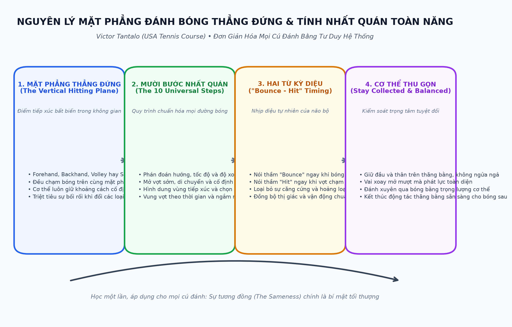
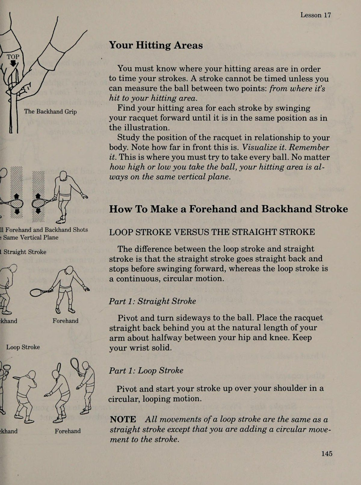
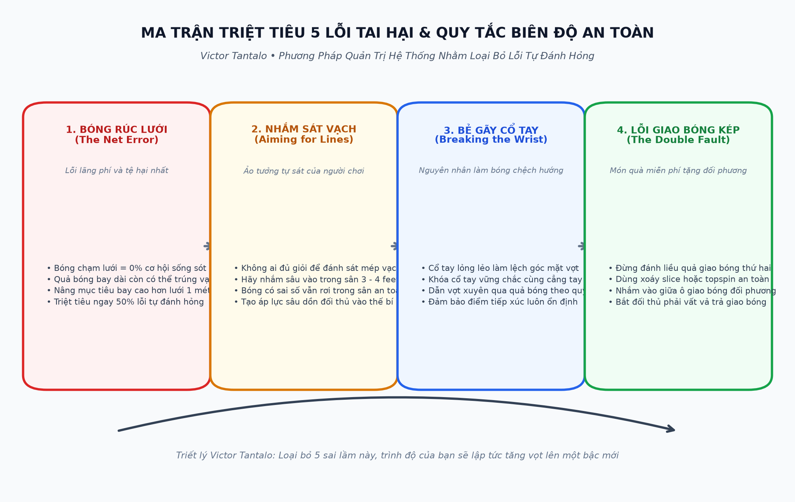
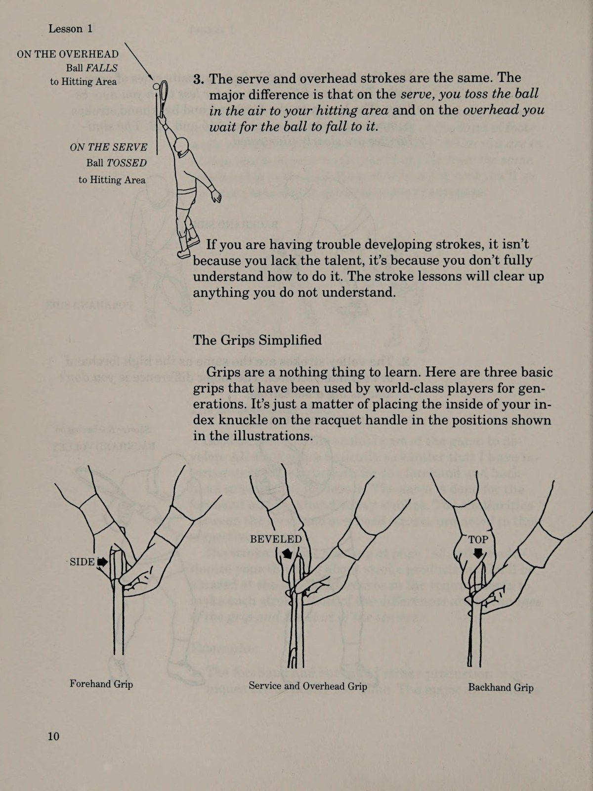
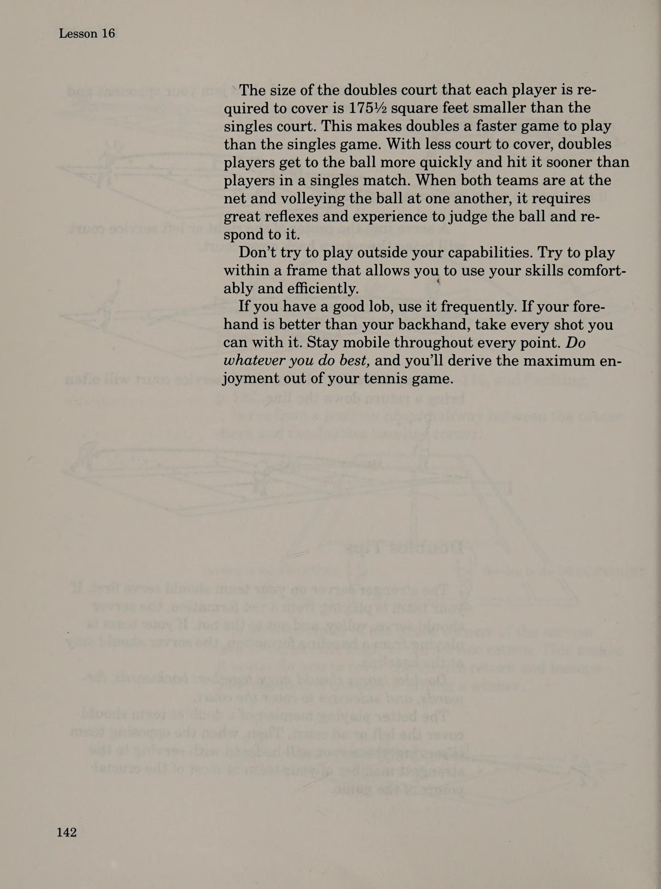
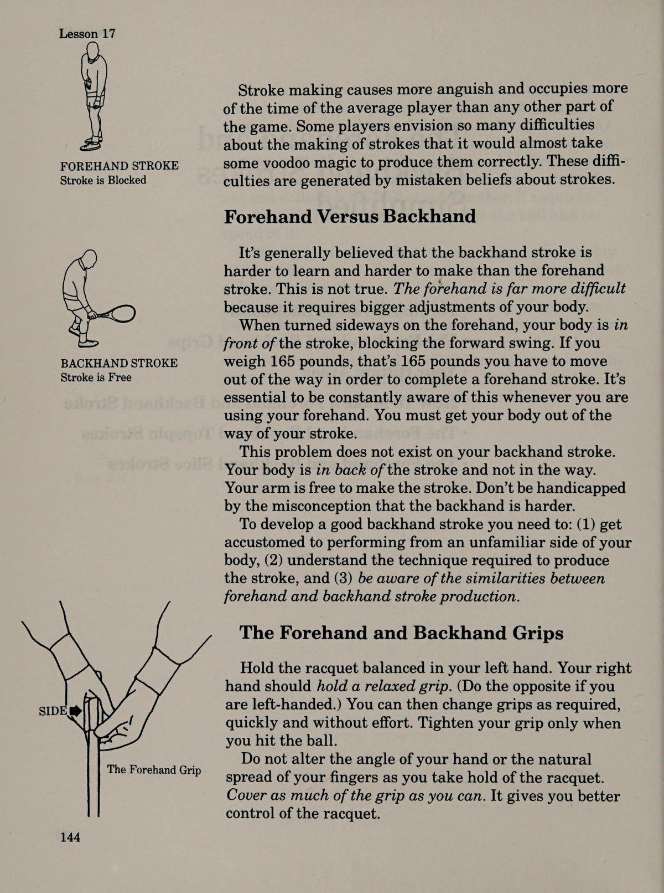
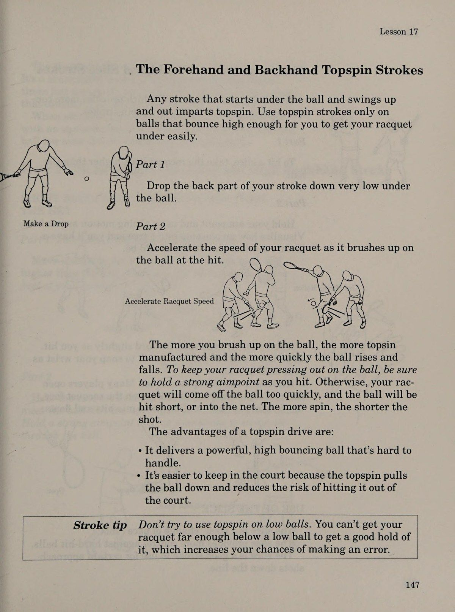
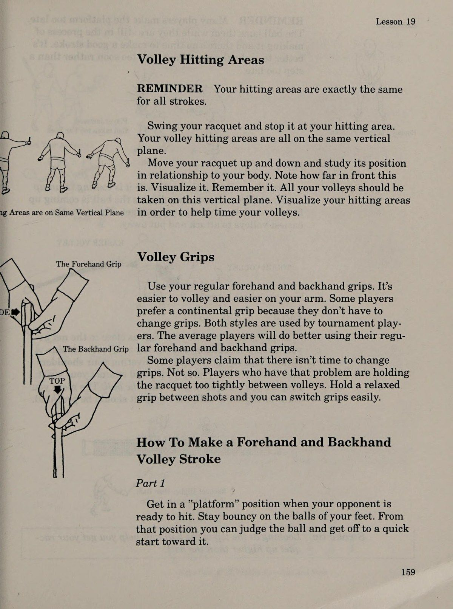
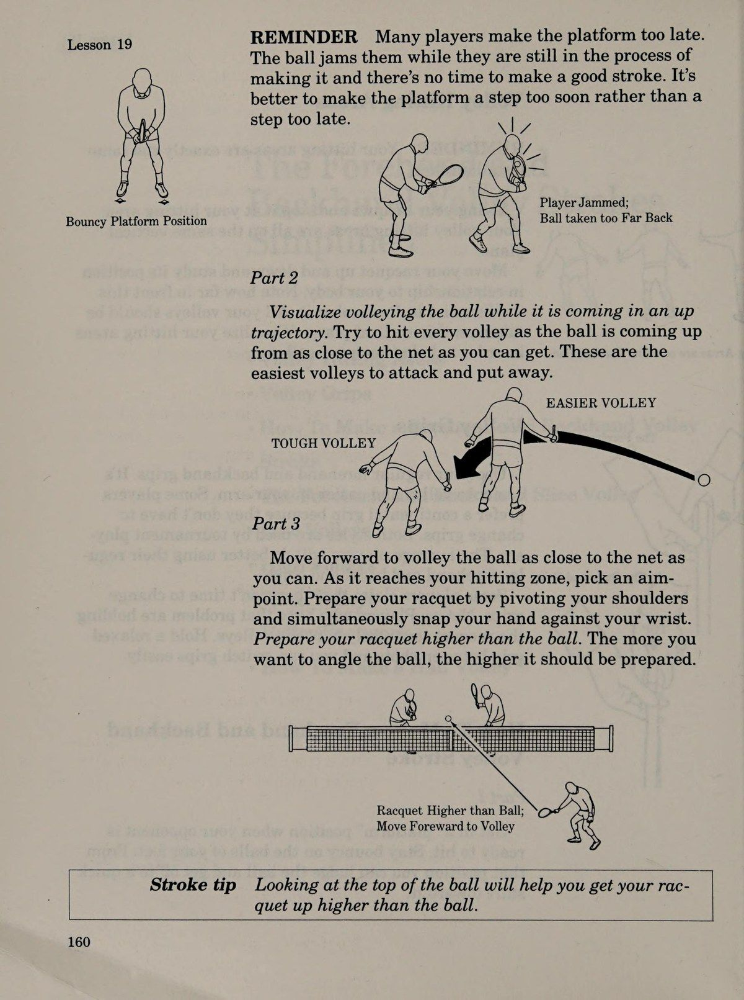
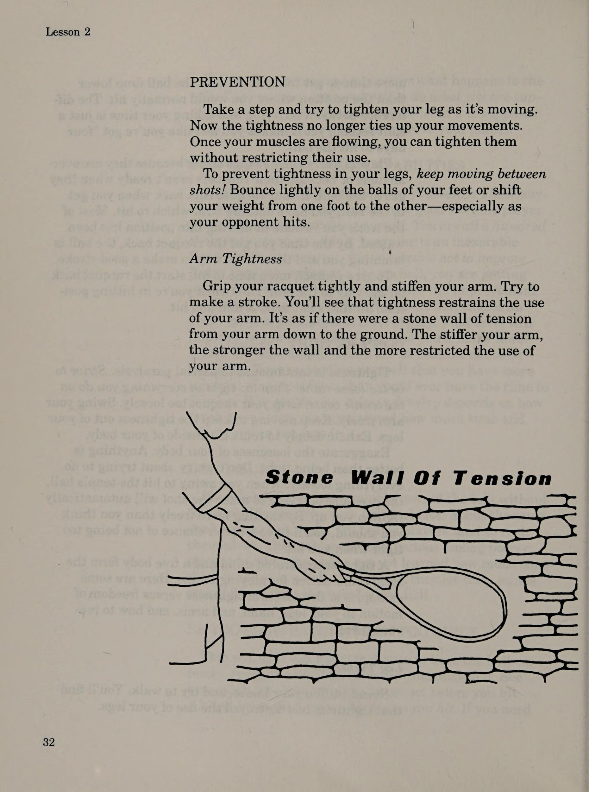

Khóa Học Quần Vợt Hoa Kỳ: 500 Phương Pháp Trực Quan
Bản dịch Việt ngữ này chỉ dùng cho mục đích học tập cá nhân, phi thương mại. Bản quyền tác phẩm gốc thuộc về tác giả và nhà xuất bản.
Giới thiệu: Câu chuyện thần kỳ của Victor Tantalo
Tình thế tiến thoái lưỡng nan của người chơi quần vợt trung bình Mục tiêu của người chơi quần vợt trung bình là (1) tận hưởng các khía cạnh xã hội của trò chơi quần vợt và (2) chơi đủ tốt để chấp nhận lời mời chơi mà không sợ bối rối. Một số bạn thậm chí có thể mong muốn được thi đấu ở các giải đấu địa phương hoặc khu vực. Trở ngại lớn nhất để đạt được những mục tiêu này là ở đâu và làm thế nào để có được trình độ học vấn cần thiết để thực hiện điều đó. Số lượng bài học quần vợt cần có để đảm bảo một nền giáo dục quần vợt tốt từ một vận động viên quần vợt chuyên nghiệp là nhiều hơn mức hầu hết mọi người có thể chi trả.
Điều này khiến người chơi trung bình (một hoặc hai giờ chơi quần vợt một lần, hai lần hoặc vài lần một tuần) phải đối mặt với việc tiếp thu kiến thức về quần vợt từng chút một từ các ấn phẩm quần vợt khác nhau, các bài học quần vợt không thường xuyên, từ những người chơi quần vợt khác, quan sát, thử và sai, và có lẽ đi nghỉ vài ngày tại trại quần vợt. Có được một nền giáo dục quần vợt đúng đắn theo cách ngẫu nhiên này là điều gần như không thể. Một nền giáo dục tốt đòi hỏi phải tuân theo và hoàn thành một khóa học có cấu trúc.
Học hành vụn vặt sẽ không làm được điều đó. Hãy cân nhắc xem bạn sẽ thu được lợi ích như thế nào từ một khóa học ở trường nếu bạn bỏ học trước khi hoàn thành. Câu trả lời là không nhiều lắm. Quần vợt cũng không có gì khác biệt. Bạn phải hoàn thành một khóa học toàn diện nếu muốn trở thành một người chơi giỏi.
Tham vọng của tôi là mang đến cho mọi người cơ hội được đào tạo toàn diện về quần vợt. Sân Tennis Hoa Kỳ là đỉnh cao của hơn 6 năm nỗ lực thực hiện mong muốn đó. Đó là một hệ thống học tập hoàn chỉnh. Hệ thống học tập này sẽ cải thiện trò chơi quần vợt của bạn ngay lập tức. 9 bài học đầu tiên sẽ dạy bạn cách chơi quần vợt tốt hơn mà không cần thực hiện bất kỳ thay đổi nào trong các cú đánh của bạn. Bài 10 đến 15 sẽ hướng dẫn bạn cách chọn lối chơi phù hợp nhất với khả năng của mình.
Bài 16 đơn giản hóa cách đánh đôi. Bài học từ 17 đến 24 đơn giản hóa các nét và cung cấp giải pháp cho các vấn đề về tạo nét. Bài 25 dạy cách thực hành. Trò chơi của bạn sẽ được cải thiện đáng kể khi bạn áp dụng những gì học được trong mỗi bài học. Thực hiện theo các hướng dẫn khóa học một cách chính xác. Hãy đặc biệt chú ý đến những người định hướng suy nghĩ của bạn và bạn sẽ phát huy hết khả năng của mình. Cách sử dụng khóa học tennis này Nghiên cứu từng bài học cho đến khi tâm trí của bạn được lập trình kỹ lưỡng với thông tin.
Khi bạn có thể nhận ra nguyên nhân mắc lỗi của mình khi chơi và biết cách sửa chữa, bạn sẽ biết rằng mình đã trở thành một tay vợt am hiểu quần vợt. Bất cứ khi nào bạn chơi xong, hãy tìm kiếm giải pháp cho mọi vấn đề mà bạn có thể gặp phải ngay từ cơ hội đầu tiên. Xem lại tất cả các bài học thường xuyên. Học đi học lại bài 1 và bài 2. Họ là một cái nhìn sâu sắc tuyệt vời về trò chơi và chính bạn. Không bao giờ ngừng sử dụng khóa học. Hãy nghĩ về nó như một tài liệu tham khảo liên tục. Mọi thứ bạn cần biết về quần vợt đều có ở đây.
Bài 1: Trò chơi đơn giản hóa & tính đồng nhất (sameness)
Trò chơi được đơn giản hóa ¢ Khả năng chơi quần vợt của bạn ¢ Tính đồng nhất (sameness) trong trò chơi
Hãy bắt đầu với sự hiểu biết chắc chắn về những gì cần thiết để học chơi quần vợt hoặc cải thiện kỹ năng chơi của bạn. Những kỹ năng thiết yếu nhất cần có là những phần vốn có của khả năng thể chất và tinh thần của mọi người. Các khả năng chạy, nhắm, ném, đánh, phán đoán tốc độ và khoảng cách đã trở thành một phần di sản thiên nhiên của bạn ngay từ khi còn rất nhỏ. Cải thiện trò chơi của bạn chỉ đơn giản là vấn đề học các phương pháp giúp phát huy tốt nhất các kỹ năng tự nhiên của bạn khi bạn chơi.
Dù bạn trẻ hay già, cao hay thấp, béo hay gầy, duyên dáng hay vụng về, khôn ngoan hay không khôn ngoan, không có chuyện không học được trò chơi hoặc không thể cải thiện nó. Khả năng chơi quần vợt của bạn Tất cả những người chơi quần vợt đều có những nghi ngờ về khả năng của họ vào lúc này hay lúc khác. Những cảm xúc này không được bảo đảm. Kinh nghiệm giảng dạy của tôi đã dạy tôi rằng một tay vợt bình thường có nhiều khả năng vốn có hơn bao giờ hết có thể được phát triển trong khoảng thời gian giới hạn dành cho quần vợt.
Để xua tan bất cứ lo lắng nào mà bạn có thể có về việc có được một nhân vật đáng ghen tị trên sân quần vợt, tôi mời bạn hãy xem thực tế của mình khi một cây vợt lần đầu tiên được cầm trên tay. Lúc đó tôi đã được nửa thế kỷ. Đúng vậy—tôi đã 50 tuổi. Tôi có tài năng thể thao đặc biệt nào? Không có. Tôi chỉ là một doanh nhân thừa cân đang tìm cách tập thể dục. Tôi bắt đầu bằng việc tham gia một bài học tennis, bài học đầu tiên gần như trở thành bài học cuối cùng của tôi. Tôi chơi tệ quá, kích thước 13 feet của tôi đột nhiên có cảm giác như cả hai đều là chân trái và cây vợt giống như một thiết bị giả không vừa vặn.
Tôi rời sân với tâm trạng thất vọng và xấu hổ. Bài học đó đã khắc sâu vào tâm trí tôi sự cân bằng trong ngày. Càng nghĩ về điều đó tôi càng thấy chán nản. Đột nhiên tôi nảy ra một ý nghĩ tò mò. Tôi bắt đầu tự hỏi điều gì một người năm mươi tuổi có thể đạt được thành tựu nếu anh ta lao vào trò chơi với sự nhiệt tình của một thiếu niên. Càng nghĩ tôi càng thấy nó hấp dẫn, cho đến cuối cùng thử thách không thể cưỡng lại được. Năm năm sau, dù bạn có tin hay không, tôi đã chuyển sang chuyên nghiệp và trong vòng vài năm, tôi được đánh giá là một trong những chuyên gia giảng dạy bận rộn nhất ở Hoa Kỳ. Một số học trò của tôi đã đi hàng trăm dặm mỗi tuần để đến gặp tôi để học quần vợt.
Quảng cáo tràn lan trên báo, tạp chí, đài phát thanh và truyền hình. Tôi được giới thiệu trên Eyewitness News, một tạp chí quần vợt quốc gia, trên trang bìa của Hartford Courant Sunday Magazine, trên các chương trình trò chuyện và trên các tờ báo khác. Và tất cả bắt đầu với một chế độ học tập không ngừng nghỉ hàng ngày. Lúc đầu, tôi bối rối và không chắc chắn vì dường như có quá nhiều điều mới mẻ và xa lạ để học. Ngay cả khi tôi nhận ra rằng mình đã đạt được một số tiến bộ, tôi vẫn thường cảm thấy mình kém cỏi.
Giống như phần lớn những người chơi quần vợt, J đang cố gắng với ảo tưởng rằng các yêu cầu để thực hiện các cú đánh và cú đánh khác nhau hoàn toàn khác nhau. Ấn tượng này là phổ biến và làm cho việc cải tiến có vẻ phức tạp hơn nhiều so với thực tế. Ấn tượng tương tự là điều tạo ra sự lo lắng và nghi ngờ ở nhiều người chơi về việc liệu họ có khả năng học được nhiều phần của trò chơi hay không. Điều gây ra sự hiểu lầm này, tôi mới phát hiện ra, là cách quần vợt thường được dạy, nói hoặc viết về.
Các tay vợt cũng như các chuyên gia quần vợt đều nói và viết về từng phần của trận đấu như thể nó là một thực thể riêng biệt. Không có điểm tương đồng nào được ghi nhận. Nghề nghiệp ban đầu của tôi là cố vấn quản lý. Vì thế, theo lẽ tự nhiên, tôi bắt đầu phân tích chi tiết công việc hàng ngày của mình. Thật ngạc nhiên, tôi đã sớm có một khám phá đáng kinh ngạc. Tôi thấy rằng để thực hiện bất kỳ cú đánh hay cú đánh nào, hầu hết suy nghĩ và hành động của tôi đều giống nhau.
Tôi đã làm đi làm lại những điều tương tự. Một khi tôi đã nắm được ý nghĩa và sự hiểu biết về mức độ tương tự của những điều này.
đã đơn giản hóa việc học trò chơi, toàn bộ quan điểm của tôi đã trải qua một sự thay đổi to lớn. Từ thời điểm đó trở đi, việc cải thiện trò chơi của tôi trở thành một vấn đề tương đối đơn giản. Sự cân bằng của bài học này sẽ đơn giản hóa trò chơi quần vợt bằng cách dạy mức độ giống nhau trong việc thực hiện bất kỳ cú đánh, cú đánh hoặc cách chơi nào. Tính đồng nhất (sameness) trong trò chơi Những cú đánh được đơn giản hóa Để đơn giản hóa ý nghĩa của tính đồng nhất (sameness), chúng ta hãy xem người chơi làm gì khi thực hiện cú đánh thuận tay.
Người chơi đánh giá hướng của quả bóng đang tới, chuẩn bị vợt, ước tính tốc độ và độ xoáy của bóng, di chuyển về phía bóng, hình dung khu vực đánh bóng, chọn cú đánh để thực hiện, quyết định vị trí đánh bóng, chọn cú đánh để sử dụng, tính thời gian của cú đánh sao cho vợt kết nối với bóng khi nó đến khu vực đánh bóng và nhắm vào bóng. Bước nào trong 10 bước này không áp dụng cho việc thực hiện tất cả các cảnh quay khác? CÂU TRẢ LỜI LÀ KHÔNG!
Bạn làm những điều tương tự cho mỗi lần chụp!
Khu vực đánh bóng được đơn giản hóa Hãy vung vợt của bạn như thể bạn đang thực hiện một cú đánh thuận tay và dừng nó ở khu vực đánh bóng của bạn. Làm tương tự với trái tay của bạn. Di chuyển vợt của bạn lên xuống và nghiên cứu vị trí của nó trong mối quan hệ với cơ thể bạn. Lưu ý khoảng cách phía trước này là bao nhiêu. Khu vực đánh bóng của bạn là một mặt phẳng thẳng đứng tính từ mặt đất đến độ cao mà bạn có thể đánh bóng. Mọi cú vô lê, đánh đầu, giao bóng, trái tay và thuận tay đều phải được đánh trong khu vực này. Đánh tất cả các cú đánh thuận tay và trái tay trên cùng một mặt phẳng thẳng đứng Một ảo tưởng tồn tại ở nhiều người chơi quần vợt là họ chơi bóng ở phía trước nhiều hơn bình thường khi giao bóng, vô lê hoặc di chuyển vào để đánh một quả bóng chạm bóng ngắn trong sân của họ.
Điều đó không đúng. Khi các cầu thủ di chuyển vào bóng, họ sẽ nhận bóng sớm hơn, nhưng không nhiều hơn ở phía trước mình. Những người chơi giỏi cố gắng đặt cơ thể của họ theo cùng một mối quan hệ với quả bóng trong mỗi cú đánh trước khi họ đánh.
Động tác bằng chân được đơn giản hóa Khi thực hiện cú đánh, hãy nghĩ nhiều hơn về vị trí bạn muốn có liên quan đến quả bóng hơn là loại động tác bằng chân mà bạn sử dụng để đạt được điều đó. LƯU Ý ĐIỀU NÀY: Khi bạn ở vị trí đánh, cơ thể bạn phải luôn có mối quan hệ tương tự với bóng. Hãy ghi nhớ điều này và bạn sẽ thực hiện những bức ảnh của mình với cảm giác chắc chắn ngày càng tăng. Các cú đánh được đơn giản hóa Các cú đánh tốt là phần dễ phát triển nhất của trò chơi. Về cơ bản, tất cả các cú đánh đều giống nhau đến mức tôi đã kết hợp các hướng dẫn về cú đánh thuận tay và cú đánh trái tay vào một bài học.
Điều tương tự cũng được thực hiện đối với các cú đánh vô lê thuận tay và trái tay. Những điểm tương đồng giữa cú giao bóng và cú đánh trên cao được ghi lại trong các bài học tương ứng. Các bài học về cú đánh, bắt đầu từ trang 143, sẽ cách mạng hóa suy nghĩ của bạn về việc tạo ra cú đánh. Bạn sẽ ngạc nhiên trước những khác biệt nhỏ trong yêu cầu thực hiện mỗi cú đánh. Hầu hết sự khác biệt là ở sự thay đổi cách cầm vợt và thời điểm bắt đầu các cú đánh. Ví dụ 1. Kỹ thuật tạo cú đánh thuận tay và cú đánh trái tay về cơ bản là giống nhau.
Sự khác biệt chính là rằng các cú đánh được thực hiện từ các phía đối diện của cơ thể bạn. Những khác biệt khác ít hơn nhiều so với những gì bạn nghĩ hiện nay. Bài học về các cú đánh thuận tay và trái tay so sánh các cú đánh ở trang 145 và 146. Những điểm tương đồng được minh họa rõ ràng. 2. Các cú đánh vô lê giống như các cú đánh thuận tay hoặc trái tay cao. Sự khác biệt chính là bạn không thực hiện cú bơi ngửa lớn như vậy. CÚ TAY TRÁI CAO
TRÊN BÓNG TRÊN ĐẦU RÚT vào Khu vực đánh bóng TRÊN BÓNG giao bóng được ném vào Khu vực đánh bóng Tay cầm thuận tay 3. Các cú giao bóng và cú đánh trên cao giống nhau. Sự khác biệt chính là khi giao bóng, bạn tung bóng lên không trung đến khu vực đánh của mình và ở trên cao bạn đợi bóng rơi vào nó. Nếu bạn gặp khó khăn trong việc phát triển các cú đánh, đó không phải là do bạn thiếu tài năng mà là do bạn chưa hiểu rõ cách thực hiện. Các bài học về đột quỵ sẽ làm sáng tỏ bất cứ điều gì bạn chưa hiểu.
Grips Simplified Grips không có gì đáng để học cả. Dưới đây là ba cách cầm vợt cơ bản đã được các tay vợt đẳng cấp thế giới sử dụng qua nhiều thế hệ. Vấn đề chỉ là đặt mặt trong đốt ngón trỏ của bạn lên cán vợt ở các vị trí như trong hình minh họa. BEVELED một cú giao bóng và kiểu cầm trái tay trên cao
Cách chơi được đơn giản hóa Bất cứ khi nào bạn học một cách chơi ở phía thuận tay trên sân của mình, bạn có thể sử dụng cách chơi tương tự ở phía trái tay của mình chỉ bằng cách đảo ngược nó và ngược lại. Ví dụ BÊN TRÁI BÊN THUẬN TIỆN = Tiếp cận trái tay Sút dọc theo đường Tiếp cận thuận tay Sút dọc biên Đối phương trả về Cú đánh thuận tay dọc biên Đối thủ Trả bóng bằng trái tay dọc theo vạch
Chiến thuật được đơn giản hóa Các chiến thuật mà bạn sử dụng để bảo vệ vị trí của mình ở một bên sân của bạn cũng giống như các chiến thuật được sử dụng để bảo vệ phía bên kia. aN Lob thuận tay và Lob trái tay Nếu bạn đánh các cú đánh trái tay hiệu quả, hãy sử dụng các cú đánh tương tự ở phía thuận tay của bạn. des Backhand Deep Down the Center ibe Forehand Deep Down the Center Mẹo chơi Hãy nhận biết những điểm giống nhau lặp đi lặp lại trong trò chơi khi bạn chơi hoặc luyện tập, và bạn sẽ nhanh chóng cải thiện trò chơi của mình.
Nếu bạn thực hiện cú vô lê thuận tay hiệu quả tới một phần sân, hãy thực hiện cú đánh tương tự với cú vô lê trái tay của bạn sang phía đối diện của sân. —— Cú vô-lê góc thuận tay Cú vô-lê góc trái tay Nếu bạn thực hiện cú đánh tiếp cận tốt bằng trái tay, bạn có thể sử dụng cú đánh tiếp cận tương tự bằng cú thuận tay của mình. CÁC SÚT TIẾP CẬN SÂU XUỐNG TRUNG TÂM Thuận tay Nếu bạn đánh hiệu quả đến những vị trí nhất định ở phía bên phải sân, hãy đảo ngược nó và thiên về những vị trí tương tự ở phía bên trái sân.
Bây giờ bạn đã biết rằng chơi quần vợt đơn giản hơn nhiều so với bạn nghĩ, bạn sẽ có thể bắt đầu trận đấu quần vợt của mình với cảm giác nhẹ nhõm và tự tin.
Bài 2: Mặt phẳng đánh bóng (hitting plane) thẳng đứng & Hệ thống học tập
Đơn giản hóa việc học ¢ Hệ thống học tập của Hoa Kỳ PHẦN Cách học tối ưu PHẦN II Cách học PHẦN III Học từng phần một PARTIV Cách phát triển trò chơi của bạn PHẦN V_ Khía cạnh tâm lý của trò chơi

Quần vợt được mô tả là một trò chơi khó học chơi. Các hiệp hội quần vợt, các chuyên gia và các ấn phẩm đều mô tả quần vợt theo cách này. Khi người chơi không học được và bỏ game luôn được cho là do độ khó của trò chơi. Tuy nhiên, trò chơi này không khó; chính cách trò chơi được dạy và cách mà hầu hết mọi người cố gắng học nó đã gây khó khăn. Gần như tất cả mọi người đều cố gắng học chơi tennis bằng cách thỉnh thoảng chơi và có lẽ bằng cách học tennis mỗi tuần một lần trong vài tuần.
Một số học thậm chí còn rời rạc hơn. Cho dù bạn đang chơi hay đang học, khoảng thời gian thường là ba mươi, sáu mươi hoặc chín mươi phút. Hãy tính xem bạn sẽ có bao nhiêu thời gian để học nếu bạn thực hiện sáu cú đánh với thời gian trải đều giữa chúng. THỜI GIAN BÀI HỌC 30 PHÚT 60 PHÚT 90 PHÚT TIỆN 5 phút. 10 TRÁI 1D 5 phút. 10 LÀ BÓNG CHUYỀN THUẬN TIỆN 5 phút. 10 15 BÓNG CHÁY TRÁI 5 phút. 10 15 PHỤC VỤ 5 phút. 10 15 TRÊN 5 phút.
10 15 30 phút. 60 90 Trong học nhóm, vấn đề thời gian càng được nâng cao. Nếu có sáu người trong một lớp thì tổng thời gian có thể dành cho mỗi người trong một bài học nửa giờ là năm phút, trong một bài học một giờ là mười phút, và trong một bài học một tiếng rưỡi là mười lăm phút. Nếu phân tích này được tiến thêm một bước nữa, thì ví dụ này sẽ hiển thị lượng thời gian chính xác mà bạn có thể dành cho riêng mình để phát triển các cú đánh hoặc để đánh bóng tennis cho bạn.
THỜI GIAN BÀI HỌC 30 PHÚT 60 PHÚT 90 PHÚT TIỀN 50 giây 100 giây 150 giây TRÁI 50 giây 100 giây 150 giây BÓNG TAY THUẬN 50 giây 100 giây 150 giây BÓNG TRÁI 50 giây 100 giây 150 giây PHỤC VỤ 50 giây 100 giây 150 giây TỔNG QUÁT 50 giây 100 giây 150 giây 300 giây 600 giây 900 giây TỔNG THỜI GIAN CHO MỖI HỌC SINH 5 PHÚT 10 PHÚT'-- 15 PHÚT e Tại sao trò chơi không có vẻ khó?
Có thể học được gì trong vài phút? Như bạn có thể thấy, không phải vì trò chơi khó hay do bạn thiếu năng lực; chỉ là bạn không có nhiều cơ hội để học và giáo viên của bạn không có nhiều cơ hội để dạy. Tôi không biết ai đã “ra lệnh” dạy tennis mỗi tuần một lần, nhưng đó là hình thức thường được sử dụng. Học chơi quần vợt không khác gì học ở các lĩnh vực khác. Nếu bạn được bảo rằng trẻ em chỉ nên đến trường một giờ mỗi tuần, bạn sẽ kinh ngạc khi nghĩ rằng chúng sẽ mất bao lâu để học được bất cứ điều gì.
Tuy nhiên, đây là cách mà hầu hết mọi người đều cố gắng học chơi quần vợt. Với khoảng thời gian trôi qua quá lâu giữa các bài học hoặc vui chơi, các kỹ năng sẽ “tan vỡ” và nhiều thứ bị lãng quên. Mức độ chơi của bạn càng thấp, bạn càng quên. Kết quả là mỗi lần bạn ra ngoài chơi quần vợt, một phần thời gian đó phải được dành để cố gắng đưa bản thân trở lại vị trí cũ vào cuối buổi tập trước trước khi bạn có thể tiến bộ hơn nữa. Điều này gây lãng phí thời gian khi bạn luyện tập và lãng phí tiền bạc, thời gian khi bạn tham gia một bài học.
Nếu bạn không sử dụng một hệ thống học tập tốt, con đường cải thiện khả năng chơi quần vợt của bạn sẽ giống như một chuyến đi vô tận chẳng đi đến đâu. Khi quyết định học chơi tennis, tôi đã có ba mươi năm kinh nghiệm giải quyết các vấn đề về điều hành và đào tạo của nhiều doanh nghiệp khác nhau. Nền tảng này đã cho tôi cái nhìn sâu sắc để nhận ra rằng phương pháp giảng dạy ods được sử dụng sẽ ngăn cản mọi cơ hội mà tôi có thể có để đạt được mục tiêu của mình. Kết quả là tôi chưa bao giờ nghĩ đến việc học theo cách quy định. Sử dụng kinh nghiệm của tôi trong việc đào tạo người khác, J đã phát triển một hệ thống học tập khiến cho việc không học là không thể được. Nó đảm bảo cho sự phát triển tối đa năng lực của tôi một cách nhanh nhất. Khi tôi chuyển sang chuyên nghiệp, nền tảng thành công của tôi là giảng dạy bằng hệ thống này. Những người mới bắt đầu học chơi chỉ trong vài giờ và những người chơi nâng cao đã có những cải tiến lớn.
Nhiều người trưởng thành từ ba mươi đến sáu mươi tuổi đã thực sự từ bỏ hy vọng trở thành vận động viên quần vợt. Hệ thống học tập không bao giờ thất bại. Bây giờ nó được gọi là HỆ THỐNG HỌC TẬP Hoa Kỳ. Tính đúng đắn của nó được hỗ trợ bởi loại người đến gặp tôi để học. Nhiều người nằm trong số những người thành công nhất đất nước. Một số điều hành các tập đoàn lớn trong nước và quốc tế. Những người khác là chủ ngân hàng, chủ doanh nghiệp, giáo sư, bác sĩ, luật sư và các nhà điều hành doanh nghiệp khác.
Chưa ai từng đặt câu hỏi về tính hợp lệ của hệ thống học tập, và chưa ai từng thất bại trong việc trở thành một vận động viên quần vợt. Hệ thống học tập của Hoa Kỳ I. Cách học tối ưu Các kỹ năng chơi quần vợt đã học được có thể được so sánh với các kỹ năng bơi lội, đi xe đạp, lái ô tô, v.v. Một khi đã học, bạn sẽ không bao giờ đánh mất các kỹ năng này. Nếu bạn ngừng chơi, bạn sẽ bị rỉ sét, nhưng bạn sẽ không bao giờ quên. Tuy nhiên, các kỹ năng chỉ được lập trình một phần sẽ nhanh chóng bị mất đi. Do đó, điều quan trọng là phải khắc phục các kỹ năng trong đầu bạn một cách nhanh chóng.
Giống như bất kỳ hình thức giáo dục nào khác, giáo dục quần vợt phải liên tục nhất có thể. Lên lịch các bài học chặt chẽ với nhau, tốt nhất là vào những ngày liên tiếp. Càng nhiều học liên tục thì bạn tiến bộ càng nhanh. Cho dù bạn là người mới bắt đầu, người chơi có trình độ cao hay người chơi trong giải đấu, các bài học được thực hiện gần nhau, trong hoặc ngoài sân đấu, sẽ luôn mang lại kết quả tốt nhất. Luôn sắp xếp lịch trình của bạn theo cách này. Cho dù bạn tập luyện quần vợt vài lần một tuần hay một tháng, hãy thiết lập lịch trình của bạn để thực hiện việc đó càng gần nhau càng tốt. Điều này sẽ cho bạn cơ hội tốt hơn nhiều để củng cố bất cứ điều gì bạn đang làm trong tâm trí.
Một khi nó được lập trình kỹ lưỡng, bạn sẽ không bao giờ mất nó. Bây giờ bạn sở hữu sân tennis này, bạn có một môi trường học tập lý tưởng. Bạn có thể tham gia các bài học thường xuyên tùy thích và nghiên cứu các phần của trận đấu mà bạn muốn cải thiện trước khi ra sân. Đây cũng là cách học tập của sinh viên ở các lĩnh vực khác. Đầu tiên, họ sẽ tham gia các khóa học bắt buộc và sau đó họ sẽ đi ra ngoài thế giới để xem mình có thể làm được những gì. Bây giờ bạn có thể làm điều tương tự trong quần vợt.
II. Làm thế nào để học tập trung tập trung! Giáo viên liên tục thúc giục học sinh tập trung. Hiếm khi những khó khăn liên quan đến việc tập trung được giải thích và hiếm khi học sinh được cung cấp phương pháp để thực hiện điều đó. Nếu không có kiến thức này, việc có được khả năng chơi quần vợt sẽ mất nhiều thời gian hơn. VẤN ĐỀ TẬP TRUNG Giống như mọi sinh vật, chúng ta luôn ở trong trạng thái cảnh giác thường xuyên với môi trường xung quanh. Hệ thống cảnh báo hoặc radar tích hợp của chúng tôi luôn hoạt động!
Điều này cản trở sự tập trung của chúng ta và khiến chúng ta không thể tập trung 100% vào bất cứ điều gì quá một khoảnh khắc ngắn ngủi.
SỰ PHÂN TÍCH BÊN NGOÀI Cho dù chúng ta có cố gắng tập trung đến đâu, các giác quan của chúng ta vẫn lao vào mọi hình ảnh, âm thanh hoặc mùi vị trong phạm vi của chúng ta. Sau khi kiểm tra sự xao lãng, nếu chúng ta kết luận rằng nó không có hậu quả gì, tâm trí chúng ta sẽ quay trở lại điều chúng ta đang tập trung vào. Việc này được thực hiện với tốc độ nhanh như chớp, đến nỗi chúng ta khó có thể nhận ra rằng sự tập trung của mình đã bị phá vỡ. SỰ PHÂN TÍCH BÊN TRONG Ngoài những điều xao lãng bên trong còn có những sự xao lãng bên trong. Những tư tưởng tán loạn trôi nổi trong tâm trí chúng ta một cách vô chủ ý và phá vỡ sự tập trung của chúng ta.
Trong thời gian tâm trí chúng ta lang thang, việc học tập của chúng ta dừng lại cho đến khi sự tập trung của chúng ta trở lại với việc chúng ta đang làm. Tất cả việc học tập đều được hoàn thành trong quá trình học tập bắt đầu và kết thúc không ngừng này. MÔI TRƯỜNG TỐT Trong một căn phòng không có phiền nhiễu, bạn sẽ tập trung và học nhanh hơn so với trong một căn phòng, chẳng hạn như nơi bạn phải trả lời điện thoại thường xuyên hoặc nơi có nhiều phương tiện giao thông. Điều này cũng đúng trên sân tennis. Sự tập trung của bạn sẽ tốt hơn nếu bạn có thể chơi trên sân tách biệt với những người chơi khác.
MÔI TRƯỜNG BẬN RỘN Trong môi trường bận rộn, khả năng tập trung của bạn đôi khi không quá một chớp mắt trước khi bị phân tâm. Bạn có thể học được điều gì trong khoảng thời gian vô cùng ngắn ngủi này không? Câu trả lời chắc chắn là CÓ! Sự kỳ diệu của tâm trí bạn thật tuyệt vời. Ngay cả trong chớp mắt, bộ não của bạn cũng sẽ tiếp thu thông tin.
QUY TRÌNH HỌC TẬP ĐƠN GIẢN HÓA Chia những gì bạn đang cố gắng học thành những phần nhỏ. Những phần nhỏ cần một suy nghĩ đều có kích thước phù hợp. Chúng sẽ tiến gần nhất đến mức phù hợp với khoảng thời gian ngắn nhất mà bạn phải học. Bây giờ, cho dù thời gian tập trung của bạn có ngắn đến đâu, bạn vẫn sẽ học được—vâng, ngay cả trong chớp mắt. Điều này sẽ đơn giản hóa quá trình học tập. Hơn nữa, nó sẽ đảm bảo khả năng học tập của bạn. Việc sử dụng hệ thống học tập này mang lại cơ hội tốt nhất cho việc học tập liên tục trong mọi môi trường.
Bạn sẽ sớm khám phá ra rằng những khối kiến thức nhỏ sẽ nhanh chóng phát triển thành những khối lớn. LÀM ĐIỀU ĐÓ CHẬM CHẬM Khi bạn ở trên sân tennis, hãy làm mọi việc một cách chậm rãi và chu đáo nhất có thể. Hãy cho bản thân mọi cơ hội để hiểu, cảm nhận và hình dung những gì bạn đang làm. Bạn càng thận trọng thì những gì bạn đang cố gắng học sẽ càng sớm được lập trình trong não bạn. Bất cứ khi nào bạn thực hiện một cú đánh hoặc chuyển động tốt, nó sẽ xây dựng các kỹ năng của bạn; bất cứ khi nào bạn làm điều xấu, nó sẽ khiến họ thất vọng.
Bạn liên tục bổ sung hoặc bớt đi các kỹ năng của mình mỗi khi bạn đánh một quả bóng tennis. Bộ não của bạn học được những điều sai trái bạn làm một cách dễ dàng cũng như những điều đúng đắn. Bất cứ việc gì bạn làm thường xuyên nhất đều sẽ được lập trình sẵn trong não bạn. Không có cách nào để từ chối những việc bạn làm sai cho đến khi bạn biết được điều gì là đúng. Chỉ khi đó bạn mới có thể sửa chữa những sai lầm của mình. Để cải thiện khả năng chơi quần vợt của mình, bạn phải thiết lập và thiết lập lại những cách chơi đúng trong tâm trí cho đến khi chúng hoàn toàn được thấm nhuần.
Do đó, hãy nghiên cứu các phần của trận đấu mà bạn dự định thực hiện trước khi ra sân.
NGƯỜI CHƠI TỐT NHẤT KHÔNG SUY NGHĨ KHI CHƠI? Có một quan niệm sai lầm phổ biến về mức độ “suy nghĩ” của người chơi khi họ chơi. Điều này là do hai câu nói thường xuyên xuất hiện trong các bài viết về quần vợt dưới dòng chữ của các chuyên gia và huấn luyện viên nổi tiếng. (1) “Những cầu thủ giỏi nhất không suy nghĩ khi họ chơi.” (2) “Khi chơi, tốt nhất đừng suy nghĩ nhiều.” Những tuyên bố này là không chính xác. Nếu bạn không suy nghĩ, cơ thể bạn không thể hoạt động được. Đây là một ví dụ minh họa rõ ràng điều đó: Nếu bạn muốn lật trang này, chỉ có ý nghĩ lật nó mới có thể giúp bạn làm được điều đó.
Nếu không có suy nghĩ đó bạn sẽ ở ngay trang 21 này mãi mãi. Suy nghĩ là công cụ duy nhất giúp bạn hoạt động. Điều đúng là bạn làm nhiều việc dường như không cần suy nghĩ. Điều này là do hai lý do: (1) Bạn trở nên thành thạo hơn khi làm đi làm lại những việc giống nhau mỗi ngày đến mức bạn hầu như không còn ý thức suy nghĩ nữa. (2) Bạn nhận thức rõ hơn về việc thực hiện một chuyển động thể chất hơn là suy nghĩ cho phép bạn thực hiện chuyển động đó.
Ví dụ Hãy nghĩ về số lượng công việc bạn làm thường xuyên khi thức dậy mỗi ngày. Bắt đầu với việc ra khỏi giường, phần lớn công việc hàng ngày này dường như được thực hiện mà không cần suy nghĩ, tuy nhiên nếu bạn không nghĩ đến việc thực hiện từng việc trong thói quen của mình thì bạn sẽ không có khả năng thực hiện bất kỳ công việc nào trong số đó. Khi bạn chơi quần vợt, bạn sẽ thực hiện những cú đánh giống nhau, những cú đánh giống nhau, những động tác giống nhau lặp đi lặp lại. Khi kiến thức về cách tạo ra chúng ngày càng được lập trình sẵn, bạn sẽ bắt đầu tạo ra chúng mà không cần suy nghĩ.
Tuy nhiên, đừng bao giờ phạm sai lầm khi tin rằng bạn có thể thực hiện mà không cần suy nghĩ! Trong một trận đấu quần vợt, quả bóng hoạt động giống như một phím trên máy tính và báo hiệu cho não bạn phản ứng. Theo nghĩa đen, chỉ trong chớp mắt, não của bạn sẽ quét các chương trình bạn đã tiếp thu và kích hoạt phản hồi tốt nhất mà bạn có thể thực hiện được.
III. Học từng phần một Bộ não của bạn có thể xử lý nhiều suy nghĩ với tốc độ đáng kinh ngạc, nhưng chỉ mỗi lần một suy nghĩ. Tốc độ suy nghĩ lần lượt xuất hiện tạo ra ảo tưởng rằng bạn có thể nghĩ ra nhiều thứ cùng một lúc. Bạn không thể. Bạn có thể xử lý từng việc một với tốc độ rất nhanh. Do đó, bạn chỉ nên học một điều tại một thời điểm. Bất kỳ phương pháp nào khác sẽ làm xáo trộn hoạt động tự nhiên của não, làm chậm quá trình học tập và tạo ra cảm giác bối rối.
Cách để học tốt bất cứ điều gì là tiến hành một cách có hệ thống, học từng phần một cho đến khi mỗi phần được lập trình trong não bạn. Khi bộ não của bạn tiếp thu từng phần, nó sẽ ghép chúng lại với nhau thành một chuỗi liên tục. Ví dụ _ Trẻ học nói như thế nào? Đầu tiên trẻ học từ, sau đó học cụm từ và sau đó là câu. Bộ não của trẻ sau đó sẽ sắp xếp mọi thứ lại với nhau và trẻ bắt đầu nói trôi chảy. Quần vợt được học theo cách tương tự, từng phần một cho đến khi các phần khớp với nhau.
Bạn sẽ thấy rằng, mặc dù điều này có vẻ là học chậm, nhưng thực ra lại là học nhanh. Cách chia các cú đánh, lối đánh và động tác bằng chân thành các phần Ví dụ Cú đánh thuận tay 1. Bắt đầu 2. Đỉnh 3. Mặt sau 4. Về phía trước 5. Kết thúc cú đánh của cú đánh một phần của cú vung cú đánh hoặc thả bóng
Ví dụ về cú sút tiếp cận và cú vô lê BÊN TRÁI .) Sage, =Geet ZOOS ex 1 | : AiG Z ge J) Tiếp cận trái tay Sút dọc biên đối phương Trả đòn bằng cú thuận tay dọc biên & Cú vô lê trái tay chéo sân để ghi điểm
Ví dụ về động tác chân <-> > 1. Giữ thăng bằng trên quả bóng của 2. Di chuyển về phía quả bóng bằng cách nhảy chân nhỏ. Nhảy nhẹ trong khi hoặc sải bước..Đừng sải bước dài trừ khi đối thủ của bạn đánh. bạn buộc phải làm vậy. %, TRÊN ; * 3. Thiết lập ở vị trí đánh. 4. Bước cạnh bóng khi bạn đánh. C) LÀM VIỆC TRÊN MỘT PHẦN LÚC NÀY Cho dù bạn đang thực hiện một cú đánh, đánh hay chuyển động, chỉ làm việc trên một phần tại một thời điểm. Chọn phần khiến bạn gặp rắc rối nhất và chỉ nghĩ đến phần đó trong mỗi lần chụp cho đến khi bạn cải thiện được nó.

Ví dụ _ Nếu bạn đang thực hiện cú đánh thuận tay và bạn chưa kết thúc cú đánh, chỉ nghĩ đến phần đó và tập trung hoàn toàn vào việc vung bóng qua bóng. Bất cứ điều gì xảy ra với quả bóng, hoặc các phần khác của cú đánh, đều không quan trọng vào thời điểm này. Công việc của bạn chỉ là học phần mà bạn đang cố gắng cải thiện. Khi bạn đã học được phần đó, quá trình học tập sẽ trở nên dễ dàng hơn.
đã hoàn thành. Bây giờ hãy chuyển sang phần tiếp theo khiến bạn thất bại và lặp lại các quy trình tương tự. Tiếp tục cải thiện hết phần này đến phần khác cho đến khi bạn hoàn thiện nét vẽ. Ví dụ Khi bạn đang thực hiện cú đánh và gặp khó khăn trong việc chọn vị trí đánh bóng tốt, hãy chỉ nghĩ đến động tác bằng chân cho đến khi bạn khắc phục được vấn đề. Một lần nữa, không có gì khác được tính. Việc bạn có thực hiện cú đánh hay không không quan trọng. Công việc của bạn là học cách vào tư thế đánh thoải mái.
Đó là tất cả những gì bạn đang cố gắng học. Ví dụ: Nếu một lượt chơi yêu cầu bạn lên lưới và bạn thấy mình dừng lại quá xa lưới, hãy buộc bản thân không nghĩ gì khác ngoài việc đến vị trí lưới khi bạn cố gắng chơi lại. Một lần nữa, không có gì quan trọng hơn việc đạt được vị trí lưới. i = ce Hãy áp dụng hệ thống học tập này để khắc phục mọi vấn đề trong trận đấu quần vợt của bạn.
IV. Cách phát triển trò chơi của bạn Thực hành theo cách bạn phải chơi—Đánh mọi quả bóng như thể bạn đang chơi một điểm. Các bài tập để cải thiện trò chơi của bạn không dành cho người chơi bình thường. Những người chơi nghề nghiệp có thể có đủ thời gian để tập luyện vẹt và tính kém hiệu quả của nó. Họ luyện tập hàng giờ mỗi ngày. Bạn không thể. Bạn muốn cải thiện môn quần vợt của mình. Bạn muốn làm điều đó thật nhanh chóng vì thời gian bạn có thể dành cho quần vợt là có hạn. Thời gian có hạn này khiến việc không lãng phí bất kỳ nỗ lực nào là điều cần thiết.
Cách hiệu quả nhất để cải thiện trò chơi của bạn là đánh mọi quả bóng như thể bạn đang chơi một điểm. Hãy xem xét logic của nó: Quần vợt là một trò chơi đưa ra quyết định trong tích tắc, di chuyển và chiến thuật bao gồm tấn công, phòng thủ và tập hợp bóng. Tất cả điều này phải được thực hiện dưới áp lực của việc giành điểm. Việc luyện tập theo cách bạn phải chơi không có ý nghĩa gì sao? Có nhiều cầu thủ trông rất ổn khi tập luyện mà không bị áp lực nhưng lại thất bại khi nghe đến chữ “chơi”. Bạn càng quen với việc đánh những cú đánh quần vợt dưới áp lực thì khả năng chơi của bạn sẽ được cải thiện nhanh chóng hơn.
Trong quá trình luyện tập, bạn và đối tác của mình nên chơi mọi quả bóng như một điểm, trừ một ngoại lệ. ĐÁNH BÓNG LẠI LẠI NHAU. Điều này sẽ đảm bảo quá trình diễn tập diễn ra liên tục hơn và cho bạn cơ hội thực hành các cú đánh tiếp theo tạo nên phần còn lại của vở kịch. Hãy đánh từng quả bóng về phía đối tác của bạn, nhưng hãy đánh nó như thể đang ghi điểm. Thực hiện bất kỳ cú đánh hoặc cách chơi bóng nào theo yêu cầu. Ví dụ: Nếu bóng ngắn và thấp, hãy di chuyển vào và tấn công. Thực hiện một cú sút tiếp cận đối tác của bạn và đi vào lưới để thực hiện cú vô lê hoặc đánh đầu.
Nếu là bóng ngắn nảy cao hơn lưới, HÃY PHÁ HỦY NÓ! Nếu bạn không ở trong tư thế thoải mái để thực hiện cú đánh, hãy bảo vệ vị trí. “Ném nó lại” (Lob). Đối tác của bạn cũng nên thực hành theo cách tương tự. Một cách tiếp cận thuận tay Đánh xuống đường L Lùn trái tay Hệ thống khoan này khó hơn nhiều so với khoan vẹt. Nó đòi hỏi phải suy nghĩ nhiều hơn, tỉnh táo hơn, vận động nhiều hơn và sức chịu đựng cao hơn. Nó đòi hỏi phải bắt đầu luyện tập nhiều lần vì sẽ mắc nhiều lỗi hơn. Tuy nhiên, những lợi ích sẽ làm cho những nỗ lực thêm này trở nên đáng giá. Đầu tiên, bạn sẽ ngày càng giỏi hơn trong việc xác định phạm vi của sân bằng cách thực hành các cú đánh từ tất cả các vị trí khác nhau trên đó.
Thứ hai, bạn liên tục lập trình cho mình để chơi dưới áp lực. Năng suất Hãy biến mọi khoảnh khắc trên sân thành một khoảnh khắc hiệu quả. Một phần của mỗi trận đấu quần vợt được dành để nhặt những quả bóng đi lạc và trả lại cho đối thủ của bạn. Đừng lãng phí những bức ảnh này bằng cách chọc lại chúng một cách bất cẩn. Đây là một cơ hội tuyệt vời để thực hành. Hãy tận dụng thời gian này để tăng cường sức mạnh cho những cú đánh yếu nhất của bạn. Hãy tập trả lại những quả bóng này bằng một cú đánh khác nhau mỗi tháng.
Nhắm bóng và cố gắng thực hiện một cú đánh hoàn hảo mọi lúc.
"Cách luyện tập trong khi chơi Nếu bạn chơi thường xuyên, hãy thay đổi chiến thuật chơi mỗi tuần. Nếu bạn chơi không thường xuyên, hãy thay đổi chúng hàng tháng. Ví dụ: Chơi từ vạch cuối sân (baseline) và đánh mọi quả bóng qua lưới từ 8 đến 10 feet. Đánh bóng Mek ra xa đối thủ của bạn. . Đánh mọi quả bóng mà bạn có thể bằng tay thuận. Chạy vòng quanh mọi cú trái tay có thể. Điều này sẽ cải thiện cú đánh và động tác chân của bạn. . Đánh mọi cú đánh trở lại đối thủ của bạn. Đừng cố đánh bất kỳ người chiến thắng nào.
Chỉ cần cố gắng tập hợp lại đối thủ của bạn. . Chơi một trò chơi mà bạn không làm gì khác ngoài việc lốp bóng mỗi quả bóng bắt đầu bằng việc trả giao bóng. . Thực hiện mọi cú đánh về phía trái tay của đối thủ, bao gồm cả các cú giao bóng và trả giao bóng. . Chơi một trò chơi tấn công. Tấn công mọi đường bóng ngắn và vào lưới mọi cơ hội. . Hãy để mỗi cú đánh thuận tay và trái tay giảm xuống điểm thấp nhất có thể trước khi đánh nó. Điều này sẽ dạy bạn tính kiên nhẫn, cải thiện thời gian và động tác bằng chân, đồng thời cho bạn thấy bạn có bao nhiêu thời gian để đến được bóng.
Hãy kiên trì chơi theo kế hoạch của bạn dù bạn thắng hay thua. Nếu bạn phải trả tiền phạt thua cuộc, hãy TRẢ TIỀN! Bạn đang cải thiện trò chơi của mình một cách có hệ thống. Thời điểm chiến thắng của bạn phải đến. Hãy kiên nhẫn. Khi tiếp tục học những bài học này, bạn sẽ được dạy cách xác định nguyên nhân gây ra lỗi và cách sửa chúng. Trong quá trình chuyển đổi của bạn với tư cách là một tuyển thủ, lỗi sẽ không xảy ra. Chúng chỉ là một phần của quá trình học tập. Sai sót là những hình phạt phải trả để học cách thực hiện đúng.
Điều quan trọng là liệu bạn có suy nghĩ đúng đắn về điều mình đang cố gắng làm hay không. Bạn càng suy nghĩ kỹ càng, càng phân tích và sửa chữa những việc mình làm thì bạn càng tiến bộ nhanh hơn.
Mẹo chơi Hãy dũng cảm! Cuộc thí nghiệm! Học cách trở nên linh hoạt. V. Khía cạnh tâm lý của trò chơi Lo lắng, ngập ngừng, căng thẳng, vội vã, sợ hãi Những cảm giác này đan xen với nhau đến mức khó xác định được nơi nào bắt đầu và nơi nào kết thúc. Cái này ăn vào cái kia và kết quả là làm hạn chế khả năng chơi quần vợt của bạn hơn bất kỳ thứ gì khác trong trò chơi. Cảm giác lo lắng về việc bạn đang chơi với ai, sợ thua, lo lắng về cú đánh của mình và lo lắng về cách bạn sẽ trông như thế nào và chơi như thế nào sẽ tạo ra tính do dự, chặt chẽ và vội vàng.
Những kẻ thù này đôi khi không hoạt động, đôi khi còn sống, nhưng chúng luôn sẵn sàng tóm lấy và lay chuyển bạn. Chúng đánh cắp sự tập trung của bạn, hạn chế các cử động thể chất của bạn và nói chung là ức chế khả năng chơi của bạn. VÍ DỤ: Nếu năm mươi hoặc sáu mươi phần trăm tâm trí của bạn bị hao tốn bởi những cảm xúc này, thì rõ ràng là bạn chỉ còn lại bốn mươi hoặc năm mươi phần trăm tài năng của mình để chơi đùa. Từ những người mới bắt đầu cho đến những người chơi đẳng cấp thế giới, mọi người đều có những cảm giác này.
Bạn không bao giờ có thể thoát khỏi chúng hoàn toàn. Họ sẽ nắm lấy bạn bất cứ khi nào bạn cảm thấy không chắc chắn về khả năng của mình. Để chống lại chúng không phải là điều dễ dàng. Tuy nhiên, có những điều bạn có thể làm. Hãy dũng cảm. Đừng sợ mắc lỗi! Hãy dũng cảm khi bạn đánh bóng. Đừng sợ bỏ lỡ. Xoay qua quả bóng mỗi lần. Bạn học khi bạn còn thiếu. Thực hiện cú sút là phần thưởng cho việc trả tiền phạt nếu bắn trượt. Việc sẵn sàng phạm lỗi một cách thoải mái sẽ giúp bạn trở thành một người chơi giỏi hơn.
Bất cứ khi nào bạn cảm thấy do dự, hãy nhắm và đánh bóng mạnh nhất có thể. Sau khi thực hiện một vài cú đánh, điều đó sẽ giúp bạn tự tin hơn và bạn sẽ thấy việc xoay người tự do qua quả bóng dễ dàng hơn. Hãy có tinh thần làm việc về những sai lầm của bạn. Chỉ cần phân tích nguyên nhân và cố gắng khắc phục nó trong lần nỗ lực tiếp theo.
Hãy làm theo hướng dẫn cho dù có chuyện gì xảy ra với quả bóng. Bạn càng buộc mình làm những gì bạn phải làm thì quả bóng sẽ càng làm những gì nó phải làm. Đó là cách nhanh nhất để cải thiện trò chơi của bạn. ĐỪNG TÁC DỤNG KHẢ NĂNG CỦA BẠN Đừng đặt ra bất kỳ giới hạn nào cho bản thân hoặc cho phép bất kỳ ai khác làm như vậy. Không ai biết bạn có thể trở thành một tay vợt giỏi đến mức nào - kể cả chính bạn. Tất cả các bạn đều tốt hơn bạn nghĩ gấp trăm lần. Học tập là một sức mạnh không thể lay chuyển được trong bản chất của chúng ta.
Không thể không cải thiện được. Mỗi khi bạn vung một quả bóng tennis, bạn sẽ tiến bộ hơn mặc dù bạn không thể đo lường được sự tiến bộ. Việc bạn thiếu tài năng thiên bẩm không bao giờ gây ra lỗi lầm. Đó chỉ là mức độ chơi hiện tại của bạn. Mức độ đó sẽ được cải thiện khi bạn tiếp tục chơi và bạn sẽ mắc ít lỗi hơn. Thật đơn giản. Không có lý do gì để không tự tin. Hãy luôn nhắc nhở bản thân rằng bạn có nhiều tài năng chơi đàn bẩm sinh hơn những gì bạn có thời gian để phát triển.
Tài năng của bạn phát triển đến mức nào tùy thuộc vào lượng kiến thức bạn tiếp thu được cũng như lượng thời gian và công sức mà bạn có thể bỏ ra cho nó. ĐỪNG NHANH Hãy chậm lại! Đừng chỉ lao về phía quả bóng mà không suy nghĩ. Những người chơi vội vã chạy tán loạn trên sân sẽ không đạt được nhiều thành tựu. Tất cả người chơi quần vợt đều có xu hướng vội vàng. Vấn đề nghiêm trọng nhất ở những cầu thủ kém hơn vì họ chưa biết còn bao nhiêu thời gian để có được một quả bóng. Kết quả là họ để tâm trí mình chạy nhanh hơn tốc độ của quả bóng.
HÃY CHẬM HƠN QUÁ NHANH Điều này sẽ giúp bạn có cơ hội tốt hơn để căn thời gian bóng chính xác. Đánh giá quả bóng và đo đường đến đó. Xem bạn có thể mất bao nhiêu thời gian để chuẩn bị trước khi đánh. Luôn cố gắng thoải mái trước khi đánh. Nếu bạn cần thêm thời gian để vào vị trí, để bóng rơi thấp hơn vị trí mà bạn thường đánh. Sự khác biệt giữa vội vàng và chậm rãi chỉ là một phần giây, nhưng nó khiến bạn cảm thấy như mình có “bốn ngày để đánh bóng”. Người chơi vung vợt nhanh vì họ quá lo lắng hoặc vì vợt của họ chưa sẵn sàng khi họ đến bóng. Nếu vợt của bạn không quay trở lại khi bạn tiếp cận bóng, bạn không có gì để đánh.
Hầu hết công việc bạn đã làm để đảm nhận vị trí đều bị lãng phí. Đến lúc bạn lấy lại vợt thì bóng đã làm kẹt bạn và không cách nào thực hiện được một cú đánh tốt. Để có thêm thời gian đánh, hãy đưa vợt quay trở lại đường đánh bóng. Bây giờ khi bạn đang ở vị trí đánh, tất cả những gì còn lại phải làm là nhắm và đánh. ĐỪNG BẮT BUỘC Căng cứng tương đương với tình trạng tê liệt một phần. Cố gắng quá lỏng lẻo thay vì quá chặt chẽ trong mọi việc bạn làm trên sân tennis.
Cầm vợt quá lỏng lẻo. Xoay cánh tay của bạn một cách tự do. Tiếp tục di chuyển để giữ cho đôi chân của bạn không bị căng cứng. Thở ra thật sâu để thư giãn bên trong cơ thể. Phóng đại sự lỏng lẻo của cơ thể bạn. Bất cứ điều gì tốt hơn là chặt chẽ. Đừng lo lắng về việc cố gắng làm mọi thứ một cách lỏng lẻo. Khi bạn vung vợt để đánh quả bóng tennis, áp lực cố gắng thực hiện cú đánh sẽ tự động siết chặt bạn lại. Bằng cách bắt đầu thoải mái hơn bạn nghĩ, bạn sẽ có cơ hội tốt hơn để không quá chặt khi đánh.
Một tâm trí chặt chẽ, tập trung và một cơ thể tự do tạo thành sự kết hợp lý tưởng để chơi quần vợt. Dưới đây là một số ví dụ về ảnh hưởng của tình trạng căng cứng so với khả năng tự do chuyển động ở chân, tay và cánh tay của bạn cũng như cách phòng ngừa chúng. Căng cứng chân Đứng, gồng cứng đầu gối và cố gắng bước đi. Bạn sẽ thấy rằng sự căng cứng đã phá hủy khả năng sử dụng đôi chân của bạn.
PHÒNG NGỪA Hãy bước một bước và cố gắng siết chặt chân khi di chuyển. Bây giờ sự căng cứng không còn cản trở chuyển động của bạn nữa. Một khi cơ bắp của bạn đang hoạt động, bạn có thể siết chặt chúng mà không hạn chế việc sử dụng chúng. Để tránh bị căng ở chân, hãy tiếp tục di chuyển giữa các lần đánh! Bật nhẹ lên đầu bàn chân hoặc chuyển trọng lượng từ chân này sang chân kia—đặc biệt khi đối thủ đánh. Độ căng của cánh tay Nắm chặt cây vợt của bạn và làm cứng cánh tay của bạn. Cố gắng thực hiện một cú đột quỵ.
Bạn sẽ thấy rằng sự bó chặt sẽ hạn chế việc sử dụng cánh tay của bạn. Giống như có một bức tường đá căng từ cánh tay của bạn xuống mặt đất. Cánh tay của bạn càng cứng thì bức tường càng chắc chắn và việc sử dụng cánh tay của bạn càng bị hạn chế.
PHÒNG NGỪA Giữ vợt nhẹ nhàng để cơ bắp của bạn được tự do. Bây giờ hãy thực hiện một cú đánh và để ý xem vợt di chuyển trong không khí nhanh chóng và dễ dàng hơn bao nhiêu. Giữ cánh tay của bạn tự do khi bạn bắt đầu lắc lư; bạn có thể siết chặt tay cầm khi đánh bóng mà không hạn chế cú đánh. Quá nhiều nỗ lực Quá nhiều nỗ lực sẽ tạo ra sự căng cứng khắp cơ thể. Quả bóng chỉ nặng khoảng 2 ounce và không mất nhiều công sức để đánh nó qua lưới. Để đánh bóng tốt cần có thời gian, nhịp điệu và mục tiêu chứ không phải sức mạnh.
BỎ TENNIS Mọi người đều cảm thấy chán nản với sự tiến bộ của mình vào lúc này hay lúc khác. Khi đó, hãy nghĩ xem cần những gì để học các kỹ năng khác. Bạn sẽ không thể trở thành một nhạc sĩ giỏi nếu không học tập và luyện tập nhiều. Trở thành một tay vợt giỏi cũng không có gì khác biệt. Hãy thực tế về sự tiến bộ của bạn. Khi bạn có một ngày tồi tệ hoặc suy sụp, đừng nản lòng. Nó xảy ra với những vận động viên vĩ đại nhất trên thế giới. Hãy nghĩ đến một vận động viên ném bóng ném không trúng đích một ngày nào đó và vài ngày sau đó bị loại khỏi vòng cấm ở hiệp thứ hai.
Những thăng trầm như vậy là một phần của mọi môn thể thao. Việc bỏ cuộc trong quần vợt xảy ra do người chơi kỳ vọng quá nhiều vào bản thân quá sớm. Một ngày tồi tệ hoặc sự suy sụp đôi khi có thể xảy ra khi bạn cảm thấy tuyệt vời và mọi thứ đều ổn với thế giới của bạn, hoặc bạn có thể có một ngày tuyệt vời khi thi đấu vào những lúc bạn cảm thấy tồi tệ và bạn ra sân tự hỏi làm cách nào để tìm thấy sức mạnh để thi đấu. Bất cứ điều gì diễn ra trong cơ thể chúng ta khiến điều này xảy ra đều là một điều bí ẩn.
Đôi khi nó cũng có thể thay đổi nhanh chóng. Ví dụ: bạn có thể chơi khủng khiếp vào đầu ngày và vài giờ sau lại chơi giật gân. Cách tốt nhất để giải quyết những khoảng thời gian này là chấp nhận tất cả chúng như một phần của trò chơi và vượt qua chúng. Bạn sẽ trở thành một cầu thủ giỏi hơn mỗi khi bạn làm điều đó.
Bài 3-6: Tỷ lệ mắc lỗi & 5 lỗi nghiêm trọng
Tỷ lệ mắc lỗi của bạn được đơn giản hóa ¢ « Không ai đủ giỏi để chơi trên sân theo cách nó được sắp xếp ¢ Đánh đúng vạch và thua ¢ Ký quỹ khi mắc lỗi

Không ai đủ giỏi để chơi trên sân theo cách nó được bố trí Để giữ cho các cú đánh quần vợt của bạn trên sân một cách nhất quán, bạn phải cho phép một mức sai số an toàn từ các đường kẻ. Không có cách nào khác để chơi quần vợt giỏi. Điều này đúng với bạn và đúng với những cầu thủ vĩ đại nhất thế giới. Tỷ lệ mắc lỗi Cho dù bạn bắn năm mươi, một trăm hay năm trăm phát về phía “X”, hầu hết sẽ rơi xung quanh nó theo mô hình vòng tròn. Mẫu này là “tỷ lệ mắc lỗi” của bạn. e LJ e ° Md e es * e ee ee ° e e Tỷ lệ mắc lỗi Tỷ lệ mắc lỗi của người chơi kém hơn của người chơi giỏi hơn Đánh trúng vạch và thua Khi các cú đánh nhằm vào đường biên hoặc đường biên, khoảng một nửa sẽ rơi ra ngoài vì một nửa tỷ lệ mắc lỗi là ở bên ngoài sân.
Khi các cú đánh hướng vào góc sân, khoảng 3/4 số cú đánh sẽ trúng đích, vì 3/4 số trường hợp phạm lỗi nằm ngoài sân. Điều này đúng cho dù bạn đánh chúng hay cầu thủ vĩ đại nhất thế giới đánh chúng.
Tỷ lệ mắc lỗi Tỷ lệ mắc lỗi của người chơi kém hơn của người chơi giỏi hơn Tỷ lệ mắc lỗi của người chơi kém hơn của người chơi giỏi hơn Mẹo chơi Bạn buộc phải đánh các cú đánh trực tiếp vào các đường của sân vì chúng luôn nằm trong tầm nhìn của bạn khi bạn chơi. Để chống lại nó, hãy buộc bản thân hình dung các đường đủ xa bên trong ranh giới của sân để phần lớn khả năng mắc lỗi của bạn nằm an toàn bên trong sân.
Các cầu thủ giỏi nhắm đủ xa vào bên trong đường biên để phần lớn lỗi của họ nằm trong sân. Bạn cũng nên làm như vậy. Tỷ lệ mắc lỗi Tỷ lệ sai sót của người chơi giỏi hơn và tỷ lệ sai sót của người chơi kém hơn Hãy hình dung một sân tennis mà bạn có thể chơi an toàn. (Xem hình minh họa.) Vẽ các đường biên tưởng tượng dọc theo tâm của các sân giao bóng, ngăn chúng lại. cách vạch cuối sân (baseline) 6 ft và kết nối chúng ở đó với vạch cuối sân (baseline) tưởng tượng.
Những dòng này có khả năng xảy ra lỗi tốt. Hình dung chúng trước khi bạn chơi và giữa các điểm. oo mía wanabee “Sân quần vợt trong Sân quần vợt”
Việc sử dụng giới hạn an toàn cho lỗi sẽ ngay lập tức biến bạn thành một người chơi giỏi hơn. Bạn sẽ mắc ít lỗi hơn và việc giữ bóng trong sân ổn định hơn sẽ mang lại cho bạn sự tự tin cần thiết để chơi tốt hơn. Hai nguyên tắc cơ bản chi phối mức độ sai sót cho phép là: (1) Bạn đánh bóng càng mạnh thì biên độ sai sót cần thiết để giữ nó ở lại sân càng lớn. (2) Mức độ chơi của bạn càng thấp thì biên độ sai sót mà bạn cho phép trong tất cả các cú đánh càng lớn.
Quá an toàn còn hơn là quá may rủi. Giống như bạn phải để lại một giới hạn an toàn cho lỗi từ đường dây, bạn cũng phải cho phép một giới hạn an toàn cho lỗi trên mạng. Khi đánh từ vạch cuối sân (baseline) này đến vạch cuối sân (baseline) khác, hãy nhắm mục tiêu qua lưới từ 3 đến 8 ft (hoặc hơn). Những cầu thủ hàng đầu cũng làm như vậy. Hãy lưu ý điều đó vào lần tới khi bạn xem họ thi đấu. Biên độ an toàn cho lỗi qua mạng Điểm mục tiêu thấp hơn sẽ gây ra nhiều lỗi mạng hơn. Bất kỳ lỗi nào cũng tốt hơn lỗi mạng. Bóng vào lưới chết và biến mất.
Bất kỳ quả bóng nào qua lưới đều có thể ghi điểm. Người chơi thường xuyên chơi những quả bóng có thể đã đi ra ngoài. Nếu bạn đang đánh bóng vào lưới, hãy ngăn chặn bằng cách nhắm bóng cao hơn. Quá cao thì tốt hơn là quá thấp. ồ?” . -° o° . đ. ° ° Tỷ lệ mắc lỗi khi đánh thấp
Tuy nhiên, có nhiều trường hợp khi bạn thực hiện cú đánh từ bên trong đường biên ngang của mình, bạn phải đánh thấp hơn qua lưới. Mỗi bước tiến vào sân đều “làm giảm” quy mô của sân. Do đó, điều cần thiết là phải đánh bóng thấp hơn lưới để giữ cho cú đánh của bạn ở trong sân. Ví dụ: nếu bạn đánh bóng từ độ cao 15 ft bên trong đường cuối sân, sân không còn dài 78 ft nữa mà dài 63 ft. als eee chân kẻ thù |} — 63 feet —____—_—-| Rủi ro khi đặt mục tiêu thấp hơn sẽ được bù đắp bằng cơ hội đưa ra quan điểm hoặc đặt mình vào vị trí thuận lợi để đưa ra quan điểm đó.
Xem trang. 87, Lý do 2.
Cách Giữ Bóng Trên Sân Đơn Giản ¢ Các Bộ Phận Của Bóng
Các bộ phận của quả bóng Hiểu được tác động của việc đánh vào các phần khác nhau của quả bóng sẽ đơn giản hóa việc giữ bóng trong sân. fmm “\\ Ba Khi bạn di chuyển sang trái, phần bên trái của quả bóng sẽ trở thành mặt ngoài của quả bóng. Khi bạn di chuyển sang phải, phần bên phải của quả bóng sẽ trở thành mặt ngoài của quả bóng. Đánh vào giữa quả bóng và quả bóng chuyển động theo đường thẳng. Lượt truy cập trung tâm
Đánh vào phần bên ngoài của quả bóng bất cứ khi nào bạn ở gần đường biên. (Điều này sẽ giữ cho cú đánh không đi ra ngoài đường biên vì quỹ đạo sẽ hướng vào sân.) i; lanOutside Outaide Nếu bạn đánh vào phần gần hoặc phần bên trong của quả bóng, nó có khả năng trượt khỏi vợt và khiến bóng đi ra ngoài đường biên. Lỗi này xảy ra đặc biệt nếu bạn đang ở thế mở hoặc nửa mở khi bạn đánh. Đánh bóng ra ngoài Chỉ đánh vào bên trong quả bóng khi bạn có nhiều khoảng trống trên phần sân đối phương để sút vào: Đối với những người chơi trung bình, 75 hoặc 80% là vừa phải.
Bây giờ, nếu bóng trượt khỏi vợt, biên độ sai số lớn cho phép sẽ giữ cho cú đánh được giữ nguyên trên sân. Bóng vẫn ở trong
Khi đánh một quả bóng thấp xuống đường biên, hãy đánh vào phần giữa phía dưới hoặc phần bên ngoài phía dưới của quả bóng. Oo Bên ngoài i { Tâm Hạ đường biên Khi di chuyển sang đường biên để lấy một quả bóng ngắn nảy cao hơn lưới, hãy đánh vào tâm phía trên hoặc phần trên bên ngoài của quả bóng. Trung tâm bên ngoài | Ss Với những cú vô lê cao, hãy đánh vào tâm trên. Ở những cú vô lê thấp, hãy đánh vào tâm dưới hoặc phần trên bên ngoài của quả bóng. hoặc phần dưới bên ngoài của quả bóng. GIỮ TRONG TÂM TRÍ CỦA BẠN NHỮNG QUY TẮC NÀY CHO TẤT CẢ CÁC CÚ ĐÚNG—-TẬN TAY, TRÁI, VOL-LEY, LOBS, VÀ HƯỚNG DẪN TRÊN—TẤT CẢ CÁC QUY TẮC ĐỐI VỚI TẤT CẢ CÁC QUY TẮC NÀY.
Thông tin thêm về cách đánh vào các phần cụ thể của quả bóng để thực hiện nhiều cú đánh khác nhau sẽ được trình bày chi tiết trong các bài học khác.
Đơn giản hóa việc nhắm mục tiêu ¢ Không nhắm mục tiêu thì không có quần vợt ¢ Tìm kiếm điểm mục tiêu
Không nhắm mục tiêu thì không có quần vợt Để gây ấn tượng với bạn về tầm quan trọng của việc nhắm quả bóng tennis và tác động của ý nghĩ nhắm mục tiêu, trước tiên chúng ta hãy xem xét khả năng kiểm soát của nó đối với các chuyển động thể chất của bạn. 1. Chọn một đồ vật trong phòng và chỉ vào nó. Đây là mục tiêu. 2. Giữ ý nghĩ về đối tượng đó trong tâm trí và cánh tay của bạn. 3. Để nhấn mạnh sức mạnh to lớn của việc giữ một điểm ngắm, hãy nhờ ai đó kéo cánh tay của bạn xuống trong khi bạn vẫn duy trì ý nghĩ về đối tượng trong tâm trí.
Không thể nào được. Cánh tay của bạn sẽ vẫn duỗi thẳng một cách cứng nhắc chừng nào bạn còn giữ được suy nghĩ đó. 4. Bây giờ hãy ngừng suy nghĩ về đối tượng hoặc mục tiêu. Điều gì xảy ra? Bàn tay của bạn đồng thời mất phương hướng và rơi xuống bên cạnh bạn. Điều tương tự cũng xảy ra khi bạn thực hiện một cú đánh quần vợt. Bạn đã học trong bài học trước rằng suy nghĩ là công cụ giúp chúng ta hoạt động. Nhắm vào quả bóng là suy nghĩ thúc đẩy bạn thực hiện một cú đánh quần vợt. Nếu bạn ngừng suy nghĩ về nơi bạn nhắm đến trong khi đánh, đồng thời cú đánh của bạn sẽ mất mục đích và sụp đổ.
Bạn có thể bị lừa khi nghĩ rằng bạn đã hoàn thành cú đánh vì động lượng còn lại trong cú vung của bạn có thể khiến vợt đi qua quả bóng một cách vô mục đích. Khi tâm trí bạn ngừng suy nghĩ, cơ thể bạn ngừng hoạt động. HÃY CẨN THẬN BẰNG CÁCH ĐỂ MỤC TIÊU! Nhắm mục tiêu trong quần vợt là lừa đảo vì nó có hai phần. Đầu tiên bạn phải chọn điểm ngắm. Thứ hai, bạn phải ghi nhớ mục tiêu trong suốt cú đánh. Người chơi thường chọn một điểm ngắm trên đường tới bóng và không giữ được nó khi đánh.
Họ không nhận ra rằng họ chỉ thực hiện được một nửa công việc cần thiết để thực hiện cảnh quay.
Sau khi bạn vung bóng, hãy giữ mục tiêu của bạn trong suốt cú đánh. Ngay cả khi bạn hoàn toàn mất thăng bằng hoặc ngã xuống, việc giữ vững mục tiêu trong đầu sẽ giúp bạn có cơ hội chiến đấu để thực hiện cú đánh. Tìm điểm ngắm Mục tiêu ở vị trí cân bằng bên phải—Giữ điểm mục tiêu sẽ dễ bắn trúng hơn Trong cả hai trường hợp, bạn sẽ nhắm vào giữa mục tiêu để có thể xảy ra lỗi. Tuy nhiên, bạn sẽ bắn trúng mục tiêu bên phải thường xuyên hơn vì hồng tâm cung cấp điểm ngắm rõ ràng hơn mục tiêu bên trái.
Mục tiêu càng rõ ràng thì cú đánh càng tốt. Những người chơi quần vợt thiếu kinh nghiệm ra sân với mục tiêu chính là đánh bóng qua lưới MỘT SỐ- Ở ĐÂU. Họ phun những cú đánh của mình trên diện rộng và mắc vô số lỗi. Để chơi quần vợt tốt, bạn phải nhắm bóng đến những vị trí cụ thể. Việc nhắm đến những vị trí xác định cho phép bạn biết cú đánh của mình đã đến gần điểm bạn muốn đánh đến mức nào. Thông tin này cho phép bạn điều chỉnh tỷ lệ sai sót theo yêu cầu.
Nếu bạn không biết mình đang cố gắng đánh vào đâu, bạn có thể sửa lỗi như thế nào? Bạn không cần phải học cách nhắm mục tiêu. Việc nhắm mục tiêu là vốn có, được phát triển trong chúng ta qua hàng triệu năm tiến hóa. Con người đã đo khoảng cách tới các điểm ngắm và cố gắng bắn trúng chúng kể từ thời đồ đá. Ngay cả trẻ sơ sinh cũng có thể nhắm mục tiêu. Trước khi có thể nói, họ chỉ vào những thứ họ muốn. Đó là mục tiêu. Nhắm mục tiêu chỉ đơn giản là một ý nghĩ. Để đánh bóng đến một vị trí cụ thể trên sân tennis, chỉ cần nghĩ đến vị trí đó khi bạn đánh.
Nếu bạn có cú đánh tốt và căn thời gian tốt, bóng sẽ đi đến điểm ngắm của bạn ngay lần thử đầu tiên. Nếu không, bạn cần phải cố gắng cho đến khi đạt được thành công chắc chắn. Bạn sẽ dần dần tiến bộ hơn và ngay cả một cải tiến nhỏ cũng có nghĩa là một cải tiến lớn trong trò chơi của bạn.
Trong khi học cách bắn để có mục tiêu chính xác, đừng bao giờ nhìn vào nơi bạn đang đánh. Buộc bản thân phải giữ mục tiêu mỗi khi bạn đánh bóng. Hãy để mắt đến quả bóng và tâm trí của bạn hướng vào mục tiêu. Hình dung vị trí trong sân tennis mà bạn muốn đánh. Khi bạn đánh, hãy nghĩ về nó và thầm nhủ: “Tôi muốn đến ĐÓ.” Nhiều cầu thủ nhắm bóng một cách bừa bãi. Họ đổ lỗi cho các lỗi của mình do các cú đánh, động tác bằng chân và các phần khác của trận đấu trong khi nguyên nhân thường là do không nhắm bóng đúng cách.
Do đó, khi bạn bắn trượt, hãy tự hỏi bản thân xem liệu bạn có giữ được mục tiêu trong suốt cú đánh hay không trước khi tìm kiếm các nguyên nhân khác. Tìm phạm vi của sân là phần khó học nhất và mất nhiều thời gian nhất của trò chơi. Các cú đánh, tính thời gian và động tác bằng chân là trò chơi mà trẻ cần học so với việc chọn một điểm nhắm xác định, xác định khoảng cách tới điểm đó, sau đó chọn cú đánh, lực và quỹ đạo để đánh bóng ở đó. Mỗi lần bạn nhắm đến một vị trí trên sân và bắn trượt, bộ não của bạn sẽ tính toán lỗi và thực hiện một số điều chỉnh cho đến khi cuối cùng bạn tìm thấy phạm vi và thực hiện cú đánh.
Điều này không có nghĩa là bạn sẽ thực hiện cú đánh vào lần thử tiếp theo. Điều đó có nghĩa là bạn sẽ đạt được điều đó sớm hơn trước và nhờ luyện tập, ngày càng thường xuyên hơn. Để trở thành một người chơi thực sự giỏi, bạn phải trải qua quá trình tìm kiếm phạm vi này với hàng trăm cú đánh khác nhau đến các vị trí khác nhau trên sân bằng cách sử dụng tất cả các loại cú đánh. Mẹo ngắm bóng Đừng nghĩ về cây vợt, cú xoay hoặc cú đánh của bạn khi đánh bóng. Chỉ nghĩ đến nơi bạn muốn đánh.
Quả bóng phải đến đó. Hãy nhớ rằng, chỉ có suy nghĩ mới giúp bạn thực hiện được.
Cách Loại Bỏ Lỗi Đơn Giản ¢ Năm Lỗi Gây Hậu Quả Lớn ¢ Xử Lý Lỗi Của Bạn
Mắt Tập Trung Vào Quả Bóng Năm Lỗi Hậu Quả Lớn 1. Đánh mất bóng hoàn toàn. 2. Đánh bóng vào lưới. 3. Đánh bóng ra ngoài đường biên gần. 4. Đánh bóng ra ngoài biên. 5. Đánh bóng sâu hơn đường cuối sân. Không có gì khó chịu hơn việc mắc lỗi mà không biết nguyên nhân và cách khắc phục. Dưới đây là nguyên nhân của 5 lỗi này và giải pháp khắc phục. 1. Mất bóng hoàn toàn NGUYÊN NHÂN Rời mắt khỏi bóng.
a. Người chơi thường rời mắt khỏi quả bóng khi nó đang tiến về phía họ và không nhặt lại cho đến khi nó nảy lên trên sân của họ. fe) Mắt nhìn bóng t Mắt nhìn bóng lần nữa THE BOUNCE Mắt rời bóng fe) b. Nhìn xa khỏi quả bóng khi bạn đánh. ĐIỀU CHỈNH (a) Thời gian bị mất khi đánh giá bóng, tính từ thời điểm bạn rời mắt khỏi nó cho đến khi bạn nhặt lại, sẽ làm tăng độ khó của việc đánh giá bóng một cách chính xác—đặc biệt nếu bạn đánh bóng không tốt.
Tập trung vào việc tập trung vào quả bóng cho đến tận khu vực đánh của bạn. (b) Đừng nhìn về hướng bạn đánh bóng. Đánh bóng trong suốt cú đánh.
2. Đánh Bóng Vào Lưới Thì Là | NGUYÊN NHÂN Bóng thấp được đánh vào lưới do không chạm vào dưới bóng. CHỈNH SỬA Cong đầu gối của bạn và hạ thấp người xuống gần quả bóng. Hãy chắc chắn rằng cú đánh của bạn làm mờ bóng trước khi đánh nó. Tập trung nhìn vào phần dưới của quả bóng. Ở lại cho đến khi bạn hoàn thành cú đánh. NGUYÊN NHÂN Đối với những quả bóng được đánh cao hơn lưới, việc chạm vào lưới là do chuyển động hướng xuống quá mạnh của cú đánh khi bạn đánh.
CHỈNH SỬA Hãy nghĩ đến vị trí bạn muốn đánh bóng khi vung vào nó. Giữ mục tiêu trong tâm trí của bạn trong suốt cú đánh. Điều đó sẽ buộc cú đánh của bạn phải hướng về phía mục tiêu khi bạn đánh và đi xuống theo chuyển động từ từ hơn. PHẢI Chuyển động hướng xuống Dần dần hơn
3. Đánh bóng ra ngoài đường biên gần NGUYÊN NHÂN Đánh vào mặt trong của bóng. ee Bên trong quả bóng CHỈNH SỬA Khi di chuyển về phía đường biên, hãy đánh vào phần bên ngoài của quả bóng và nó sẽ giữ cho cú đánh của bạn ở trong- 5) bên đường biên. ở bên ngoài quả bóng Mẹo chơi Hãy cẩn thận với những quả bóng có góc nhọn. Bạn chỉ nhìn thấy bên trong quả bóng khi bạn di chuyển về phía chúng. Những gì bạn nhìn thấy là những gì bạn có xu hướng đánh. Hãy giữ ý nghĩ đánh vào bên ngoài quả bóng, nó sẽ cải thiện cơ hội thực hiện cú đánh của bạn.
4. Đánh bóng ra ngoài biên NGUYÊN NHÂN 1. Xoay người quá sớm. Bóng đánh ra
Trực quan hóa Aimpoint ‘3 CHỈNH SỬA Giữ điểm ngắm sẽ giữ cho vợt của bạn đánh theo đường đánh lâu hơn và ngăn không cho vợt vung ngang cơ thể bạn quá sớm. Gãy cổ tay 'carey i NGUYÊN NHÂN 2. Lật cú đánh của bạn với nỗ lực đột ngột và độ căng của Cy pS khi đánh. CHỈNH SỬA Giữ cho cú xoay của bạn mượt mà từ đầu đến cuối. NGUYÊN NHÂN _ 3. Không sử dụng giới hạn an toàn cho lỗi. CHỈNH SỬA Trực quan hóa mức sai sót của bạn và giữ mục tiêu của bạn.
“Tòa trong sân” NGUYÊN NHÂN 4. Quỹ đạo của bóng quá cao so với tốc độ bạn đánh bóng. CHỈNH SỬA Đánh bóng thấp hơn nếu bạn muốn đánh với lực tương đương với cú đánh bạn đã trượt. Đánh nó dễ dàng hơn nếu bạn đánh với cùng một quỹ đạo. Bóng đánh ra chúng tôi bóng ở lại eae 5. Đánh bóng ra ngoài vạch cuối sân (baseline) NGUYÊN NHÂN Đánh bóng quá mạnh so với quỹ đạo của nó.
CHỈNH SỬA Bóng càng bị đánh mạnh thì _ quỹ đạo phải càng thấp. Bóng đánh thấp hơn lưới Mẹo chơi Đối với những cú vô lê cao và bóng có độ nảy cao, một lỗi thường gặp là không chuẩn bị vợt cao hơn bóng. Điều này có nghĩa là vợt sẽ gặp phần dưới của quả bóng và đẩy nó theo quỹ đạo hướng lên và ra khỏi sân. Với những cú vô lê cao và bóng có độ nảy cao, hãy đưa vợt lên cao hơn bóng một foot hoặc hơn và đánh vào phần trên của bóng.
Chuyển động đi xuống tự nhiên của cánh tay bạn sẽ giữ nó ở trên sân. Xử lý lỗi lầm của bạn Hãy nhớ điều này về lỗi lầm của bạn và nó sẽ giúp ích cho bạn về mặt tâm lý khi bạn cảm thấy chán nản. Ngày nay, những cầu thủ giỏi nhất thế giới đều mắc những lỗi giống như ngày đầu tiên họ bắt đầu thi đấu – chỉ là không thường xuyên như vậy. Các cầu thủ bóng chày sút bóng, các cầu thủ bóng đá lóng ngóng đánh bóng, các cầu thủ bóng rổ ném trượt rổ, và các vận động viên quần vợt đánh bóng vào lưới.
Khi mắc lỗi, hãy phân tích nguyên nhân. Chỉ nghĩ đến những gì bạn phải làm để sửa nó khi thực hiện cú đánh tiếp theo. Điều này sẽ thiết lập lại chương trình chính xác trong tâm trí bạn. Nếu lỗi xảy ra do một nét xấu, việc thực hiện một nét bóng tốt trước điểm tiếp theo sẽ hữu ích. Khi bạn thấy mình lặp đi lặp lại cùng một lỗi, hãy buộc bản thân phải làm điều gì đó khác biệt. Ít nhất, hãy phạm một sai lầm mới! Hãy thể hiện rằng bạn
Đơn giản hóa việc tính thời gian cho một cú đánh quần vợt ¢ Tầm quan trọng của việc tính thời gian ¢ Hai từ kỳ diệu
ĐỢI ... NGAY BÂY GIỜ Tầm quan trọng của Thời gian Thời gian là một phần thiết yếu trong cuộc sống hàng ngày của chúng ta. Dưới đây là hai ví dụ: 1. Để lên hoặc xuống thang cuốn, bạn đánh giá tốc độ của nó theo thời gian di chuyển của bạn. 2. Để lái ô tô, bạn phải phán đoán tình hình giao thông và thời gian di chuyển để điều khiển ô tô an toàn. Trong quần vợt, không có gì quan trọng hơn thời gian. Đây là những gì bạn phải làm để tính thời gian cho một cú đánh quần vợt: 1. Tính toán tốc độ và độ xoáy của quả bóng. 2. Tính thời gian bóng từ nơi nó chạm đến khu vực đánh của bạn.
3. Căn thời gian di chuyển của bạn để vào vị trí đánh. 4. Tính thời gian cho cú đánh của bạn để đánh bóng khi nó đến khu vực đánh bóng của bạn. Tất cả chỉ trong vài giây! Người chơi Hai Lời Ma Thuật thường cải thiện khả năng tính toán thời gian của mình bằng cách đánh vô số quả bóng. Đây là cách học thuộc lòng và không hiệu quả. Đây là một thiết bị đo giúp việc tính giờ trở nên dễ dàng hơn rất nhiều và cải thiện khả năng tính giờ của bạn ngay lập tức. Nó bao gồm hai từ kỳ diệu: CHỜ. ..BÂY GIỜ Đánh giá quả bóng khi nó di chuyển về phía bạn và nói "Đợi" và khi nó đến khu vực đánh của bạn, hãy nói "Bây giờ" và đánh bóng.
Ví dụ Tính thời gian cho cú thuận tay: 1. Hình dung khu vực đánh của bạn khi bóng di chuyển về phía bạn. 2. Nói “Đợi” trong khi mắt và não của bạn đo quả bóng khi nó lao về phía bạn. 3. Khi bóng đến khu vực đánh của bạn, hãy nói “Ngay bây giờ!”, nhắm và đánh. ! °°"... tôi đang nói “Đợi đã... Ngay bây giờ!” sẽ không làm được gì cho bạn nếu đó chỉ là lời nói suông. Bạn phải thực sự cảm nhận được đôi mắt và bộ não của mình đang đo lường quả bóng khi nó lao về phía bạn. Khi luyện tập, hãy nói to những từ kỳ diệu. Nói to chúng sẽ làm tăng hiệu quả của chúng vì nhiều giác quan của bạn được phát huy tác dụng hơn: Giọng nói của bạn nói ra chúng, tai bạn nghe thấy chúng, não bạn ghi lại chúng và kích hoạt cú đánh.
Người chơi quần vợt ở mọi cấp độ sẽ thấy thiết bị đo này cực kỳ hữu ích. Bất cứ khi nào thời gian của bạn không đúng, hãy nói "Đợi... Ngay bây giờ!" sẽ mang nó trở lại nhanh chóng. Những từ kỳ diệu này buộc bạn phải tập trung vào việc đánh bóng. Sự lo lắng của bạn về việc thực hiện cú đánh sẽ giảm đi và bạn sẽ cảm thấy như thể mình có nhiều thời gian hơn để đánh bóng. Không ai tin rằng thiết bị đo lường này tạo ra sự khác biệt—ĐẾN KHI HỌ THỬ! CHỜ ...BÂY GIỜ Mẹo chơi Hình dung khu vực đánh của bạn.
Hãy nhớ nhé. Luôn nhận thức được điều đó khi bạn chơi. Tính thời gian bóng từ nơi nó chạm đến khu vực đánh chính xác của bạn.
Bài 7: Đơn giản hóa thời gian: Nhịp điệu đánh nảy
| Cách sử dụng bản thân một cách đơn giản ¢ Luôn bình tĩnh ¢ Tầm quan trọng của việc đưa cơ thể bạn vào cảnh quay ¢ Vai của bạn hoạt động như thế nào
Nói chung, suy nghĩ duy nhất của chúng ta về cơ thể mình là vẻ đẹp: Chúng ta trông đẹp, chúng ta trông xấu, chúng ta quá béo, chúng ta quá gầy. Chúng ta sử dụng cơ thể mình theo những cách tuyệt vời mà hiếm khi nghĩ đến điều kỳ diệu của nó. Bây giờ bạn đang chơi quần vợt, bạn càng hiểu rõ cơ thể mình hoạt động như thế nào thì bạn càng có thể chơi tốt hơn. Giữ bình tĩnh ĐỊNH NGHĨA Giữ bình tĩnh có nghĩa là giữ cho cơ thể bạn cân bằng và hoạt động trong phạm vi chuyển động bình thường. Cơ thể thu thập Bạn càng trải rộng: * Bạn càng ít thu thập.
¢ Bạn càng có ít khả năng để thực hiện. Giữ cánh tay của bạn ở vị trí bình thường. Không bao giờ duỗi người ra để lấy bóng trừ khi cần thiết. Bạn càng di chuyển cánh tay ra xa cơ thể, bạn càng mất nhiều sức mạnh. Hãy thử nó! Duỗi cánh tay của bạn ra xa nhất có thể và vung. Không có nhiều sức mạnh. Đưa tay của bạn ra một hoặc hai inch mỗi lần và vung. Bàn tay của bạn càng gần về vị trí bình thường gần cơ thể thì bạn càng có nhiều sức mạnh. Giữ cánh tay gần với cơ thể cũng sẽ giúp bạn di chuyển vào bóng tốt hơn.
Đây là lý do: Nếu bạn với lấy quả bóng, chân bạn sẽ không di chuyển cho đến khi bạn nhận ra rằng mình không thể chạm tới quả bóng bằng cách căng bóng. Sau đó, bộ não của bạn buộc bạn phải Qe lao tới để lấy nó. LƯU Ý: Việc với lấy quả bóng thay vì di chuyển đến quả bóng Vươn tới quả bóng là do tất cả chúng ta đều có cảm giác về độ trễ vốn có. Nhìn chung, chúng ta sẽ thực hiện hành động tốn ít công sức nhất nếu nghĩ rằng mình có thể thực hiện được. Giữ cánh tay của bạn gần với cơ thể của bạn và giữ bình tĩnh.
Sau đó, bạn buộc phải di chuyển chân của mình để vào vị trí đánh tốt. 58 2
Sải bước nhỏ XEM SỰ KHÁC BIỆT giữa bước lớn và bước nhỏ trong việc kiểm soát chuyển động của bạn. Bước một bước lớn và cố gắng trở lại vị trí ổn định, sau đó là bước vừa, rồi bước bình thường. Bạn càng tiến gần đến vị trí đã thu thập được thì bạn càng sử dụng bản thân tốt hơn. Những người chơi căng hoặc với lấy bóng để tránh thực hiện các bước bổ sung cần thiết để vào vị trí đánh là đang lập trình sai cho bản thân. Bất cứ điều gì bạn làm thường xuyên nhất đều là những gì bạn đang rèn luyện bản thân để làm.
Đừng lười biếng. DI CHUYỂN! Bất cứ khi nào một phát bắn buộc bạn phải tản ra, hãy nhanh chóng quay trở lại vị trí cố định. Chơi từ vị trí tập trung càng nhiều càng tốt và bạn sẽ trở thành người chơi nhanh hơn, mạnh hơn và giỏi hơn. Giữ cho cơ thể bạn yên tĩnh Bạn càng trở nên thành thạo hơn, bạn sẽ càng sử dụng ít nỗ lực hơn để thực hiện. Cơ thể của bạn là cỗ máy hoàn hảo nhất từng được tạo ra; cơ chế của nó được hoàn thiện sau hàng triệu năm tiến hóa. Giữ thăng bằng trên đầu bàn chân và sử dụng các bước nhỏ bất cứ khi nào có thể để tiếp cận bóng.
Xoay cánh tay của bạn một cách tự do—như thể nó không thuộc về cơ thể bạn. Một vấn đề lớn đối với những người chơi không có kỹ năng là cánh tay của họ bị trói chặt vào cơ thể đến mức toàn bộ cơ thể họ lắc lư một cách lúng túng khi vung vợt. THỞ RA KHI BẠN SWING SẼ GIÚP BẠN GIẢI QUYẾT VẤN ĐỀ NÀY. Hãy giữ cơ thể bạn yên tĩnh bằng cách tránh nỗ lực quá mức và bạn sẽ đạt được tiến bộ to lớn trong việc trở thành một tay chơi giỏi. Đưa cơ thể của bạn vào cú đánh Người chơi sử dụng bản thân theo những cách hoang dã và vụng về, cố gắng đưa cơ thể của họ vào cú đánh.
Phần lớn nguyên nhân là do vị trí đánh kém. Đừng chỉ chạy theo một quả bóng, hãy đo lường theo cách của bạn. Di chuyển dễ dàng. Nó sẽ giúp bạn có nhiều cơ hội hơn để đánh giá quả bóng và thực hiện cú đánh chính xác:
Cú đánh bị chặn 1. Để đưa cơ thể của bạn vào cú đánh, hãy hình dung hai đường hướng tới điểm ngắm của bạn khi bạn chuẩn bị đánh: ¢ Một đường cho bóng ¢ Một đường cho cơ thể bạn 2. Khi bạn xếp hàng, đặt chân, di chuyển dọc theo bóng và đánh. Giữ mục tiêu sẽ kéo cơ thể bạn vào cú đánh khi bạn vung qua quả bóng. Giữ chân Nếu chân bạn ở trên không hoặc chỉ tiếp đất khi bạn đang thực hiện cú đánh trên mặt đất, bạn sẽ bị kẹt giữa các lực đối lập.
Cân nặng của bạn sẽ giảm xuống trong khi cú đánh của bạn sắp diễn ra. Cánh tay và cơ thể của bạn sẽ hoạt động chống lại nhau và bạn sẽ mắc nhiều lỗi hơn. Hạ chân xuống trước khi đánh để bạn có chỗ dựa vững chắc để thực hiện cú đánh. Cú đánh sắp đạt được nền tảng vững chắc: Trọng lượng đi xuống trục 5) Bất cứ khi nào bạn xoay sang một bên để sẵn sàng đánh từ phía thuận tay của bạn (giao bóng, thuận tay, vô lê thuận tay, qua đầu), cơ thể của bạn ở phía trước cú đánh, chặn cú xoay về phía trước.
Trừ khi bạn xoay vai, cơ thể của bạn sẽ vẫn cản đường và chặn chuyển động về phía trước của cú đánh của bạn. Hãy chứng minh điều đó cho chính mình. Xoay sang một bên và cố gắng vung cánh tay phải của bạn về phía trước mà không xoay người. Bạn sẽ thấy rằng cơ thể bạn đang chặn cú swing của bạn.
Xoay—Bắt đầu từ bên phải Bắt đầu tốt hơn—Xoay với cú vung sau vai trái bị chặn Phương pháp thông thường để thực hiện xoay trục thành một cú đánh là _ bắt đầu xoay bằng tay và vai phải của bạn. Khi bạn xoay người và vung về phía trước, động lượng của bên phải sẽ đẩy cơ thể bạn ra khỏi đường đi. Điều này không phải lúc nào cũng giúp cơ thể bạn kịp thời đánh trúng. Một phương pháp tốt hơn là bắt đầu xoay bằng cách xoay nhẹ vai trái. Điều này sẽ mở cơ thể của bạn và đưa nó ra khỏi đường đi một cách nhanh chóng.
Với việc loại bỏ lực cản của cơ thể, cú vung của bạn có thể được thực hiện mà không gặp trở ngại. Trong cú đánh trái tay của bạn, việc nghiêng sang một bên ít gây ra vấn đề hơn vì cơ thể bạn ở phía sau cú đánh và do đó không cản trở cú xoay về phía trước. Lý do của việc xoay người về phía trước ở cú đánh trái tay là để tạo ra nhiều lực hơn cho cú đánh và đưa cơ thể của bạn về tư thế sẵn sàng đối mặt với lưới. LƯU Ý: Nếu bạn không xoay người sang một bên hoặc xoay người khi chuẩn bị cú đánh trái tay, cơ thể bạn sẽ cản trở động tác vung vợt ra sau.
Trong tất cả các cú đánh, việc xoay người và giữ một tiêu điểm mạnh khi đánh sẽ đưa cơ thể của bạn vào cú đánh. Trọng lượng cơ thể tăng thêm giúp vợt của bạn giữ bóng tốt hơn. ?
Tầm quan trọng của việc đưa cơ thể vào cú đánh Nếu bạn không di chuyển trọng lượng của mình về phía trước khi đánh, thì bạn đang đánh chỉ bằng cánh tay của mình. Điều này hạn chế sức mạnh của cú đánh. Xoay người và di chuyển vào cú đánh khi bạn đánh sẽ mang lại một loại bóng hoàn toàn khác so với một cú đánh chỉ bằng một cú vung tay. Nó có tốc độ và sức mạnh cao hơn, đối thủ của bạn khó tiếp cận hơn và khó đánh trả hơn. Di chuyển vào bóng cũng tạo ra cú đánh chính xác hơn bằng cách buộc dây căng ra.
Áp lực này và độ đàn hồi của dây tạo thành một túi giúp giữ bóng trên vợt lâu hơn. Nếu bạn không di chuyển vào cú đánh, dây vợt sẽ ít tạo thành túi hơn và sẽ không giữ bóng chắc chắn. Điều này tạo ra tỷ lệ mắc lỗi lớn hơn và bóng có thể trượt hoặc “bật” ra khỏi vợt. SS Vai của bạn hoạt động như thế nào \ Hoạt động tự nhiên của vai bạn là đưa vợt thấp lên và vợt cao xuống. Xoay vợt về phía trước Vợt thấp | Vợt cao từ nhiều vị trí khác nhau.
Nếu bạn bắt đầu vợt ở mức thấp, Pete Goes Down sẽ di chuyển lên. Nếu bạn bắt đầu nó từ vị trí cao, nó sẽ di chuyển xuống. Để thực hiện những cú đánh quần vợt, bạn phải đánh bóng. Chọn một điểm nhắm và giữ chặt nó trong tâm trí khi bạn đánh và vấn đề được giải quyết. Điểm ngắm sẽ đẩy cây vợt của bạn đi xa nhất có thể vào cú đánh. Chuyển động lên hoặc xuống trong cú swing của bạn sẽ dần dần hơn. Mẹo chơi Để phát huy hết khả năng của bản thân: giữ bình tĩnh, giữ thăng bằng, vung gậy dũng cảm và giữ mục tiêu chắc chắn.
Bài học 8: Cách sử dụng cơ chế bản thân và vai
Phạm vi sân được đơn giản hóa ¢ Cách bao quát sân ¢ Xử lý các cú đánh khi đang chạy ¢ Tiếp cận bóng ¢ Vị trí đánh của bạn

YA mre maaCae yg EE EET = pasa —> Cách che sân Lần tới khi bạn ở trên sân, hãy đứng sau điểm chính giữa ở đường cuối sân, quay sang một bên và vung vợt. Hãy chú ý đến phần sân mà bạn đã che chắn chỉ bằng cách quay sang một bên. Bắt đầu lại, nhảy, xoay người và vung vợt, đồng thời xem xét diện tích sân được bao phủ. Bỏ qua và rẽ
Bắt đầu lại, nhảy hai lần, rẽ và xoay người, và khám phá » rằng bạn đã vượt qua hầu hết chặng đường bên lề. Hai lần bỏ qua và xoay người Như bạn có thể thấy, không có lý do gì để phải chạy khắp sân để tìm từng quả bóng. Đừng chạy nếu bạn có thể bỏ qua; đừng bỏ qua nếu bạn có thể đi bộ. Bỏ qua và chuyển đổi các bước Khi bạn đang di chuyển từ điểm trung tâm sang một trong hai đường biên, cách tốt nhất để đạt được hầu hết các cảnh quay là bỏ qua (hoặc thực hiện các bước bên). Tuy nhiên, để quay trở lại điểm đánh dấu ở giữa, hãy sử dụng các bước chéo.
Nó nhanh hơn. Cả hai động tác đều cho phép bạn tiếp tục đối mặt với đối thủ và bóng. Các chuyển động rất dễ phát triển và sau một thời gian luyện tập sẽ trở nên tự động như đi bộ hoặc chạy. Các bước chéo
Chọn thời điểm kém và động tác bằng chân kém là những nguyên nhân chính dẫn đến những cú đánh kém. Nếu bạn ở quá xa bóng, bạn sẽ phải căng người để đón bóng và sẽ khó thực hiện được một cú đánh tốt. Nếu bạn ở quá gần, bóng sẽ kẹt vào bạn và làm cản trở cú đánh của bạn. Một sự cải thiện nhỏ về thời gian và động tác bằng chân của bạn sẽ đồng nghĩa với sự cải thiện lớn trong môn quần vợt của bạn. Đừng bao giờ chạy tới một quả bóng mà không suy nghĩ. Đo lường theo cách của bạn. Khi bạn được lập trình những cách tốt nhất để thực hiện nhiều cú đánh khác nhau, việc nhìn thấy bóng sẽ kích hoạt những cách di chuyển tốt nhất.
Động tác chân trong quần vợt bắt đầu bằng đôi mắt của bạn Bạn càng nhìn thấy bóng bay ra khỏi vợt của đối thủ càng sớm thì bạn càng có nhiều thời gian để tiếp cận nó. Việc nhìn thấy bóng muộn khiến bạn liên tục phải vội vàng và tranh giành. Tập trung vào việc cố gắng đọc bóng sớm và bạn sẽ bắt đầu di chuyển nhanh hơn và dễ dàng hơn. Hãy tự tổ chức một cuộc thi với chính mình để xem bạn có thể bắt đầu nhận bóng trong bao lâu sau khi đối thủ đánh. Trong khi chơi, không bao giờ nhìn vào bất cứ thứ gì ngoài quả bóng tennis.
Đừng bao giờ nhìn vào sân đấu. Đừng bao giờ nhìn vào đối thủ của bạn. Bạn sẽ thấy chúng nhiều như bạn cần khi chúng vượt qua tầm nhìn của bạn. Đừng lười biếng với đôi mắt của bạn. Lảo đảo vì đọc bóng muộn còn mệt mỏi hơn (và bực bội hơn) so với việc nỗ lực để xem bóng sớm. Tạo một nền tảng Một “nền tảng” có nghĩa là đặt vuông góc với lưới trên đầu bàn chân của bạn ở tư thế sẵn sàng. Điều này đặt bạn vào một vị trí cân bằng để phán đoán và di chuyển đến quả bóng.
Bạn phải luôn đứng trên bục khi đối thủ tấn công. Luôn di động! Khi bạn chờ đối thủ đánh, hãy bật nhẹ lên quả bóng của bàn chân hoặc chuyển trọng lượng của bạn từ chân này sang chân kia. Việc đi theo bất kỳ hướng nào sẽ dễ dàng hơn nhiều khi cơ thể bạn đã sẵn sàng di chuyển.
Đừng để bị bẹp chân; phải mất quá nhiều thời gian để _ nâng trọng lượng của bạn lên và đẩy nó về phía trước để tiếp tục. Bước đầu tiên để bắt đầu sẽ mất rất nhiều thời gian liên quan đến tốc độ của quả bóng sắp tới. Ra khơi? Người chơi quần vợt liên tục được yêu cầu “đẩy” bằng chân như thể đây là một động tác mới cần phải học. Không phải vậy. Đó là cách bạn di chuyển một cách tự nhiên. Cho dù bạn đi bộ, chạy hay bỏ qua, bạn luôn đẩy bằng chân này hay chân kia.
Hãy thử nó. Bước sang một bên và lưu ý rằng mặt trong của bàn chân kia tự nhiên đẩy ra để đẩy cơ thể bạn sang một bên. Bạn muốn đi càng nhanh thì bạn càng tự động đẩy mạnh. Những bước tiến nhỏ so với những bước tiến lớn Khả năng đo khoảng cách bẩm sinh của bạn sẽ quyết định những chuyển động mà bạn sẽ thực hiện để tiếp cận quả bóng. Các chuyển động là tự nhiên và bản năng. Chúng bị chi phối bởi khoảng cách của quả bóng với bạn. Một khoảng cách xa sẽ buộc bạn phải có những bước tiến lớn.
Khoảng cách ngắn hơn sẽ có khoảng cách nhỏ hơn. Những động tác cuối cùng bạn thực hiện để vào được vị trí đánh tốt là quan trọng nhất. Sử dụng các bước nhỏ để điều chỉnh bản thân ngay trước khi bạn đánh. Nếu bạn mắc lỗi khi thực hiện những bước nhỏ, cơ thể bạn đang ở trạng thái cân bằng tốt và bạn có cơ hội sửa lỗi. Khi bạn phạm sai lầm khi đang sải bước dài, bạn thường không thể dừng cơ thể lại, đưa nó trở lại vị trí cân bằng và di chuyển lại kịp thời để có được vị trí đánh tốt.
Khi bạn phạm lỗi trong pha bóng, sải bước NHỎ LÀ LỖI NHỎ, sải bước LỚN LÀ SAI LẦM LỚN. é Bước Lớn Bước Nhỏ 67
Cắt góc! Di chuyển theo đường chéo để cắt các cú đánh ở một góc so với sân. Nếu bạn chạy sang một bên, khoảng cách đến bóng sẽ xa hơn. Cú đánh sẽ kéo bạn ngày càng xa hơn khi bóng di chuyển và rất có thể bạn sẽ không bao giờ đạt được nó. Hãy nhớ điều này khi thực hiện tất cả các cú đánh theo góc: Cho dù đó là cú chạm đất hay cú vô lê, hãy cắt bỏ góc! Góc đánh càng sắc nét thì chuyển động của bạn để chặn nó càng thẳng. a Và Y Cắt đứt khoảng cách dài hơn của bạn.
attto the Ball oy I ~ a Cắt góc của quả cú vô-lê y) LY AAS Nw ae Off góc LONGER Khoảng cách tới bóng Cắt góc trên một quả bóng ngắn
Chạy qua quả bóng khi bạn đánh các cú đánh xử lý trên đường chạy KHI CHẠY VÀO SÂN Não của bạn chỉ có thể giữ một suy nghĩ và đưa ra một hướng đi tại một thời điểm. Xem trang. 22. Nó không thể dừng cơ thể bạn và hướng dẫn bạn đánh cùng một lúc. Nó phải có thời gian để hoàn thành một việc trước khi nó có thể hướng dẫn bạn làm việc khác. Khi bạn đang cố gắng hết sức để thực hiện một cú đánh, não của bạn sẽ không có đủ thời gian để xử lý tất cả những suy nghĩ cần thiết để dừng lại, chuẩn bị đánh, di chuyển vào bóng, nhắm và đánh.
Hãy quên việc dừng lại khi bạn không có đủ thời gian để chụp ảnh. Chạy qua quả bóng khi bạn đánh. Đó là cơ hội tốt nhất để bạn thực hiện cú đánh. KHI CHẠY RA KHỎI SÂN Khi chạy liều lĩnh để lấy một quả bóng rộng đang kéo bạn ra khỏi đường biên, hãy đánh bóng trên đường chạy và di chuyển thẳng qua nó sau khi đánh. Xem trang. 84, Ảnh rộng. Khi bạn ở khoảng cách rộng, hãy ở khoảng cách rộng— Chạy qua bóng khi bạn đánh J]
Bắt bóng HÃY BÓNG THẢ! Đó là cách để có thêm thời gian để có bóng khi bạn cần. Khi chạy theo bóng, hãy để bóng rơi xuống thấp nhất có thể để bạn có thời gian vào vị trí đánh tốt. Bạn càng để bóng rơi xa thì bạn càng có nhiều thời gian để tiếp cận nó. Để bóng thả Vị trí đánh của bạn Xếp hàng dọc theo bóng. Hình dung hai đường hướng tới mục tiêu của bạn: * Một đường dành cho quả bóng. * Một dòng cho cơ thể của bạn.
Bước vào cạnh quả bóng và đánh. Đừng bao giờ dừng lại sau khi bạn đánh. Di chuyển đến phần sân cần thiết để thực hiện cú đánh tiếp theo. Mẹo chơi Đứng ở tư thế sẵn sàng (vị trí trên bục). Tập trung vào quả bóng, giữ thăng bằng, nhảy hoặc bước nhỏ bất cứ khi nào có thể, cắt góc, để bóng rơi xa nhất có thể để có được vị trí đánh tốt và xếp hàng để đánh—một đường cho bóng và một đường cho cơ thể dọc theo bóng về phía mục tiêu của bạn.
Bài 9: Bao phủ sân đấu & Cơ chế di chuyển
Chơi trò chơi đơn giản hóa ¢ Bạn đã sẵn sàng chơi chưa? ¢ Bạn nên chơi loại trò chơi nào? ¢ Cách “Không” để chơi quần vợt tốt hơn * Thời gian, nhắm mục tiêu, chuyển động ¢ Tại sao bạn lại đánh trượt trong một trận đấu mà bạn thực hiện khi luyện tập? ¢ Chiến thuật quần vợt
Bạn đã sẵn sàng chơi chưa? Tất cả các bài học cho đến thời điểm này đều nhằm một mục đích duy nhất. Để gửi bạn đi chơi quần vợt như một tay vợt có hiểu biết tốt. Hãy tóm tắt những bài học bạn đã học để xem những gì đã đạt được và những ảnh hưởng của nó đến khả năng chơi của bạn. 1. Bạn đã tìm hiểu về tính đồng nhất (sameness) trong trò chơi. 2. Bạn đã có được một hệ thống học tập đảm bảo khả năng học tập của bạn ở tốc độ tối ưu. 3. Bạn đã học được sự cần thiết phải có giới hạn cho sai sót trong tất cả các lần đánh.
4. Bạn đã có được một hệ thống “an toàn” để cải thiện thời gian của mình và học cách nhắm bóng đến các điểm ngắm xác định. . Bạn đã học được cách sử dụng bản thân trên sân tennis. . Bạn đã học được cách giữ bóng trong sân và cách sửa NĂM lỗi cơ bản trong trò chơi. 7. Bạn đã học được cách che đậy sân đấu. Vì vậy OU Nếu bạn đã lập trình kỹ lưỡng những thông tin này thì bạn đã sẵn sàng chơi. Nếu chưa, hãy quay lại và học cho đến khi có. Sẽ chẳng có ích gì khi ra ngoài chơi quần vợt nếu bạn không biết mình đang làm gì.
Sẽ không phải là quần vợt nếu bạn dành phần lớn thời gian để nhặt những quả bóng tennis bị bỏ lỡ. Nó không vui và không phải là tập thể dục. Nó chẳng là gì ngoài một bài tập trong sự thất vọng. Bạn có trong tay phương tiện để trở thành một tay chơi quần vợt có học thức. Hãy tận dụng nó. Nó sẽ nâng cao sự thích thú của bạn với quần vợt với tư cách là một người chơi và một khán giả. Không có gì giống như có kiến thức. Bạn nên chơi loại trò chơi nào? PHONG CÁCH CHƠI 1. Bạn có thể chơi từ đường cuối sân. 2.
Bạn có thể chơi từ đường cuối sân và vào lưới. 3. Bạn có thể chơi trò chơi giao bóng và cú vô-lê hoặc kết hợp 2 và 3.
wi. CÁCH CHỌN PHONG CÁCH CHƠI Hãy nói về tính cách của bạn và nó ảnh hưởng như thế nào đến loại trò chơi bạn nên chơi. BẠN CÓ KIÊN NHẪN KHÔNG? Nếu bạn thích làm việc một cách yên tĩnh, có trật tự và không thoải mái khi buộc phải tấn công mọi việc một cách vội vàng để hoàn thành chúng, hãy chọn phong cách chơi cơ bản. Nếu bạn chọn trò chơi cơ bản, hãy thực hiện các cú đánh và cú đánh liên quan đến trò chơi đó. Phát triển cú giao bóng, thuận tay, trái tay, lốp bóng và trả giao bóng của bạn.
Bạn có thể thêm các cú đánh qua đầu và đánh cú vô-lê sau. Dành phần lớn thời gian của bạn để luyện tập vũ khí khi chơi cơ bản. Bạn có thiếu kiên nhẫn không? Nếu bạn có bản tính hung hăng thì có lẽ bạn thích tấn công mọi thứ và hoàn thành chúng một cách vội vàng. Trong trường hợp đó, bạn khó có thể hài lòng khi chơi một trò chơi cơ bản. Xu hướng tự nhiên của bạn là hoàn thành mọi việc một cách nhanh chóng sẽ không mang lại cho bạn sự kiên nhẫn cần thiết để giải quyết vấn đề đủ lâu để giành chiến thắng.
Sẽ hợp lý hơn nếu bạn làm những gì tự nhiên và học cách chơi tích cực. Học cách vào lưới ở mọi cơ hội cũng như cách giao bóng và vô lê. Đặt sự nhấn mạnh đặc biệt vào việc phát triển một cú giao bóng lớn, một cú vô lê mạnh, một cú đánh qua đầu lớn và một cú trả giao bóng mạnh. Để trở thành một cầu thủ đánh lưới giỏi sẽ mất nhiều thời gian hơn so với một cầu thủ ghi bàn giỏi vì bạn phải làm nhiều việc hơn với quả bóng. Có nhiều thứ để học và khó học hơn.
Chơi một trò chơi tấn công khiến việc căn thời gian trở nên khó khăn hơn. Việc tìm kiếm phạm vi của sân từ tất cả các vị trí khác nhau mà bạn phải thực hiện cú đánh mất rất nhiều thời gian và kinh nghiệm. Hãy lựa chọn phong cách chơi phù hợp nhất với cá tính của bạn. EGO - người bạn của chúng ta khi nó thúc đẩy chúng ta nỗ lực cải thiện khả năng chơi quần vợt của mình. Kẻ thù của chúng ta khi nó xui khiến chúng ta làm những điều dại dột.
Cách “Không” để chơi quần vợt tốt hơn Đây là một chương trình “KHÔNG NÊN” tuyệt vời sẽ cải thiện trò chơi quần vợt của bạn nhanh chóng hơn bất kỳ phương pháp nào khác. Tất cả những gì nó cần là sự kiềm chế. Đừng để bị lừa bởi vẻ ngoài có vẻ đơn giản của nó. Nó rất dễ đọc và dễ hiểu. Tuy nhiên, cần phải có một kỷ luật rất lớn để sử dụng nó. Mỗi phần của chương trình mà bạn thành công trong việc biến thành một phần không thể thiếu trong trò chơi quần vợt của mình sẽ có nghĩa là một bước tiến lớn về trình độ chơi của bạn.
. Đừng nhắm các cú đánh ngoài phạm vi sai sót của bạn. . Đừng do dự. . Đừng nhắm đến các dòng. . Đừng đánh ở mức tối đa. . Đừng đứng bằng chân. . Đừng cố gắng đánh quân Át. . Đừng cố gắng đạt được những người chiến thắng trong việc hoàn trả dịch vụ. - Không đánh những cú đánh tầm thấp qua lưới trừ khi đối thủ của bạn đang di chuyển vào lưới. - Không đánh bóng khi chúng đang bay lên (khi chúng nhô lên khỏi mặt đất). 10. Đừng thiếu kiên nhẫn. BNO »r @NhN =te) Mẹo chơi Những lỗi không đáng có thua nhiều trận hơn thắng những cú đánh hay.
Khởi động Khởi động Khởi động cùng đối thủ ít nhất 15 phút trước khi bắt đầu thi đấu. Điều này sẽ mang lại cho bạn cơ hội để khởi động lại, điều chỉnh các cú đánh của mình, thiết lập thời gian và chuẩn bị cho việc chơi. Bắt đầu thi đấu mà không khởi động tốt là một sai lầm nghiêm trọng. Không có nó, bạn sẽ dễ bị chấn thương hơn và không thể di chuyển tốt. Mọi người, già hay trẻ, đều cần thời gian để lấy lại sức. Điều này đặc biệt đúng nếu bạn không chơi trong vài ngày trở lên.
Bài 10: Chơi Game & Chiến Thuật Thi Đấu
Thời điểm, nhắm, di chuyển Khả năng căn thời gian, nhắm và di chuyển theo bóng là những kỹ năng quan trọng nhất để chơi quần vợt giỏi. Tất cả các phần khác của trò chơi đều mờ nhạt trước họ. Thời gian, mục tiêu và di chuyển phải luôn là ưu tiên hàng đầu của bạn khi chơi. Tại sao bạn lại sút trượt trong một trận đấu mà bạn thực hiện khi tập luyện? Trong quá trình luyện tập, không có áp lực. Bạn đang thư giãn và tập trung 100% vào việc thực hiện cú đánh. Khi đánh cùng một cú đánh trong một trận đấu, tâm lý của bạn sẽ thay đổi.

Có lẽ 75 hoặc 80% sự tập trung của bạn bây giờ là giành được điểm, chỉ còn lại 20 đến 25% cho việc thực hiện cú đánh. Kết quả của áp lực này là bạn mắc rất nhiều lỗi. Hãy rèn luyện bản thân để nghĩ đến việc thực hiện từng cú đánh. CÁC CÚ ĐÁNH GIÀNH ĐƯỢC ĐIỂM, ĐIỂM CHIẾN THẮNG CÁC TRÒ CHƠI VÀ CÁC TRÒ CHƠI THẮNG CÁC BỘ. Chiến thuật quần vợt fs) Đánh từ vị trí mù Đánh mọi quả bóng bạn có thể từ tư thế đóng. (Xoay cơ thể của bạn sang một bên với vai của bạn dọc theo đường.) Từ thế đứng này, bạn có thể đánh xuống đường hoặc trục và đánh theo góc chéo của Vị trí mù.
Khi đứng theo cách này, bạn sẽ ở trong tình thế mù quáng và đối thủ của bạn sẽ khó đọc được vị trí bạn sẽ đánh vì bạn có thể đánh theo một trong hai hướng. Đừng chớp lấy những cơ hội không cần thiết Khi bạn đang lùi về phía sau hoặc ở những vị trí không thoải mái để đánh, đừng chớp lấy cơ hội. “Ném cái
Lấy lại bóng và đưa bóng lên lại” (loạn bóng) và chờ cú đánh tiếp theo. Bằng cách chơi theo cách này, bạn đang nói với đối thủ rằng: "Này, tôi không thích cú đánh đó. Hãy đánh tôi lần nữa đi." Ném bóng trở lại Cố gắng thực hiện những cú đánh không có trong kho vũ khí của bạn là cách chắc chắn để thua. Đừng để mất điểm bằng cách cố gắng thực hiện những cú đánh có nhiều rủi ro. Đừng đánh bóng khi nó đang bay lên khỏi mặt đất trừ khi bạn đang ở vị trí đánh tốt và có lý do chính đáng để làm điều đó.
Ngay cả những cầu thủ giỏi nhất thế giới cũng gặp khó khăn khi đánh bóng khi nó đang bay lên vì có quá ít thời gian để đánh giá nó khi nó cất cánh. Những cú đánh rủi ro lớn thường không mang lại kết quả. Làm cho đối thủ của bạn đánh bóng để kiếm điểm. TRÁNH NHỮNG ĐIỂM YẾU CỦA BẠN Nếu bạn thiếu sự nhanh nhẹn, hãy đánh những cú đánh sâu vào giữa vạch cuối sân (baseline) của đối thủ. Điều này hạn chế khả năng đối thủ chạy theo bạn vì nó hạn chế góc ra sân mà cú đánh có thể được thực hiện.
Đối thủ của bạn không thể bắn vào các khu vực bên ngoài khu vực được đánh dấu trong ví dụ mà không làm tăng đáng kể tỷ lệ mắc lỗi của họ. Đánh xuống trung tâm
Hãy tránh những điểm yếu của bạn như tránh bệnh dịch. Khi một quả bóng ~ chạm tới một trong những điểm yếu của bạn, hãy chạy xung quanh nó và xử lý nó theo hướng tốt nhất của bạn. Hãy lập trình cho bản thân để sử dụng những cú đánh tốt nhất và những cú đánh yêu thích của bạn khi chơi. Hãy là một tay vợt dũng cảm Hãy dũng cảm và quyết đoán. Không có lý do gì để không được. Một cú đánh quần vợt chỉ có thể được đánh dọc theo đường biên hoặc ngang sân, ngắn hoặc sâu. Hãy chọn cú đánh của bạn và đánh không chút do dự. Bất cứ điều gì xảy ra với quả bóng sẽ xảy ra.
Đó là cách để tiến bộ. Đừng bao giờ thiếu quyết đoán hoặc ngập ngừng khi đánh. Hãy dũng cảm đi. Nếu bạn mắc lỗi, hãy phạm lỗi vì bạn quá dũng cảm, đừng bao giờ vì bạn yếu đuối. Hãy dũng cảm nhưng đừng dại dột. Chơi trong một khung mang lại cho bạn sự tự tin. Để lại một khoảng cách tốt cho lỗi phía trên lưới và từ bên lề. Khi đánh từ đường cuối sân, hãy nhắm cách lưới từ 3 đến 8 ft trở lên. Đừng đánh thấp hơn trừ khi đối thủ của bạn đang vào lưới.
Đánh vào dưới mọi quả bóng chạm sâu vào sân của bạn, bất kể nó nảy cao hay thấp. Đừng cố gắng chơi vượt quá khả năng của bạn. Đó là một cách chắc chắn để thua. Đánh ở mức tối đa Cố gắng giành chiến thắng bằng cách luôn đánh bóng sẽ vô nghĩa như việc các cầu thủ bóng chày cố gắng thực hiện các đường chạy về nhà trên mọi sân hoặc các cầu thủ bóng rổ cố gắng ném rổ bất cứ khi nào họ có bóng, bất kể họ ở đâu trên sân, hoặc các tiền vệ luôn cố gắng thực hiện các đường chuyền dài 60 hoặc 70 yard để chạm bóng.
Không có cách nào để giành chiến thắng theo cách này. Có đủ áp lực khi chơi mà không cần nỗ lực nhiều hơn bằng cách luôn cố gắng đánh mạnh. Bạn đang ở thời điểm khó khăn bất cứ khi nào bạn đạt mức tối đa. Chỉ đánh ở mức tối đa khi bạn có lý do chứ không chỉ vì mục đích đánh bóng thật mạnh. Dấu hiệu của một người chơi có kỹ năng là có khả năng làm những gì cần thiết để giành được điểm. Luôn thực hiện cú đánh mà vị trí của bạn trên sân và bóng yêu cầu.
Không bao giờ nữa.
Khai thác điểm yếu của đối thủ Trong trận đấu, hãy nhắc nhở bản thân rằng bạn không ở đó để thực hiện những cú đánh đẹp, để trông đẹp mắt hoặc để đánh những cú đánh mà bạn thích đánh. Bạn ở ngoài đó để giành chiến thắng. Một cách để giành chiến thắng đơn giản là cố gắng đánh bại đối thủ trong một pha giao bóng. Nếu đối thủ của bạn đánh trượt ở mỗi lượt đánh thứ ba và bạn có khả năng đánh được nhiều hơn đối thủ một quả bóng trên sân thì trận đấu sẽ kết thúc. Bạn giành chiến thắng bằng cách làm tổn thương đối thủ của bạn theo một cách nào đó. * Di chuyển bóng.
Điều đó làm tổn thương mọi người. Mỗi bước hoặc chuyển động mà bạn buộc đối thủ thực hiện sẽ làm tăng khả năng bạn mắc lỗi. * Đánh những cú đánh mà đối thủ của bạn không thích. Không ai thích những quả bóng cao, sâu ở phía trái tay của mình. ¢ Đánh những cú đánh khiến đối thủ phải tập trung. Những cú đánh làm cản trở chuyển động của người chơi rất khó xử lý. Các đối thủ lớn đặc biệt không thích họ vì họ rất khó thoát ra khỏi đường bóng và vào vị trí để đánh. * Những cú đánh tầm thấp cũng gây khó khăn cho những cầu thủ to lớn vì họ khó có thể cúi xuống ở vị trí thấp và giữ nguyên tư thế đó khi thực hiện cú đánh.
« Nếu đối thủ của bạn thiếu sức chịu đựng, hãy đánh những cú đánh buộc người chơi phải chạy nhiều nhất. Ném bóng chéo sân, ném bóng và đánh chip là những cú đánh nên chơi. « Nếu đối thủ của bạn không thể đánh đầu, hãy lốp bóng thường xuyên. Thay đổi tốc độ Đánh ở nhiều độ cao và tốc độ khác nhau khiến đối thủ của bạn mất thăng bằng và không thoải mái. Nếu bạn có thể cắt hoặc đánh bằng xoáy lên cũng như công bóng, thì hãy kết hợp chúng lại. Bạn càng buộc đối thủ phải phán đoán các cú đánh khác nhau thì đối thủ của bạn càng mệt mỏi về mặt tinh thần và bạn càng giành được nhiều điểm.
Ở đầu kia của quang phổ, hãy tìm những thay đổi về tốc độ của đối thủ. Lập trình và lập trình lại bản thân để tìm kiếm những thay đổi về nhịp độ. Điều này sẽ mang lại cho bạn sự sẵn sàng về mặt tinh thần, giúp bạn có thể nhận ra những thay đổi và xử lý chúng dễ dàng hơn. VÍ DỤ: Nếu bạn mong đợi những cú đánh rơi, việc tiếp cận chúng sẽ dễ dàng hơn rất nhiều.
Sự kiểm soát của Sân quần vợt SÂU LÀ GÌ? Duy trì quyền kiểm soát sân bằng cách đánh bóng sâu. Thuật ngữ “đánh bóng sâu” bị hiểu nhầm. Người ta thường tin rằng điều đó có nghĩa là đánh bóng đến đường biên cuối sân của đối phương. Đó chỉ là một định nghĩa một phần và không phải lúc nào cũng đúng. Định nghĩa thực sự là đánh bóng sâu đến vị trí của đối phương trên sân. Nếu đối thủ của bạn ở hoặc ở phía sau đường cuối sân, thì sâu có nghĩa là đánh tới đường cuối sân.
Sâu tới đối thủ 1 aea= Khi đối thủ di chuyển vào sân, bạn không còn phải đánh gần đường cuối sân nữa vì bây giờ sâu là bất cứ thứ gì ở dưới chân đối thủ hoặc xa hơn. Ví dụ: nếu đối thủ của bạn ở gần đường giao bóng, tất cả những gì bạn phải làm là đánh bóng qua đường giao bóng. Không có ích gì khi đi về phía cuối sân và chịu thêm rủi ro đánh bóng ra ngoài. Bắn sâu tới—+ “hl J Đối thủ /——. ANZA tôi janSo, đánh sâu có nghĩa là ĐÁNH SÂU VÀO ĐỐI THỦ CỦA BẠN MỌI NGƯỜI ĐÓ CÓ THỂ CÓ TRÊN TÒA.
Hãy nhắm bắn thật sâu. Bất cứ ai cũng khó xử lý những quả bóng sâu và có xu hướng tạo ra những cú trả bóng ngắn và mắc lỗi. Khi bạn đang trong một pha đánh bóng cơ bản, hãy tập trung đánh vào dưới mỗi quả bóng và nhắm cao hơn đường biên từ 3 đến 8 ft (hoặc hơn).
Bóng đánh ở cùng tốc độ, đánh ở quỹ đạo thấp hơn. Điều này sẽ giúp bạn giữ bóng sâu và duy trì quyền kiểm soát sân. Chơi bóng sâu cũng sẽ giúp bạn có nhiều thời gian hơn để trở lại vị trí để thực hiện cú đánh tiếp theo. Tập trung vào quả bóng và quyết định rằng nếu bạn định phạm lỗi, bạn sẽ phạm lỗi bằng cách đánh bóng qua đường biên ngang. Đó là lỗi dễ sửa nhất. Khi bạn đánh bóng qua đường biên ngang, bạn đã đánh bóng quá mạnh so với quỹ đạo của nó.
Nếu bạn muốn đánh quả bóng tiếp theo theo cùng một quỹ đạo, hãy đánh dễ dàng hơn để giữ nó trong sân. Nếu bạn muốn đánh với tốc độ tương tự, hãy giảm quỹ đạo. wha Bóng đánh quá mạnh đối với quỹ đạo Bóng đánh ở cùng một quỹ đạo, đánh dễ dàng hơn Bất cứ khi nào bạn đánh ngắn trong một pha giao bóng từ đường cuối sân, bạn sẽ mất quyền kiểm soát sân. Đối thủ của bạn có thể tấn công và có nhiều cơ hội để ghi điểm. Đối thủ của bạn có thể nêu quan điểm: 1. Bằng cách lấy bóng sớm và đánh trúng người thắng cuộc.
2. Bằng cách thực hiện cú đánh tiếp cận và đi vào lưới. 3. Bằng cách đánh một cú thả bóng, cú chip, cú đánh góc, v.v. Hãy luôn lưu ý rằng khi bạn đang trong một pha đánh bóng từ đường cuối sân, bạn đang đấu kiếm với đối thủ của mình để xem ai sẽ mất quyền kiểm soát sân. Nhận bóng sớm Ưu điểm của việc di chuyển vào sân và nhận bóng sớm là bóng đến tay đối thủ sớm hơn.
Điều này làm tăng cơ hội giành được điểm của bạn. Cách tốt nhất để minh họa thời gian bóng đến sân đối phương sớm hơn là liên hệ nó với chiều dài của sân. VÍ DỤ: Khoảng cách từ đường cuối sân đến lưới là 39 ft. Nếu một quả bóng nảy ở vạch giao bóng và bạn đợi nó ở đường cuối sân, thì quả bóng sẽ di chuyển 18 ft. Còn 18 ft nữa sẽ quay trở lại điểm nó nảy lên. Đó là tổng cộng 36 ft quả bóng đi được. Đó chỉ là ít hơn 3 ft so với chiều dài của sân từ lưới đến đường cuối sân.
Bây giờ giả sử bạn di chuyển 10 ft vào sân để lấy bóng. Di chuyển trong 10 ft sẽ tiết kiệm được 10 ft khi bóng di chuyển về phía bạn cộng với 10 ft khi cú đánh của bạn bay ngược lại. Điều này tương đương với hơn một nửa chiều dài sân của bạn! Mỗi bước bạn bước vào sân sẽ rút ngắn khoảng cách mà bóng di chuyển và giảm thời gian đối thủ của bạn phải sẵn sàng và đánh. Chỉ cần nghĩ xem đối thủ của bạn có ít thời gian hơn bao nhiêu khi bạn ở gần lưới hơn.
|- 68 feet -| 2 10 tôifeet Các cú đánh chéo sân Khám phá các cú đánh chéo sân. Đánh đường chéo sân sẽ khiến đối thủ của bạn khó chịu hơn là đánh một cú sút dọc biên. Mỗi bước hoặc một phần của bước mà bạn buộc đối thủ phải di chuyển sẽ làm tăng khả năng mắc lỗi của họ. Về mặt chiến lược, có hàng trăm cú đánh và góc chéo sân có thể thực hiện được. Những cú đánh chéo sân
Những cú đánh cận biên chỉ là những cú đánh thẳng, ngắn hoặc sâu. Ở phía dưới cũng có ít yếu tố rủi ro hơn khi thực hiện các cú đánh ngang sân vì sân dài hơn theo đường chéo và cú đánh đi qua phần dưới của lưới. Việc khiến đối thủ của bạn chạy dọc sân sẽ khiến họ mệt mỏi hơn và những cầu thủ mệt mỏi sẽ mắc nhiều lỗi hơn. Hãy cẩn thận với sai lầm này Vô số lỗi được mắc phải bởi những người chơi trung bình, những người cố gắng thực hiện các cú đánh dọc biên từ một vị trí đánh mở.
Tỷ lệ mắc lỗi lớn Nếu vị trí đánh của bạn trống, hãy đánh bóng chéo sân. Tỷ lệ lỗi nhỏ hơn Nếu bạn nhấn xuống dòng, tỷ lệ lỗi sẽ lớn hơn / \ lớn hơn. Bóng sẽ trượt trên vợt của bạn khi đánh và có thể dễ dàng lao ra khỏi sân. Chỉ sử dụng cú đánh này khi Tỷ lệ mắc lỗi nhỏ hơn của bạn có nhiều khoảng trống trên phần sân của đối thủ để đánh vào. Mẹo chơi Từ một vị trí đánh mở, hãy đánh tất cả các cú đánh — thuận tay, trái tay, vô lê và đánh đầu — chéo sân hoặc xuống giữa sân.
Những cú đánh dọc biên Đánh những cú đánh dọc biên khi bạn đã kéo đối thủ ra khỏi vị trí và bạn có sân rộng để đánh hoặc đối thủ của bạn đang chạy một chiều và bạn có thể đánh phía sau anh ta. Af & Rút ra khỏi sân 7 a =Đánh vào phía sau đối thủ Đánh những cú đánh dọc biên vào đối thủ có cú đánh trái tay yếu. Một số cú đánh tiếp cận tốt nhất nên được thực hiện ngay từ đầu nếu bạn có thể vào vị trí để thực hiện cú đánh trả nhanh hơn. fi Cách tiếp cận cú đánh Cách xử lý bóng nảy cao, bóng rộngBóng ngắn NẢY CAO HƠN LƯỚI Đưa vợt của bạn lùi lại và cao hơn bóng.
Sử dụng gót bàn tay của bạn để bắt đầu vung vợt, giữ đầu vợt ở hướng, trục và đánh vào phần trên bên ngoài hoặc phần giữa phía trên của quả bóng. Giữ mục tiêu của bạn và bạn sẽ đánh ra khi bạn vung. Hành động tự nhiên của vai bạn sẽ cung cấp tất cả chuyển động đi xuống cần thiết để giữ bóng trong sân. aT Chuẩn bị vợt cao hơn bóng Tiếp tục di chuyển qua quả bóng khi bạn đánh. (Vị trí tiếp theo của bạn là trên lưới để thực hiện cú trả bóng nếu bạn không ghi được điểm.) Hãy đánh thật mạnh cú đánh này.
Đi thẳng vào vấn đề. Đừng thỏa hiệp. ‘ = = 83 Đánh mạnh cú sút cao
Mẹo đánh bóng Cho đến nay, lỗi phổ biến nhất ở cú đánh này là đánh bóng vào lưới. Đây là kết quả của việc không giữ được mục tiêu và đánh xuống thay vì bắn ra ngoài. Khi bạn không giữ được điểm ngắm mạnh, chuyển động hướng xuống tự nhiên của cánh tay bạn sẽ khiến vợt đi xuống quá mạnh và đưa bóng vào lưới. BÓNG NẢY CAO GẦN ĐƯỜNG CHÂN Đừng đánh những cú đánh này giống như cách bạn đánh những quả bóng ngắn, có độ nảy cao. Hầu hết các cú đánh của bạn sẽ đi vào lưới hoặc sẽ ngắn nếu bạn làm vậy.
Sử dụng các cú chạm đất thông thường của bạn, đánh dưới bóng và nhắm cao qua lưới để có được sự xuyên thủng trên sân. i Đánh dưới bóng CÁC SÚT RỘNG Bất cứ khi nào một cú đánh rộng buộc bạn phải chạy mạnh ra khỏi sân, không có cách nào để ngăn chặn động lực của bạn, đánh và quay lại vị trí để thực hiện cú đánh tiếp theo. Vì vậy, đây là cú đánh cuối cùng của bạn để ghi điểm, dù thắng hay thua. Điều duy nhất còn lại phải làm là ghi điểm bằng cách đưa bóng thật mạnh xuống vạch khi bạn chạy ra khỏi sân.
Hãy dũng cảm thực hiện cú đánh và bạn sẽ giành được một số điểm mà bạn có thể sẽ mất. Nếu bạn bỏ lỡ, bạn cũng không mất nhiều vì dù sao thì bạn cũng đã lạc lối. Góc rộng—Tấn công điểm
Đánh một cú đánh rộng dọc theo đường biên cũng mang lại cho bạn cơ hội thực hiện cú đánh tốt hơn là cố gắng đánh ngang sân vì vợt của bạn ở trên bóng lâu hơn. Nếu bạn cố gắng đi ngang sân trong khi vươn rộng, vợt của bạn sẽ trượt khỏi bóng vì nhìn chung bạn ở phía sau nó không đủ xa để có thể giữ tốt nó. Hãy tự mình xem điều này: Nhặt một cây vợt, vươn tay rộng để đón một quả bóng tưởng tượng và vung vợt như thể bạn đang đánh dọc theo đường biên. Bây giờ hãy vung vợt như thể bạn đang đánh ngang sân và so sánh cách vợt của bạn di chuyển qua khu vực đánh bóng.
KHI KIẾM RỘNG Ít cơ hội thực hiện cú đánh o<— Cơ hội thực hiện cú đánh tốt hơn Đánh ngang sân Đánh dọc đường Bạn sẽ lưu ý rằng vợt nằm trên đường đánh lâu hơn nhiều khi đánh dọc đường so với khi đánh chéo sân. Hãy nhớ quy tắc này cho tất cả các cú đánh mà bạn tiếp cận rộng: Khi ở góc rộng, hãy ở rộng. Cú sút xa Cú sút xa là gì? Cú đánh xa là bất kỳ cú đánh nào bạn đánh mà đối thủ của bạn không thể thực hiện được.
CÁCH ĐÁNH MỘT CÚT ĐÁNH ĐẶT Bóng càng sớm càng tốt, di chuyển qua nó mạnh mẽ nhất có thể trong khả năng kỹ năng của bạn và đánh tới một điểm ngắm xác định.
KHI NÀO BẠN CÓ THỂ ĐÁNH ĐƯỢC MỘT CÚ ĐÓ? ¢ Đánh ra bất kỳ quả bóng ngắn nào nảy cao hơn lưới ¢ Đánh ra bất kỳ quả bóng nào cao hơn lưới mà bạn có thể tung cú vô lê * Đánh bất kỳ quả bóng nào bạn có thể bắt đủ sớm để đối thủ của bạn không có cách nào lấy được bóng ¢ Đánh từ bất kỳ quả bóng nào bạn có thể đánh ở một góc nhọn ¢ Đánh từ bất kỳ quả bóng nào bạn có thể đánh bằng đầu trên cao ĐÂU ĐÂU ĐỂ ĐÁNH SÚP ĐẶT PHÁ Vị trí để thực hiện các cú ném xa phụ thuộc vào vị trí của bạn với bóng và vị trí của bạn trên sân. Ví dụ Bóng ngắn nảy cao hơn lưới Cú vô-lê góc cao ibs Phá hủy bóng!
— Đặt bóng lấy bóng sớm eWioctneee ves.) K Đánh ở một góc nhọn Đặt bóng Đặt bóng : Đánh qua đầu Phá hủy nó Ea. Đánh thấp qua lưới Đánh bóng bằng một chân hoặc thấp hơn lưới khi bạn di chuyển vào sân. Đây là hai lý do: 1. Sân quần vợt được rút ngắn lại sau mỗi bước bạn thực hiện. Nó không còn dài 78 feet nữa. Vì vậy, để giữ bóng trong sân, bạn phải nhắm mục tiêu thấp hơn lưới.
ty Đánh thấp qua lưới Đánh thấp qua lưới 2. Đánh thấp hơn sẽ tăng cơ hội ghi điểm vì bóng đến hoặc vượt qua đối thủ của bạn sớm hơn. Điều này khiến đối thủ của bạn có ít thời gian hơn để đọc, phản ứng và tiếp cận bóng. LƯU Ý Mặc dù việc đánh thấp hơn khiến đối thủ của bạn có ít thời gian hơn để đánh, nhưng nó cũng khiến bạn có ít thời gian hơn để vào vị trí để trả bóng. Các cú chuyền bóng Thực hiện cú sút chuyền bóng nếu đối phương dừng lại không gần lưới hơn giữa sân giao bóng.
Nhắm bóng thấp qua đối thủ. Không cần thiết phải làm nhiều hơn nữa. Đừng mạo hiểm mắc lỗi khi cố gắng tìm vạch cuối sân (baseline). Cú sút chuyền ngang từ vạch cuối sân (baseline) Nếu đối thủ ở gần lưới nhưng đánh bóng ngắn, bạn có thể di chuyển vào và thực hiện một cú chuyền bóng sang hai bên. Đừng vội vàng. Bạn nên vượt qua hầu hết thời gian. Cú sút chéo sân từ bên trong sân Nếu đối thủ của bạn đã đánh từ gần đường biên giao bóng của anh ta dọc theo đường biên đến góc cuối sân của bạn, sau đó quay người di chuyển về phía giữa lưới, đưa bóng lùi về phía sau anh ta ở mức thấp và mạnh theo đường biên.
1 nghệ thuật Cú sút cận thành Bắn phía sau đối thủ
Trong một pha đánh bóng cơ bản, khi đối thủ của bạn ở ngoài vị trí ở một bên sân, hãy thực hiện cú đánh chuyền bóng bằng cách đánh mạnh sang phía đối diện. off Drive Passing Shot Hard Drop Shot Di chuyển vào bóng với vợt của bạn được chuẩn bị cao hơn bóng. Nhắm bóng, đánh nó với một chuyển động cắt tinh tế và di chuyển qua nó khi bạn đánh. Hãy nghĩ đến việc đánh bóng với tốc độ hai dặm một giờ tới điểm đích của bạn. ; di— — fons a PS) > YoX SLICING Drop Shot Mẹo Mẹo có xu hướng lùi lại khi đánh.
Đừng. Di chuyển qua quả bóng một cách có thẩm quyền. Khi nào nên đánh ngắn Nếu bạn nhận được một quả bóng ngắn và đối thủ của bạn ở ngoài vị trí phía sau đường cuối sân, một cú chip hoặc một cú đánh rơi là một cách chơi hay.
Nếu đối thủ của bạn thực hiện một cú thả bóng và bóng rơi 'rất gần lưới, hãy thả cú đánh hoặc chip lại. Nếu bóng rơi sâu hơn vào phần sân giao bóng, hãy thực hiện cú đánh tiếp cận từ đường biên ngang hoặc đánh trúng người chiến thắng ở đường biên ngang. SSS SS SSS Cú đánh tiếp cận đường thẳng Bạn càng ở gần lưới khi bạn chip hoặc thả cú đánh thì càng tốt. Từ gần lưới, cú đánh của bạn không phải đi xa, do đó đối thủ của bạn có ít thời gian hơn để nhận ra và phản ứng. Sử dụng cú đánh rơi khi bạn cảm thấy đối thủ không mong đợi điều đó.
Bất ngờ là một yếu tố quan trọng để tạo ra chiến thắng. Bạn cũng có thể đánh ngắn nếu đối thủ của bạn bị buộc phải rời khỏi sân hoặc lùi ra khỏi vị trí. Sau đó đánh ngắn như một phần của vở kịch. Ví dụ _ Một cú đánh trái tay cao, sâu khiến đối thủ của bạn phải lùi lại và mất thăng bằng có nghĩa là cú trả bóng có thể sẽ yếu và ngắn. Di chuyển vào và đánh ngắn về phía đối diện, gần lưới. Nếu đối thủ cố gắng lao vào và trả bóng, hãy thực hiện một cú chuyền bóng hoặc lốp bóng sâu.
là đối thủ mất cân bằng | 3. Đánh cú sút góc ngắn 2. Di chuyển trong lốp bóng Mọi người nên cố gắng trở thành một vận động viên lốp bóng cừ khôi. Không có cú đánh nào có thể hữu ích hơn trong việc phòng thủ hoặc tấn công. Để trở thành một vận động viên lốp bóng giỏi, hãy lốp bóng trên sân tennis. Đừng nhìn vào đối thủ của bạn. Nếu bạn làm vậy, đối thủ của bạn có xu hướng là suy nghĩ cuối cùng trong đầu bạn và bạn sẽ vô tình nhắm vào anh ta và đánh hụt.
Để lốp bóng, hãy sử dụng các cú đánh tiếp đất thông thường của bạn và đánh vào phía dưới quả bóng. * Cắt lát để thực hiện một cú lốp bóng xoáy xuống. ¢ Đánh phẳng để đánh một cú lốp bóng có độ xoáy tối thiểu. ¢ Vuốt bóng lên để đánh một cú lốp bóng xoáy lên. Hãy chắc chắn để vượt qua quả bóng bằng mọi giá! Đừng bao giờ ngừng đột quỵ của bạn! Có quá nhiều cú ném bóng được thực hiện một cách bất cẩn mà không có mục tiêu hoặc phương hướng. Lob ở một độ cao xác định tới một mục tiêu xác định trên sân. Để nhắm một cú lốp bóng chính xác, hãy lốp bóng sao cho nó đạt đến đỉnh điểm ở giữa bạn và điểm ngắm của bạn.
Giữ mục tiêu của bạn và đánh xuyên qua quả bóng như cách bạn thực hiện với bất kỳ cú đánh nào khác nhưng với tốc độ chậm hơn. Lob khi bạn đang di chuyển về phía sau hoặc không ở vị trí tốt để đánh. Việc lốp bóng hướng về phía cuối sân của đối thủ sẽ giúp bạn có thời gian để trở lại vị trí cho cú đánh tiếp theo. Khi bạn ném bóng lại (loạng bóng), điều bạn đang nói với đối thủ là "Đây, tôi không thích cú đánh đó; hãy đánh cho tôi cú đánh khác." Nếu bạn lốp bóng phòng thủ (đặc biệt nếu bạn chạy rộng), hãy đánh cao và sâu về phía điểm giữa.
Tất cả những gì bạn đang làm là cố gắng cho bản thân thời gian để vào vị trí cho cú đánh tiếp theo, và việc đánh trúng tâm sẽ mang lại cho bạn một biên độ an toàn rộng rãi cho cả hai bên. Đôi khi, khi bạn lốp bóng và đến trễ quả bóng, việc búng cổ tay và đánh một cú lốp bóng cắt lát có thể giúp bạn thoát khỏi tình trạng ùn tắc và cứu được điểm. Phòng thủ High Lob Down Center
Nếu đối thủ của bạn sắp vào lưới, bạn có thể muốn thử một cú chuyền bóng bằng một cú lốp bóng tấn công. Hãy thực hiện cú lốp bóng này ở quỹ đạo thấp hơn phía bên trái tay của đối phương, nhưng hãy chắc chắn rằng đối thủ của bạn đang tiến về phía trước khi bạn thực hiện nó. Nếu không, đối thủ sẽ có thể lùi lại và đánh một cú đánh từ trên cao do quỹ đạo thấp hơn. Cú lốp bóng xoáy lên là cú lốp bóng tấn công tốt nhất vì nó vượt qua đầu đối thủ của bạn một cách nhanh chóng, lao xuống mạnh và bỏ chạy sau khi bật lên.
Chìa khóa của cú lốp bóng là phải có một hình ảnh trong đầu về mặt sân và cú lốp bóng mà bạn đang cố gắng đánh. Nếu bạn đang chơi trong nhà, hãy nhìn lên trần nhà. Lưu ý chiều cao của đèn và bất kỳ đồ đạc treo nào khác. Hãy cố định vị trí của họ trong tâm trí bạn. Khi ở ngoài trời, hãy chú ý đến vị trí của mặt trời và hướng gió thổi: * Không ném bóng khi có gió mạnh vì bóng có thể bay ra ngoài. ¢ Ném bóng theo hướng gió là một chiến thuật tốt vì rất khó để đánh giá những quả bóng bay trong không khí.
¢ Thùy dưới nắng cũng là một chiến thuật hay. Việc chống chọi với ánh nắng mặt trời luôn khó khăn và sẽ làm xáo trộn sự tập trung của đối thủ. CÁCH CHƠI TRONG GIÓ Nếu gió thổi khi bạn chuẩn bị giao bóng, hãy đợi hoặc nảy bóng thêm vài lần, và có thể gió sẽ ngừng hoạt động vào thời điểm bạn cần giao bóng. Nếu bạn phải giao bóng trong gió, hãy ném bóng thấp hơn bình thường và gió sẽ có ít thời gian hơn để di chuyển bóng. Theo gió, hãy đánh những cú chạm đất mạnh và thấp qua lưới.
Ngược chiều gió, họ bay cao qua lưới tạo cơ hội cho gió di chuyển bóng thất thường và gây khó khăn cho việc phán đoán. Đừng lốp bóng theo chiều gió vì bóng có thể dễ dàng được thực hiện. Loy ngược chiều gió và đối thủ của bạn sẽ gặp khó khăn khi đánh giá nó khi gió thổi. Nếu gió thổi qua sân, hãy điều chỉnh biên độ sai sót của bạn cho phù hợp nếu không bóng có thể được thực hiện. Ví dụ, nếu gió thổi mạnh về phía bên phải ner và bạn dự định giao bóng ở đó, hãy để lại tỷ lệ sai sót lớn hơn bình thường. Giao bóng vào góc trái trong điều kiện gió như thế này sẽ an toàn hơn vì nếu gió cuốn đi, nó sẽ thổi vào sân giao bóng chứ không phải ra ngoài. Với gió bên để lại một sai số lớn khi va vào gió, một sai số nhỏ hơn khi chạm vào nó. Hãy đánh những cú đánh thấp qua lưới. CÁCH CHƠI DƯỚI MẶT TRỜI Bất cứ khi nào bạn chơi dưới ánh mặt trời, hãy nhớ ghi nhớ vị trí của nó và tung ra những cú đánh buộc đối thủ của bạn phải chống lại nó.
Bất cứ khi nào bạn buộc phải chiến đấu với mặt trời, hãy cố gắng quay lưng lại với nó. Hãy để các quả bóng ném dưới ánh nắng mặt trời trước khi bạn đánh bóng qua đầu. Đừng bao giờ nhìn thẳng vào mặt trời nếu bạn có thể tránh được. Nó có thể khiến bạn bị mù trong giây lát. CÁCH CHƠI KHI MẶT TRỜI XUỐNG - Để có thêm thời gian đánh bóng khi ánh nắng nhạt dần, hãy lùi dần ra khỏi vị trí sẵn sàng thông thường để phù hợp với việc tầm nhìn bị mất. Hãy tập trung vào việc đọc bóng sớm hơn và chuẩn bị vợt sớm hơn.
Khi bạn vào lưới, bạn sẽ có ít thời gian hơn để đọc bóng và ngay cả một chút mất ánh sáng cũng có thể tạo ra sự khác biệt lớn. Để thực hiện cú vô lê, hãy đứng dậy sớm hơn bình thường một chút để có thêm thời gian phán đoán bóng. Nếu bạn mắc lỗi do tầm nhìn kém, hãy thay đổi chiến thuật trước khi bỏ trận đấu. Trong tất cả các cú đánh của bạn, hãy đợi lâu hơn trước khi đánh và đừng cố gắng thực hiện nhiều.
Bài 11-12: Trò chơi tấn công & giao bóng và vô lê
Trò chơi tấn công được đơn giản hóa ¢ Cần những gì ¢ Cú đánh tiếp cận ¢ Chiến thuật cú vô-lê ¢ Chiến thuật trên cao
Cần những gì Chơi một trò chơi tấn công đòi hỏi bản chất hung hãn, khả năng thực hiện các cú đánh tiếp cận, cú vô lê và đánh đầu cũng như khả năng đưa bóng đi khi cơ hội xảy ra. Bạn phải cảnh giác và sẵn sàng tấn công mọi cơ hội có được. Bạn phải tấn công những đường bóng ngắn khi đẩy đối thủ ra khỏi vị trí và đứng sau những cú đánh rơi hoặc chip. Có rất nhiều cơ hội để lên lưới. Số lượng đường bóng ngắn mà người chơi trung bình đánh được là vô số.
‘ Hãy lập trình cho bản thân trước khi chơi để có quyết tâm cao độ không bỏ lỡ bất kỳ cơ hội nào. Giữa các điểm, hãy lập trình và lập trình lại bản thân để chớp lấy cơ hội đầu tiên bạn có được. Khi bạn có cơ hội đó, đừng sợ hãi. Tấn công! Đây không phải là một phong cách chơi dành cho người yếu tim. Hãy chơi dũng cảm và bạn sẽ tiến bộ nhanh chóng. TẠI SAO LÀM MỘT NỀN TẢNG? Việc tạo một bệ đỡ sẽ đặt bạn vào vị trí cân bằng để phán đoán và di chuyển tới quả bóng. Học cách thực hiện động tác này là một phần quan trọng để trở thành một người chơi lưới giỏi.
Vị trí được thu thập và cân bằng
KHI NÀO BẠN LÀM NỀN TẢNG? Bất cứ khi nào bạn tiếp cận lưới, hãy tạo một bệ đỡ khi đối thủ của bạn đánh. Bây giờ bạn đang ở vị trí tốt nhất để đọc bóng và tiếp cận nó, bất kể đối thủ của bạn đánh tới đâu. p gee Để chắc chắn rằng bạn có thời gian để tạo nền tảng, hãy thực hiện nó khi cú đánh của bạn tiếp đất trên phần sân của đối thủ và đối thủ của bạn đang ở vị trí để đánh bóng. Bạn sẽ cần thời gian để bóng nảy lên và bị đối thủ đánh để dừng lại và chuẩn bị đánh.
Giống như một chiếc ô tô, bạn không thể dừng lại ngay lập tức. Bạn cần thời gian để dừng đà tùy thuộc vào tốc độ của bạn. Thà dừng lại sớm một chút còn hơn là quá muộn. Tạo nền tảng khi đối thủ thực hiện các cú đánh tiếp cận BÚT TIẾP CẬN LÀ GÌ? Cú đánh tiếp cận là bất kỳ cú đánh nào bạn đánh mang lại cho bạn cơ hội vào lưới.
CÁCH ĐÁNH MỘT CÚT TIẾP CẬN Nếu bóng ngắn, hãy di chuyển dọc theo và xuyên qua nó. Đánh không do dự ở độ cao 1 ft hoặc thấp hơn trên lưới và giữ mục tiêu của bạn. Tiếp tục di chuyển về phía trước khi bạn đánh và đi theo hướng của cú đánh về phía lưới. Nếu bạn dừng lại rồi đánh, khi bạn bắt đầu lại, có thể đã quá muộn để vào vị trí cho cú đánh tiếp theo. Với những quả bóng thấp rất gần lưới, hãy cẩn thận cắt hoặc cắt đường tiếp cận. Đừng đánh thẳng vào những cú đánh này nếu không bạn sẽ mắc quá nhiều lỗi; và đừng đánh bằng xoáy lên vì quá khó để đưa vợt đủ xa bên dưới quả bóng để lướt qua lưới.
Thực hiện những cú đánh này với sự quan tâm yêu thương dịu dàng, nhưng hãy chắc chắn với việc theo dõi của bạn. KHI NÀO BẠN CÓ THỂ TIẾP CẬN NET? Tiếp cận khi đối thủ đánh một quả bóng ngắn mà bạn có thể tấn công. Tiếp cận phía sau bất kỳ cú đánh sâu, nảy cao nào buộc đối thủ phải lùi lại để đánh. Đối thủ buộc phải lùi lại—Đi đến Tiếp cận lưới phía sau một con chip hoặc thả cú đánh ngay qua lưới gần đường biên.
Tiếp cận phía sau bất kỳ cú đánh nào khiến đối thủ của bạn lùi lại hoặc mất thăng bằng. Tiếp cận phía sau quả bóng chạm chân đối phương gần lưới. Cú trả bóng sẽ đến với bạn theo quỹ đạo đi lên và có thể thực hiện bằng cú vô lê. ĐÂU ĐỂ ĐÁNH CÁC SÚC TIẾP CẬN Vị trí thực hiện các cú đánh tiếp cận phụ thuộc vào vị trí của bạn trên sân và vị trí của bạn đối với bóng. Tiếp cận bắn xuống dòng. Nếu bóng rơi vào phần sân giao bóng của bạn gần đường biên, hãy thực hiện cú tiếp cận dọc theo đường biên.
Đánh dọc biên giúp bạn có thời gian tới lưới ngắn hơn so với đánh chéo sân. B Cú đánh tiếp cận tuyến dưới
nếu Tiếp cận Bắn xuống Tâm Nếu bóng tiếp đất gần chữ “T”, hãy thực hiện tiếp cận sâu đến điểm chính giữa. Cú đánh tiếp cận hướng xuống trung tâm Cú đánh tiếp cận sân chéo Khi bạn tiếp cận bất kỳ quả bóng ngắn nào và cơ thể của bạn đang ở tư thế đánh mở, sẽ an toàn hơn nếu thực hiện cú đánh tiếp cận chéo sân. Vị trí đánh mở Cách tiếp cận Cú đánh Đánh ngắn Đánh cú tiếp cận ngắn đến đường biên sân giao bóng khi đối thủ của bạn ở ngoài vị trí sâu phía sau đường cuối sân.
Chụp góc ngắn
ĐÂU ĐỂ DI CHUYỂN SAU KHI BẠN ĐÁNH ĐƯỢC TIẾP CẬN - SÚT Sau khi bạn thực hiện cú đánh tiếp cận, hãy đảm bảo di chuyển vào lưới để tránh sự trả bóng. Chiến thuật chuyền bóng Luôn cố gắng đến gần lưới nhất có thể và thực hiện cú vô lê khi bóng sắp tới. Đây là cú vô lê dễ thực hiện nhất và bạn có tất cả các loại mục tiêu để lựa chọn. Khi quả bóng bay tới bạn với tốc độ khủng khiếp, hãy tung cú vô lê lùi sâu. Thật quá cơ hội để cố gắng xoay chuyển nó và giữ nó trong sân.
Cú vô lê cú vô-lê góc sâu Khi ở gần lưới, hãy vô lê những quả bóng cao ở một góc sắc nét nhất có thể. Bạn càng ở gần lưới thì góc bạn có thể sử dụng càng sắc nét. ‘Hãy đảm bảo bắt đầu cú đánh của bạn ở phía trên quả bóng nếu không bạn sẽ không thể tạo góc nhọn cho nó. Vợt càng cao thì góc bạn có thể tạo ra càng sắc nét. Đánh vào phần trên bên ngoài của quả bóng và giữ mục tiêu của bạn. Vợt phải dừng ở đỉnh của cú đánh Đừng làm nhiều hơn những gì bạn phải làm để giành điểm.
Một cú vô lê đúng vị trí với biên độ an toàn tốt sẽ giành được điểm trong hầu hết thời gian. Luôn đưa vợt về phía sau cao hơn bóng – quá cao thay vì quá thấp. Nếu bạn đưa vợt lên cao, bạn vẫn có thể thực hiện cú vô lê thấp vì tác động tự nhiên của vai bạn sẽ đưa vợt xuống nhanh chóng mà không cần do dự. Tuy nhiên, một cây vợt được chuẩn bị quá thấp thường không thể nhấc lên và vung về phía trước kịp thời vì nó phải dừng lại ở đầu cú đánh trước khi lao về phía trước.
(Thử đi.) Không có thời gian để làm điều này khi đối mặt với một quả bóng đang lao tới bạn với bất kỳ tốc độ nào.
BÓNG CHUYỀN THẤP Cố gắng không vô lê bất kỳ quả bóng nào ở phía dưới và gần lưới. Đây là một cú vô lê khó thực hiện và rất phòng thủ. Thay vào đó, bất cứ khi nào bạn có thể phản ứng đủ nhanh, hãy lùi lại và để quả bóng nảy lên; sau đó di chuyển vào trong khi bạn đánh và cú đánh của bạn có thể mang tính tấn công hơn là phòng thủ. Khi bạn đánh những cú vô lê thấp, hãy đánh chúng một cách cẩn thận. Giữ cú đánh của bạn ở mức thấp và di chuyển quả bóng khi bạn đánh. o Đánh với sự yêu thương dịu dàng Chăm sóc BÓNG RỘNG NẾU BÓNG SANG RỘNG, GIỮ RỘNG.
Đánh tất cả các cú vô lê mà bạn căng ra hoặc vươn xa dọc biên. Cây vợt của bạn sẽ giữ bóng lâu hơn và bạn sẽ có cơ hội giữ cú đánh trên sân tốt hơn. Nếu bạn cố gắng đánh chéo sân, vợt của bạn có thể dễ dàng kéo bóng ra ngoài và cú đánh sẽ trượt rộng hoặc đi vào lưới. chuột Hậu quả của việc chọn sai cú vô lê u = Khi tiếp cận rộng, chuyền bóng dọc theo đường biên Boome, vị trí +0 quả bóng Khi bạn duỗi ra hoặc vươn xa dọc theo đường biên, bạn đang mất thăng bằng.
Thường không có cách nào lùi lại để đánh trả. Vì vậy, đây là lần bắn cuối cùng của bạn về điểm đó. ĐI CHO NÓ! Đánh xuống đường biên và cố gắng đưa bóng đi.
BÓNG CHUYỀN CAO Nếu bạn đang ở vị trí thuận lợi để thực hiện một quả bóng chậm, cao và bạn cảm thấy muốn chạy qua nó và thực hiện một cú vung mạnh để đánh bóng đi, hãy tiếp tục và thực hiện! Không có gì bạn làm là sai nếu bạn thực hiện cú đánh. Kích thước của cú swing có sự khác biệt gì nếu bạn giành được điểm? Mọi người đều thích thỉnh thoảng thử chụp một bức ảnh ngoạn mục. Hãy cất nó đi Tuy nhiên, đừng dại dột và bị cuốn theo chỉ vì đôi khi bạn đã thực hiện được một cú đánh tuyệt vời.
Bạn sẽ không thể trở thành một tay vô lê giỏi nếu bạn bị gãy cổ tay hoặc thực hiện một cú vung mạnh trong mỗi cú vô lê. Chiến thuật trên cao Khi bạn ở gần lưới, hãy nhắm một góc nhọn từ trên cao. Ở giữa đường biên trong sân giao bóng là một cú đánh tuyệt vời. Một cú đánh đầu tuyệt vời Với những cú lốp bóng giúp bạn lùi sâu, tốt nhất là hãy đánh những cú đánh đầu của bạn lên phía bên lề trái tay với tốc độ càng nhiều càng tốt.
góc độ mà chiều sâu của bạn trong sân đấu cho phép. Bạn càng ở xa lưới thì góc của bạn càng nhỏ và bạn phải đánh càng sâu. Nếu bóng đi qua khu vực đánh bóng và phía sau đầu bạn, hãy lăn hoặc đập vợt nhanh hơn so với khi bạn lấy bóng trong khu vực đánh bình thường. Nếu không, “vỏ bọc” sẽ không vượt qua được bóng để giữ bóng trong sân. Hãy để những quả bóng rất cao đẩy bạn lùi sâu—hoặc những quả bóng mà bạn không ở vị trí để đánh—nảy lên. Khi đánh một quả bóng nảy từ trên cao, xu hướng là đánh ngắn hoặc vào lưới.
Để khắc phục điều này, hãy nhắm đến vạch cuối sân (baseline). Hãy ghi nhớ vạch cuối sân (baseline) khi bạn đánh. Điều này sẽ buộc vợt của bạn phải đánh xuyên qua quả bóng. Tốt nhất là nhắm vào cú trái tay của đối thủ. Trực quan hóa Vạch cuối sân (baseline) và Đánh Đánh sâu trên đầu từ Vị trí này Nếu nó vẫn đi vào lưới hoặc tiếp đất ngắn, hãy nhắm quả tiếp theo vào hàng rào phía sau của đối thủ. Đừng lo lắng, bóng sẽ hiếm khi đi ra ngoài mà chỉ rơi sâu vào phần sân đối phương. Lý do mà bạn không cần lo lắng về việc đánh vào hàng rào phía sau hoặc đánh bóng ra ngoài là vì hầu hết những người chơi trung bình đều thiếu khả năng đánh một cú từ trên cao quá xa mà không khiến bóng bật ra.
Bạn sẽ không va vào hàng rào 5% số lần. Hãy thử nó. Khi bạn đạt được tổng chi phí, đừng đưa ra bất kỳ phần tư nào. Phá hủy quả bóng. Bạn nên giành được điểm mọi lúc. Nếu đối thủ của bạn trả lại bóng, bạn đã làm sai điều gì đó. Hoặc là bạn đặt bóng không chính xác hoặc bạn đánh bóng chưa đủ mạnh. Đối thủ của bạn sẽ không bao giờ có thể trả lại bóng.
Trò chơi giao bóng và cú vô-lê được đơn giản hóa ¢ Phạm vi phủ sóng ¢ Tung bóng ¢ Giao bóng * Chiến thuật cú vô-lê * Mẹo chiến thuật cú vô-lê
Độ phủ lưới Nếu muốn trở thành một vận động viên giao bóng và chuyền bóng, bạn phải năng nổ, nhanh nhẹn và nhanh nhẹn. Những cú giao bóng, cú vô lê và cú đánh đầu mạnh mẽ là những công cụ thiết yếu của một người chơi giao bóng và chuyền bóng. Bạn phải trở thành một chiến lược gia quần vợt rất sắc sảo. Bạn không thể bao phủ toàn bộ mạng. Trong hầu hết các trường hợp, bạn có thể thực hiện một vài bước ở bên phải hoặc bên trái vị trí lưới của mình. Do đó, điều quan trọng là phải biết đối thủ của bạn có nhiều khả năng đánh bóng ở đâu nhất và đặt mình vào trung tâm khu vực có thể trả bóng.
CÁCH CHE KHU VỰC CÓ THỂ TRẢ LẠI Nếu bạn chuyền bóng sang góc cuối bên phải hoặc bên trái, hãy di chuyển đến giữa sân giao bóng và áp sát lưới để che chắn cho cú đánh trả. Từ vị trí đó, bạn có thể thực hiện cú trả bóng ở đường dưới hoặc đường chéo sân. Bạn sẽ phải thực hiện một cú sút góc hoặc cú lốp bóng tuyệt vời. Di chuyển đến sân giữa sân—Gần lưới Cắt các cú đánh góc bằng cách di chuyển theo đường chéo về phía lưới. Góc bắn càng sắc nét thì bạn càng phải di chuyển thẳng để cắt nó.
Hình dung khu vực đánh của bạn. Đừng nghĩ đến việc đánh bóng. Hãy suy nghĩ về việc di chuyển qua quả bóng và nơi bạn muốn thực hiện cú vô lê. Đây là những tài năng có được. Chúng là do con người tạo ra và đòi hỏi phải suy nghĩ thận trọng cho đến khi được lập trình kỹ lưỡng. Đuổi theo một quả bóng đang lao tới bạn là bản năng vì quả bóng
Cắt góc LONGER Khoảng cách XJ totheBal tôi đầu tiên là một viên đạn. Việc gạt nó đi là điều đương nhiên. Bạn không cần phải nghĩ đến việc đánh. Bạn sẽ đánh khi đến lúc phải đánh.
Nếu bạn chuyền bóng xuống giữa, hãy di chuyển đến giữa lưới ‘ để che chắn cho cú trả bóng. Di chuyển vào giữa lưới Dịch vụ tung bóng Tung bóng ra xa trước mặt bạn sao cho phù hợp với khả năng giao bóng hiệu quả của bạn. Bạn có thể ném bóng càng xa sân thì bạn sẽ càng tiến sâu vào sân sau khi giao bóng. Đây là một điểm cộng tuyệt vời để bạn tiến gần lưới hơn trong cú vô lê đầu tiên. O Tung bóng ra trước mặt bạn
Giao bóng Đừng cố giao bóng Át. Áp lực gia tăng khiến nguy cơ giao bóng của bạn bị hỏng lớn hơn nhiều. Hãy để quân át xảy ra vì chúng xảy ra. Giao bóng trong khung mà bạn cảm thấy tự tin. Phân tích khả năng trả đòn của đối thủ. Nếu bạn đang đấu với một đối thủ mới, hãy khám phá khả năng của họ. Giao bóng đến những nơi khác nhau trong sân giao bóng. Hãy thử bất kỳ cú giao bóng nào có trong kho vũ khí của bạn. Đừng giao bóng gần mức tối đa của bạn hơn mức cần thiết để mắc lỗi hoặc trả bóng phòng thủ mà bạn có thể thực hiện cú vô lê.
Di chuyển vào phía sau quả giao bóng của bạn và tạo một bệ đỡ khi quả giao bóng của bạn nảy lên trong phần giao bóng của đối phương. (Xem trang 95.) Chiến thuật cú vô-lê DỄ DÀNG HƠN Chiến thuật cú vô-lê TUYỆT VỜI [e} IU Khi với rộng, chuyền bóng xuống đường biên Cố gắng thực hiện mọi cú vô lê theo quỹ đạo hướng lên. Gặp quả bóng đang bay lên và càng gần lưới càng tốt. Góc mà bạn muốn đánh càng sắc nét thì bạn phải chuẩn bị vợt phía trên quả bóng càng cao. Khi dang rộng để lấy bóng, hãy nghĩ đến việc đánh vào mặt ngoài của quả bóng và tung cú vô lê dọc theo đường biên.
(Xem trang 101.) Nếu bạn thực hiện cú vô lê đầu tiên gần chữ “T” và cơ thể của bạn ở tư thế mở, hãy thực hiện cú vô lê chéo sân đến các góc cuối sân. oe % LAN 7A Vị trí đánh mở— Cú vô-lê chéo sân
oss-Court ciDown-the-Line Đừng chuyền bóng xuống vạch từ một vị trí trống. Việc đánh bóng từ vị trí này sẽ làm tăng khả năng mắc lỗi của bạn vì vợt của bạn sẽ tiếp xúc với phần bên trong của quả bóng. Bạn sẽ chuyền bóng từ trong ra ngoài và bóng sẽ dễ trượt khỏi dây hơn và đưa bóng vào lưới hoặc ra ngoài đường biên. (Xem trang 82.) Ngay cả khi bạn thực hiện cú vô lê, nó sẽ không hiệu quả bằng cú vô lê chéo sân của bạn. Đó sẽ là một cú vô lê xoay chậm hơn, giúp đối thủ của bạn có nhiều thời gian hơn để tiếp cận nó.
Từ một vị trí thoáng, bạn có thể thực hiện cú vô lê chéo sân một cách tự nhiên và chắc chắn hơn là dọc biên. Hãy thử nó. Đứng ở tư thế cởi mở và đưa tay ra ngang sân. Sau đó ấn tay xuống dòng. Bạn sẽ cảm nhận được sự khác biệt. Mẹo chiến thuật chuyền bóng 1. Đừng thực hiện cú vô lê từ trong ra ngoài trừ khi bạn thực hiện cú vô lê từ một vị trí có nhiều khoảng trống trên phần sân đối phương để sút vào. Chơi luôn với suy nghĩ bắt đối thủ phải đánh bóng để ghi điểm.
Đừng tặng điểm miễn phí khi mắc lỗi. 2. Khi dang rộng để lấy bóng, hãy chuyền bóng dọc theo đường biên và nghĩ đến việc đánh vào bên ngoài quả bóng. Nó sẽ khiến bạn phải duỗi người xa hơn để đón bóng và bạn sẽ giữ bóng tốt hơn. Điều này sẽ ngăn cản cú vô lê trượt ra khỏi đường biên. 3. Cú vô lê góc cao. Bắt đầu cú vô lê của bạn từ phía trên quả bóng. Bạn đưa vợt càng cao phía trên quả bóng thì bạn có thể thực hiện cú vô lê góc sắc nét hơn. 4. Ném bóng thấp qua lưới.
Cú vô-lê thấp gần lưới với sự chăm sóc dịu dàng, yêu thương. Hạ người xuống ngang tầm quả bóng và giữ nguyên tư thế đó cho đến khi bạn thực hiện xong cú vô lê. 5. Đối với những quả bóng mà bạn chuyền lên trên lưới, hãy đặt chúng ra xa để tính điểm. Đừng yếu đuối. Phá hủy quả bóng. Xóa sạch nó đi. Nó sẽ mang lại cho bạn sự tự tin.
Chiến thuật giao bóng đơn giản ¢ Giao bóng vào cơ thể * Giao bóng nhanh ¢ Lỗi ¢ Xếp hàng để giao bóng
Bài 13-14: Chiến thuật giao bóng và trả giao bóng
Trong một trận đấu, đừng cố giao bóng ở những vị trí mà bạn không quen. Bạn không thể mong đợi kết quả tốt nếu bạn làm vậy. Chiến thuật tốt nhất là đánh vào những nơi mà bạn có thể đánh một cách tự tin và chính xác. Người chơi thường mắc sai lầm khi hy sinh những cú giao bóng tốt nhất của mình để cố gắng khai thác điểm yếu của đối thủ. Chỉ giao bóng điểm yếu nếu bạn có thể làm điều đó đủ tốt để mắc lỗi hoặc thực hiện một pha trả bóng phòng thủ. Nếu không hãy quên nó đi, nếu không trò chơi của bạn sẽ bị ảnh hưởng.
Đừng bao giờ thay đổi cú giao bóng của bạn chỉ vì mục đích thay đổi. Ví dụ, nếu bạn đang giao bóng vào góc trái tay của đối thủ và thực hiện lỗi hoặc trả bóng yếu, tại sao phải thay đổi? Tiếp tục giao bóng ở đó. Việc giao bóng ở cùng một địa điểm hết lần này đến lần khác sẽ làm tăng sự tự tin của bạn khi trận đấu diễn ra và sẽ làm cho cú giao bóng của bạn ngày càng trở nên chuẩn xác hơn. Nó cũng có thể làm tổn hại đến tinh thần của đối thủ. Không có lý do gì để thay đổi cú giao bóng của bạn cho đến khi đối thủ bắt đầu làm tổn thương bạn bằng cú trả bóng.
Chỉ khi đó bạn mới có lý do để thay đổi chiến thuật và thay đổi cách giao bóng của mình. Việc sử dụng cú giao bóng phức tạp nhất là khả năng thay đổi các cú giao bóng mà bạn có khả năng thực hiện. Giao bóng tới những vị trí khác nhau trong sân giao bóng để ngăn cản đối thủ của bạn bắt đầu chuẩn bị. Lên dọc theo đường biên4/ 4 Góc bên ngoài @) Góc bên trong xuống điểm trung tâm
Giao bóng vào cơ thể Giao bóng cho những người chơi lớn vì họ sẽ gặp khó khăn trong việc di chuyển cơ thể của mình. Giao bóng cũng cho những người chơi đứng bên trong đường cuối sân để nhận quả giao bóng của bạn hoặc những người tấn công quả giao bóng của bạn bằng cách di chuyển vào đó. Khi bạn định lưới sau cú giao bóng của mình, cú giao bóng vào cơ thể đối phương sẽ làm giảm góc trả bóng, khiến người nhận bóng khó vượt qua bạn hơn khi bị kẹt bóng. Thật khó để người nhận di chuyển sang một bên và trả lại tốt.
Đi vào phía sau cú giao bóng của bạn cũng gây áp lực rất lớn lên người nhận và làm tăng khả năng bạn nhận được cú trả giao bóng kém. Giao bóng nhanh Giao bóng nhanh là một thay đổi tốt và là một chiến thuật tốt khi bị tổn thương bởi cú trả giao bóng. Chỉ cần ném bóng thấp hơn và ở phía trước bạn nhiều hơn bình thường. Người nhận sẽ khó đọc được quả giao bóng nhanh hơn vì cú tung bóng diễn ra trong thời gian ngắn hơn và bạn đánh nhanh hơn. Mẹo chơi Chỉ sử dụng kỹ thuật giao bóng nhanh khó này nếu bạn là người chơi có trình độ cao và chỉ sử dụng nó vào những ngày mà thời gian và nhịp điệu của bạn đặc biệt tốt.
Lỗi Khi bạn mắc lỗi, hãy nhớ sửa chương trình trong đầu. Ở lần giao bóng tiếp theo, chỉ tập trung vào việc thực hiện những điều chỉnh cần thiết. Nếu cú giao bóng đầu tiên của bạn không hiệu quả vào một ngày nhất định, đừng bướng bỉnh và hãy tiếp tục sử dụng nó với hy vọng rằng nó sẽ tốt hơn. Có lẽ nó sẽ không. Sử dụng cú giao bóng thứ hai của bạn. Bạn sẽ có cơ hội tốt hơn để xác định được thời gian và nhịp điệu của bạn . mặt sau. Sau một vài ván đấu, hãy thử lại cú giao bóng đầu tiên của bạn; có lẽ bây giờ nó sẽ có tác dụng. Nếu không, hãy quay lại quả giao bóng thứ hai của bạn. Xem Quy tắc sửa lỗi dịch vụ, tr. 182. Xếp hàng để giao bóng người giao bóng thuận tay phải Khi giao bóng vào sân deuce, hãy đứng cạnh điểm giữa, vì những lý do sau. (1) Từ “x”, bạn có thể giao bóng từ phần thấp nhất của lưới đến góc trong của sân giao bóng.
Điều này có nghĩa là bạn có thể đánh trái tay của người chơi thuận tay phải với ít nguy cơ phạm lỗi vào lưới hơn. (2) Từ bên cạnh điểm trung tâm, bạn càng ở gần điểm ngắm của mình càng tốt. Khoảng cách giao bóng của bạn phải di chuyển càng ngắn thì đối thủ của bạn càng có ít thời gian để phản ứng. Khoảng cách LON GER
(3) Đối với quần vợt cơ bản, vị trí sẵn sàng từ phía sau vạch giữa là nơi tốt nhất để bao quát sân. Từ vị trí giao bóng bên cạnh điểm trung tâm, bạn sẽ ở gần vị trí đó sau khi giao bóng. Đừng xếp hàng quá xa về phía bên phải của điểm giữa vì bạn sẽ quay lưng lại với nó khi giao bóng. Bạn càng di chuyển ra xa nó, bạn càng khó quay lại phía sau nó cho lần bắn tiếp theo. Khi giao bóng ở sân quảng cáo, hãy đứng cách vạch giữa khoảng 3 feet vì 2 lý do: (1) Từ đó bạn có thể giao bóng qua phần dưới của lưới đến góc ngoài.
Giao bóng từ gần điểm giữa hơn có nghĩa là giao bóng ở phần cao hơn của lưới, làm tăng khả năng mắc lỗi và khiến việc giao bóng ở một góc so với đường biên trở nên khó khăn hơn. Đứng cách điểm trung tâm 3 ft (2) Bạn có thể xếp hàng cách điểm trung tâm vài feet vì từ phía này cơ thể bạn sẽ quay về phía trung tâm khi bạn giao bóng. Từ vị trí này, bạn chỉ còn cách điểm giữa một bước sau khi giao bóng và có thể nhanh chóng lùi về phía sau để sẵn sàng cho quả giao bóng trở lại.
22) tôi ôi ôi
Người giao bóng thuận tay trái Khi người thuận tay trái giao bóng tới sân deuce, họ sẽ hướng về phía giữa khi giao bóng. Họ nên xếp hàng khoảng 3 feet về bên phải của vạch giữa và gần vạch giữa hơn khi giao bóng cho sân quảng cáo vì họ quay lưng lại với tâm. Về cơ bản, những lý do này ngược lại với những lý do được đưa ra cho người giao bóng thuận tay phải. _————_ fet eacte ® || ope ath a cw scm manoACA Giao bóng cho TÒA ÁN QUẢNG CÁO Giao bóng cho TÒA ÁN DEUCE
Đơn giản hóa việc trả giao bóng ¢ Đưa quả giao bóng ra khỏi máy chủ ¢ Tự lập trình để trả giao bóng ¢ Sử dụng loại cú đánh nào ¢ Đứng ở đâu để trả giao bóng ¢ Phải làm gì khi người giao bóng thực hiện cú tung
Hãy cho bản thân một cơ hội chơi tennis. Đừng tiếp tục loại bỏ lợi nhuận của bạn! Đưa quả giao bóng ra khỏi người giao bóng Chiến thuật tốt nhất khi trả giao bóng là đưa quả giao bóng ra khỏi người giao bóng bằng cách đánh lại bóng một cách an toàn. Một khi quả giao bóng đã được trả lại, lợi thế của việc giao bóng đã bị mất và lúc này bạn đang đánh điểm một cách đồng đều. Hãy nghĩ xem điều này tác động thế nào đến tâm lý đối thủ của bạn. Hiệu ứng có thể rất tàn khốc nếu bạn tiếp tục nhận lại quả giao bóng.
Điều đó có nghĩa là tất cả công việc được thực hiện để phát triển cú giao bóng đều không mang lại kết quả gì cho bạn. Cái tôi của nhiều người chơi sẽ phản ứng bằng cách cố gắng giao bóng ngày càng khó hơn cho đến khi cuối cùng họ bắt đầu rạn nứt và phạm lỗi. Một khi cú giao bóng của họ bị hỏng, phần còn lại của trận đấu cũng có khả năng bị hỏng. Mặt khác, mỗi lần bạn đánh hụt, bạn lại khiến đối thủ tự tin hơn. Việc hạ gục bằng cách cố gắng đánh người thắng cuộc sẽ không mang lại cho bạn cơ hội chơi quần vợt nhiều và đối thủ của bạn không cần phải làm gì nhiều để giữ được cú giao bóng của mình.
Tại sao phải cố gắng làm nhiều như vậy? Nếu tâm trí của bạn luôn bị áp lực bởi những suy nghĩ về việc đưa ra quan điểm, thì bạn sẽ có quá ít sự tập trung vào việc đưa ra kết quả. Trả giao bóng với tốc độ mà bạn cảm thấy tự tin sẽ giữ bóng trong sân. Điều này sẽ gây thêm áp lực cho đối thủ của bạn, những người hiện phải chơi quần vợt để giành được điểm. Sự tự tin của bạn sẽ tăng lên khi bạn kiếm được nhiều lợi nhuận hơn và lợi nhuận của bạn sẽ ngày càng tốt hơn mà không cần phải nỗ lực thêm để cải thiện chúng.
Mặc dù bạn phải luôn cố gắng trả giao bóng một cách an toàn, nhưng điều này không có nghĩa là mang tính thăm dò. Hãy thật dứt khoát và có uy quyền bất cứ khi nào bạn vung vợt cho dù bạn đánh nhẹ hay mạnh đến đâu. Đừng bao giờ kéo (hạn chế) một cú đánh khi bạn đã quyết định vung vợt. Đánh xuyên qua bóng là nguyên nhân khiến dây tạo thành một túi giúp giữ bóng trên vợt lâu hơn.
Ví dụ (1) Nếu đối thủ của bạn giao bóng và giữ nguyên ở đường cuối sân, hãy nhắm bóng có biên độ an toàn tốt phía trên lưới tới một điểm sâu trong phần sân đối phương. ; Nhắm mục tiêu với Biên độ an toàn trên mạng * (2) Nếu máy chủ đang truy cập, đừng để nó thúc giục bạn. Hãy nhắm cú đánh của bạn thấp hơn trên lưới. Hãy dồn toàn bộ sự tập trung của bạn vào việc nhắm cú trả bóng vào chân đối thủ hoặc thực hiện một cú chuyền bóng. Đừng quá cơ hội. Hãy thực hiện cú trả bóng mà bạn cảm thấy chắc chắn mình có thể thực hiện được.
Máy chủ sắp vào—Mục tiêu thấp (3) Cú đánh tốt nhất khi đối đầu với một người tung lưới, nếu bạn bị cú đánh, là một cú công bóng xoáy lên thấp. Một quả bóng xoáy chìm thấp hơn lưới sẽ khó thực hiện cú vô lê. cantE tức là lực đẩy xoáy lên thấp
(4) Cú trả bóng của bạn sẽ khiến người ném lưới ‘ do dự hơn về việc tiến quá gần lưới. Lob Net-Rushers Lập trình cho chính bạn để trả giao bóng. Tận dụng thời gian dừng trận đấu trước mỗi lần giao bóng để tự lập trình cho mình để trả giao bóng. Một khi quả giao bóng được thực hiện, sẽ có rất ít thời gian để quyết định vị trí và cách trả giao bóng. Bạn nên suy nghĩ về điều đó trước khi thực hiện cú giao bóng. Điều đầu tiên cần làm là hình dung các vị trí khác nhau trên sân giao bóng mà quả giao bóng có thể được thực hiện.
(Xem hình minh họa bên dưới.) Quả giao bóng có thể được đánh vào bất kỳ vị trí nào trong số này hoặc bất kỳ vị trí nào ở giữa. j2 Lên dọc theo đường bên Góc bên ngoài Góc bên trong Xuống trung tâm
PHÁT PHÁP TRẢ LẠI ĐÁNH ĐẾN TÒA QUẢNG CÁO Trả bóng số 1 xuống đường biên tới góc. Bởi vì quả giao bóng đã kéo bạn ra quá xa khỏi sân nên rất có thể bạn sẽ không đứng đủ xa về phía sau quả bóng để đánh nó sang bên kia sân. Ngay cả khi bạn cố gắng đánh nó chéo sân, trừ khi bạn đánh được người chiến thắng, bạn đã để rộng bên thuận tay của mình và đối thủ của bạn có thể đưa bóng đi. Trả giao bóng theo đường biên Trả bóng số 2 và số 3 bằng trái tay sâu vào giữa hoặc chéo sân.
Ưu điểm của việc lấy bóng số 3 bằng trái tay là khi bạn vung bóng, bạn sẽ di chuyển về phía trung tâm, nơi bạn muốn đến cho cú đánh tiếp theo. Tuy nhiên, nếu bạn không có khả năng thực hiện điều này vì cú trái tay yếu, thì bằng mọi cách hãy cầm bóng này bằng cú thuận tay của bạn. Trả giao bóng ở trung tâm hoặc chéo sân Trả bóng số 4 bằng cú thuận tay của bạn ở sâu dọc đường biên, vào giữa hoặc chéo sân. Trả lại giao bóng ở trung tâm, xuyên sân hoặc dọc tuyến
PHÁT PHÁP TRẢ LẠI ĐÁNH ĐẾN DEUCE COURT Trả bóng số 1 theo đường biên tới góc. Bởi vì quả giao bóng đã kéo bạn ra khỏi sân nên rất có thể bạn sẽ không đứng đủ xa về phía sau quả bóng để đánh nó sang bên kia sân. Ngay cả khi bạn cố gắng đánh nó chéo sân, trừ khi bạn đánh được người chiến thắng, bạn đã để rộng mặt trái tay của mình và đối thủ của bạn có thể đưa bóng đi. Trả lại cú giao bóng dọc biên Trả bóng số 2 và số 3 bằng cú thuận tay của bạn sâu xuống giữa sân hoặc chéo sân sâu đến đường biên.
Để lấy bóng số 3 bằng tay thuận, bạn có thể phải chạy vòng quanh nó. Ưu điểm của việc cầm quả bóng này bằng tay thuận là khi bạn vung bóng, bạn đang di chuyển về phía giữa sân, nơi bạn muốn đến để che chắn cho cú đánh tiếp theo. Đừng cố đánh quả bóng số 3 ở cuối đường biên. Bạn có thể dễ dàng mắc lỗi vì bạn sẽ đánh từ trong ra ngoài từ một vị trí trống và bóng có thể trượt khỏi vợt. Trả giao bóng ở trung tâm hoặc chéo sân Trả bóng số 4 bằng trái tay của bạn sâu dọc đường biên, xuống giữa sân hoặc chéo sân.
Nên sử dụng loại cú đánh nào Hãy cố gắng sử dụng toàn bộ cú đánh của bạn để trả giao bóng. Nếu cú giao bóng thực sự là một quả bom hoặc bạn đánh giá nó muộn, hãy rút ngắn thời gian vung vợt ra sau để đón bóng. Nếu bạn có cú công bóng và cú cắt bóng ở cả hai bên, hãy đánh tất cả các cú giao bóng ở tốc độ mà bạn có thể xử lý được và cắt tất cả các cú giao bóng rắc rối. Nếu bạn không kiếm được lợi nhuận, lob. Cho dù bạn sử dụng cú đánh nào, hãy nhớ bước vào bóng và giữ mục tiêu của mình. Nếu không, dây vợt có thể không tạo thành một túi đủ lớn để giữ bóng tốt.
. Đứng ở đâu để trả giao bóng Khi đối phó với những cú giao bóng mạnh, hãy lùi lại phía sau đường biên ngang hết mức cần thiết để thực hiện cú trả bóng an toàn. Nếu bạn di chuyển sang phải tốt hơn sang trái hoặc nếu bạn có cú đánh ở bên này tốt hơn bên kia, hãy cho bản thân nghỉ ngơi bằng cách nhích sang bên yếu hơn một chút. Kinh nghiệm sẽ cho bạn thấy bạn có thể đi xa đến mức nào trước khi gây tổn hại cho lợi ích của bạn ở phía bên kia. Đối với một người giao bóng có thói quen đánh vào các góc trái tay, hãy di chuyển về phía họ một chút.
Điều này có thể khiến người giao bóng đánh vào những nơi mà họ không tự tin và tăng khả năng mắc lỗi. Khi đối mặt với một cú giao bóng đi chệch khỏi bạn, hãy chuẩn bị tinh thần để tiến thêm một bước hoặc nửa bước để di chuyển về phía sau để giữ bóng tốt. Điều này sẽ giúp bóng không bị trượt khỏi vợt và đảm bảo đánh tốt. Nếu người giao bóng đang cắt về phía trái tay của bạn, hãy bước sang một bên hoặc thực hiện cú trả bóng bằng cú thuận tay của bạn.
Bước xung quanh Giao bóng cắt vào bạn ve }
Khi thực hiện một quả giao bóng xoáy, hãy di chuyển tới và đưa bóng theo hướng - lên trước khi nó lao ra khỏi bạn. Nếu bạn không có khả năng thực hiện việc này, hãy đứng lùi lại và để bóng vượt qua đỉnh điểm nảy và rơi xuống trước khi bạn vung vợt. Sau đó đánh dưới và xuyên qua quả bóng. Điều quan trọng là đứng ở vị trí tốt nhất để trở về an toàn. a et Lấy bóng sau khi nó bẻ giao bóng Đối với một cú giao bóng yếu, đứng gần hơn để nhận. Di chuyển cùng với quả bóng. Sử dụng toàn bộ cú đánh thuận tay hoặc trái tay của bạn.
Giữ một điểm nhắm và cố gắng ném cú trả về để lấy điểm. Phải làm gì khi người giao bóng thực hiện cú tung Cú giao bóng trả lại là một cú đánh khó và quan trọng. Nếu bạn không thể trả giao bóng, bạn không thể chơi. Nếu không có kế hoạch quay trở lại thì càng khó khăn hơn. Mặc dù việc lập trình cho bản thân để trả giao bóng chỉ mất vài giây nhưng nó đòi hỏi sự tập trung cao độ và ý chí sắt đá để thực hiện điều đó trước mỗi lần giao bóng.
Cúi xuống theo Vị trí tốt nhất để cầm vợt Lập trình cho bản thân bạn: Cúi mình và đứng về phía trước trên bi của bàn chân bạn. Bạn tỉnh táo hơn khi cúi xuống so với khi đứng thẳng. Giữ vợt ở giữa trước mặt bạn. Bây giờ nó đã ở khoảng cách tương đương với cả hai bên. Nó có thể được đưa về tay thuận hoặc tay trái của bạn mà không lãng phí thời gian. Nếu bạn giữ vợt ở một bên cơ thể và bóng được giao sang bên kia, thì thời gian cần thêm để lấy lại vợt có thể tạo ra sự khác biệt về việc bạn có thực hiện cú trả bóng hay không.
‘ Đừng nhìn vào cú vung vợt của đối thủ. Những cú xoay người uyển chuyển rất dễ gây mất tập trung. Hãy tập nhìn vào quả bóng trong tay đối thủ và không bao giờ rời mắt khỏi quả bóng khi nó được ném. Nếu bạn không để mắt đến quả bóng và không nhặt nó lên cho đến khi nó được giao, thì sẽ không còn nhiều thời gian để đánh giá nó. Điều này sẽ làm cho việc quay trở lại rất khó khăn. Khoảng thời gian giữa lúc bắt đầu đánh giá quả bóng khi nó được ném và sau khi nó được đánh có thể tạo ra sự khác biệt giữa việc thực hiện một cú trả bóng tốt, một cú trả bóng kém hoặc không trả lại chút nào.
Nảy nhẹ khi bóng được ném. Nếu bạn đang đứng bằng chân phẳng, việc thực hiện bước đầu tiên vào bóng sẽ mất “mãi mãi” liên quan đến tốc độ giao bóng. Mất quá nhiều thời gian trong việc nâng và ném trọng lượng của bạn về phía trước để bắt đầu di chuyển. Đừng nín thở trong khi chờ đợi quả giao bóng trả lại, nếu không cơ thể bạn sẽ căng cứng. Thư giãn bằng cách thở dễ dàng và tự nhiên. Giữ vợt nhẹ nhàng và không siết chặt tay cầm cho đến khi bạn đánh. Hãy giữ cho cơ thể bạn được tự do và giữ cho tâm trí của bạn tập trung vào việc quay trở lại.
Bắt đầu vợt về phía sau bằng cách xoay vai ngay khi bạn đọc bóng. Xoay vai là cách nhanh hơn để lấy lại vợt hơn là chỉ vung tay. Hãy thử nó! Xoay vai để lấy lại vợt
Hãy nhớ di chuyển vai trước chứ không phải chân. Nếu _ bóng ở trên người bạn và vợt của bạn không quay lại, bạn không có gì để đánh. Quan sát độ nảy của quả bóng. Cố gắng quan sát quả bóng chạm đất, nếu không sẽ khó đọc được tốc độ và hướng của quả bóng hơn. Xem Bounce Bước vào, nhắm và đánh. Khi thực hiện cú đánh, dây sẽ tạo thành túi và giữ bóng trên vợt lâu hơn. Điều này làm tăng cơ hội mang lại dịch vụ hoàn trả chính xác và mạnh mẽ.
(Xem trang 62.) Cú giao bóng càng khó thì việc bạn buộc mình phải di chuyển vào bóng càng quan trọng. Người chơi không thể xoay người và bước về phía trước vì họ sợ rằng mình không có thời gian để làm điều đó. Tuy nhiên, luôn có thời gian nếu bạn buộc mình phải nắm bắt nó. Bước vào để trả giao bóng Dù bạn còn quên làm gì nữa, đừng quên giữ mục tiêu của mình cho đến khi bạn hoàn thành cú trả giao bóng! Hãy nhớ rằng: cú đánh của bạn sẽ sụp đổ ngay khi bạn đánh rơi mục tiêu ra khỏi tâm trí.
Đơn giản hóa lập trình ¢ Chuẩn bị trận đấu ¢ Tiếp tục lập trình giữa các điểm ¢ Phát triển chương trình của riêng bạn ¢ Chuẩn bị trận đấu cho các giải đấu
Chuẩn bị cho trận đấu Đừng bao giờ bước ra sân tennis mà không lập kế hoạch những gì bạn sẽ làm. Sự chuẩn bị tinh thần tốt sẽ làm tăng cơ hội chơi tốt nhất của bạn. Trước khi ra ngoài tập luyện hay vui chơi, hãy dành vài phút để ngồi yên lặng một mình. Nếu bạn không lập kế hoạch trước khi ra ngoài chơi thì khi nào bạn sẽ thực hiện? Chắc chắn không có nhiều thời gian để làm điều đó một khi bóng bay vào bạn. Chương trình mẫu fk Trực quan hóa: Vị trí của bạn phía sau điểm trung tâm ở vạch cuối sân (baseline) và lề cho lỗi bạn cần.
Luôn di động. Nảy nhẹ bằng đầu bàn chân khi đối thủ đánh. [i |Vi ’ \ \~ \ ‘ 4 . ee Sra | ESC Giữ cho cơ thể bạn được tự do bằng cách suy nghĩ và cảm thấy thư giãn. Nếu bạn bắt đầu căng cứng bên trong, hãy thở ra thật mạnh. Điều này sẽ giúp bạn thư giãn. Đánh dưới mọi quả bóng từ bên dưới như vas oct Shay q vạch cuối sân (baseline), bất kể độ nảy cao hay thấp pt =e và l li pce aga ge aig eran ma độ nảy. a sopecsassaessaeseen Hj yeagsepeccsdegae trang web FEE ae | Đánh từ đường biên 3 đến 8 ft (hoặc hơn) qua lưới và giữ | N bóng sâu.
/ oS Đánh được nhiều cú đánh chéo sân nhất.
acy e Te) ghee Tent LTS, tại Pececeeeet® Hãy giữ vững mục tiêu trong tâm trí trong suốt mỗi lần bắn bất kể bạn không làm được điều gì khác. Lốp bóng cao và sâu đến điểm giữa. Hãy nghĩ đến việc đánh với tốc độ 2 mph bất cứ khi nào bạn di chuyển lùi lại hoặc ra khỏi vị trí. Hãy nghĩ đến việc đánh vào phần bên ngoài của quả bóng khi bạn di chuyển về phía đường biên. Di chuyển vào mỗi quả bóng ngắn và đánh qua lưới từ độ cao 1 ft hoặc thấp hơn. Di chuyển vào một quả bóng ngắn nảy cao hơn lưới và đưa bóng đi ghi điểm.
Điểm yếu của đối thủ và quyết định cách khai thác chúng. Lập kế hoạch chiến thuật và lối chơi bạn sẽ sử dụng. Bao gồm cách bạn sẽ xử lý điểm yếu của mình. Ví dụ, chạy vòng quanh trái tay của bạn nếu thuận tay của bạn mạnh hơn. Hãy thực hiện những cú đánh mạnh nhất của bạn thường xuyên nhất có thể và chỉ giao bóng đến những vị trí mà bạn có hứng thú nhất.
Bài 15-16: Thể lệ giữa các điểm & đơn giản hóa đôi
Chơi trong khả năng của bạn. Hãy đặt mình vào một khung chơi mà bạn cảm thấy thoải mái và ở đó. Đừng yêu cầu bản thân làm những việc vượt quá giới hạn của mình. Nếu làm vậy, bạn sẽ vứt que diêm đi. Tiếp tục lập trình giữa các điểm Lập trình giữa các điểm nhiều nhất có thể. Khi đối thủ của bạn đang giao bóng và chỉ cần đi bộ vài bước để lấy bóng, bạn sẽ không có nhiều thời gian để lập trình bất cứ điều gì khác ngoài cách bạn định trả giao bóng.
Tuy nhiên, nếu đối thủ của bạn phải đi bộ một quãng đường dài đến hai khu vực khác nhau của sân để lấy bóng, thì bạn có nhiều thời gian để lập trình lại bản thân. Phần khó nhất của việc lập trình lại bản thân là bạn phải nghĩ đi nghĩ lại về những điều giống nhau như một bản ghi âm bị hỏng. Đôi khi, bạn có thể nghe thấy một phát thanh viên truyền hình cho biết một tay vợt đã bị “hạ gục” sau một trận đấu khó khăn kéo dài 5 set vào ngày hôm trước. Nỗ lực thể chất không khiến các cầu thủ “hạ gục” người chơi mà chính sự căng thẳng để duy trì sự tập trung trong suốt trận đấu khiến họ kiệt sức.
Đừng nghĩ đến việc thắng trận đấu. Hãy tập trung cố gắng giành từng điểm một. (Điểm thắng ván, ván thắng set và set thắng trận.) Đừng lo lắng về đối thủ của bạn là ai. Tất cả những gì bạn có thể làm là chơi hết sức mình; vì vậy chẳng ích gì khi phải lo lắng về việc bạn đang chống lại ai. Phát triển chương trình của riêng bạn Nhiều người chơi được lập trình ngược lại với cách họ nên làm. Họ thường nghĩ đến việc đánh bóng trước hết. Suy nghĩ đầu tiên của họ là vào vị trí với cây vợt đã chuẩn bị sẵn sàng để đánh.
Điều cuối cùng cần nghĩ tới là đánh bóng tennis.
Chuẩn bị trận đấu cho giải đấu Mọi thứ bạn làm để chuẩn bị cho một trận đấu trong giải đấu phải nhằm mục đích xây dựng sự tự tin và giảm bớt lo lắng. Dưới đây là một số điều bạn có thể làm: Thể dục: Giữ thể chất tốt. Đừng để bất cứ ai đẩy bạn xuống đất. Đó là một cách khủng khiếp để thua. Đừng thay đổi cách ngủ của bạn. Đừng thay đổi chế độ ăn uống của bạn. Hóa học cơ thể: Đừng thay đổi thói quen thường ngày của bạn. Bạn sẽ có cơ hội tốt hơn để thi đấu hết mình nếu quá trình trao đổi chất của bạn không bị xáo trộn.
Khi có thể, hãy chơi gần với thời điểm bạn thường chơi trong ngày. Trang phục: Đi vào một trận đấu diễn ra tốt đẹp. Đừng mặc bất cứ thứ gì mới hoặc ràng buộc. Đặc biệt không được mang giày mới. Giày mới không thoải mái bằng giày cũ và nặng hơn vì đế chưa bị mòn. Ngay cả một ounce cũng có thể tạo ra sự khác biệt lớn về tốc độ của bạn. Ngựa đua được mang giày nhẹ để giữ chân sát mặt đất khi chạy. Phân số của một ounce tạo nên sự khác biệt về tốc độ của chúng.
Giày của bạn càng nặng thì càng khó nâng chúng lên. Mang giày cũ của bạn miễn là lực kéo còn tốt. Giống như một con ngựa đua, giày càng nặng thì bạn càng di chuyển chậm. Luyện tập: Đừng bỏ trận đấu quần vợt của bạn trên sân tập bằng cách tập luyện quá sức ngay trước trận đấu. Thực hành theo cách bạn dự định chơi. Hãy phát huy nhiều hơn những điểm mạnh trong trò chơi của bạn. Điều quan trọng là cảm thấy tự tin về điều bạn làm tốt nhất. Bạn không thể cải thiện điểm yếu của mình đủ chỉ trong vài giờ để giúp ích nhiều trong trận đấu.
Lập trình: Hãy nhớ rằng, sự lo lắng bắt nguồn từ sự không chắc chắn. Sự chuẩn bị tốt trước khi chơi sẽ khiến bạn bớt lo lắng hơn vì bạn sẽ biết mình muốn làm gì. Mẹo chơi Đừng xem bất kỳ trận đấu nào trước khi chơi. Bạn có thể nhìn vào quá nhiều quả bóng tennis trước khi bắt đầu mất tập trung. Bạn không muốn rời trận đấu của mình trên khán đài.
| Đơn giản hóa đánh đôi ¢ Trận đấu đôi so với trận đấu đơn ¢ Vị trí chơi * Giữ cho lối chơi đôi của bạn được đơn giản hóa ¢ Thêm chiến thuật ¢ Cách trả giao bóng ¢ Cách giao bóng ¢ Mẹo đánh đôi
Trận đấu đôi so với trận đấu đơn Tính đồng nhất (sameness) trong các trận đấu Chơi đôi thường được coi là một trò chơi hoàn toàn khác với đánh đơn. Đây là một cách giải thích không chính xác. Chúng ta hãy nhìn vào chiến thuật chơi của cả hai và so sánh chúng. Ví dụ 1_ Chơi chiến thuật—Đơn Khi trả giao bóng cho một cầu thủ giao bóng và chuyền bóng, bạn sẽ nhắm bóng thấp qua lưới hoặc lốp bóng. Chiến thuật chơi giống nhau—Đôi Bạn sẽ trả giao bóng như thế nào trong cùng một tình huống chơi đánh đôi?
Bạn sẽ hoàn trả theo cách tương tự. Ví dụ 2 Chơi chiến thuật—Đơn Nếu bạn trả giao bóng cho một đấu thủ ở đường cuối sân, bạn sẽ trả bóng ở độ cao tốt, an toàn qua lưới và nhắm sâu đến đường cuối sân. tôi
Chiến thuật chơi giống nhau—Đôi Bạn sẽ thực hiện cú đánh trả ngược như thế nào trong cùng một tình huống chơi ở nội dung đánh đôi? Nếu người chơi trên lưới không có khả năng săn trộm*, bạn sẽ kiếm được số tiền tương tự. Ví dụ 3 Chơi chiến thuật—Đơn và Đôi Giả sử bây giờ bạn không có kỹ năng để thực hiện các chiến thuật đã xác định. Bạn nên làm gì? Bạn nên thực hiện cú đánh mà bạn chắc chắn nhất mà không cần quan tâm đến đối thủ của bạn đang ở đâu. Hãy cho đối thủ của bạn cơ hội mắc lỗi thay vì mạo hiểm mắc lỗi bằng cách cố gắng thực hiện những cú đánh vượt quá khả năng của bạn.
Ví dụ 4 Chơi chiến thuật—Đơn Khi bạn vào lưới sau cú giao bóng của mình hoặc bất kỳ cú đánh nào khác, bạn sẽ cố gắng loại bỏ bất kỳ cú đánh nào bạn có thể thực hiện phía trên lưới bằng cách đánh vào phần trống của sân. Những cú đánh mà bạn thực hiện dưới lưới, bạn sẽ thực hiện cú vô lê thấp và sâu hoặc nghiêng về phía sân. SSe— SSS Chiến thuật chơi tương tự— Đánh đôi Bạn sẽ xử lý những cú đánh tương tự này như thế nào nếu bạn chơi đánh đôi? Bạn sẽ xử lý chúng giống như cách bạn đã làm trong các trận đấu đơn. * Vượt qua phần sân của đối tác để đánh bóng.
Ví dụ 5 Chiến thuật chơi giống nhau—Đơn và Đôi 1. Khi bạn đánh vào một cầu thủ ở đường cuối sân, bạn thường đánh những cú đánh cao qua lưới với biên độ an toàn lớn và đánh sâu đến đường cuối sân. 2. Nếu đối thủ của bạn ở ngoài vị trí, thì bạn sẽ đánh mạnh và thấp vào phần sân dành cho người chiến thắng. & A Double Singles : == & aes 3. Khi bạn ở vị trí đánh không thoải mái, bạn sẽ ném bóng lại. 4. Khi đối mặt với những cầu thủ đang vào lưới, bạn sẽ đánh những quả bóng thấp.
SR = DoublSingles —— nee SS 5. Khi bạn tiến tới để lấy một quả bóng ngắn và đối thủ của bạn đang ở trên lưới, bạn sẽ tung những cú sút thấp vào đối thủ, lốp bóng hoặc thực hiện một cú sút chuyền.
Đôi Đơn = 6. Nếu bạn ở trên lưới, bạn sẽ thực hiện cú vô lê nghiêng hoặc đánh sâu, tùy thuộc vào khả năng xử lý tốc độ cú sút của bạn. ee Đôi 7. Bạn sẽ đánh mạnh vào đầu để mở ra khoảng trống trên sân. S| -# Nhân đôi Như bạn có thể thấy từ những ví dụ này, chiến thuật bạn sử dụng để xử lý những tình huống này đều giống nhau cho dù bạn chơi đơn hay đánh đôi. Những ví dụ này minh họa rõ ràng tính đồng nhất (sameness) giữa trò chơi đơn và trò chơi đôi.
Không cần thiết phải chơi đôi khác với chơi đơn. Mọi điều bạn đã học trong khóa học này đều áp dụng cho nội dung đánh đôi cũng như đánh đơn. Vị trí chơi Nhiều người chơi trung bình mù quáng làm theo phong cách chơi của người chơi khác. Điều này được thực hiện với cái giá phải trả là khả năng chơi và sự thích thú với trò chơi của họ. Tôi đã hỏi một số người chơi tại sao họ lại chơi ở vị trí trên sân của mình. Câu trả lời của họ là (1) đó là nơi mọi người đứng hoặc (2) đó là nơi bạn phải đứng.
Đừng bị mắc kẹt bởi những gì người chơi khác làm. Chỉ bị ảnh hưởng bởi khả năng của bạn. Chỉ có một nơi duy nhất ở sân tennis nơi bạn sẽ chơi. Vị trí đó là nơi bạn có thể chơi tốt nhất. Trên các sân tennis ở khắp mọi nơi, người ta có thể thấy người chơi đang chơi ở những vị trí mà họ không được trang bị đầy đủ để xử lý. Một ví dụ điển hình về điều này là quan sát một số vận động viên quần vợt đang chơi trên lưới hoặc từ các vị trí khác trong ô giao bóng. Hầu hết họ không có kỹ năng chuyền bóng hoặc đánh đầu. Ngoài ra, họ không có sự nhanh nhẹn, phản xạ hay kiến thức về cách bảo vệ vị trí lưới của mình.
Họ hiếm khi thực hiện cú sút hoặc có được một quả mà họ có thể chơi. Sự tham gia của họ vào trò chơi là tương đối bằng không. Phần lớn thời gian, họ đứng và xem các cầu thủ khác đánh bóng. Kết quả là đối tác của họ hoặc chơi với cả hai đối thủ của họ hoặc chơi đơn với một trong số họ. Khi kết thúc mỗi điểm, họ chuyển sang phía đối diện của sân và lặp lại quá trình này cho đến khi trận đấu kết thúc. Nếu bạn là một trong những người chơi này, hãy thay đổi cách chơi của bạn.
Không có gì vui khi không hiệu quả và không tham gia vào trận đấu. Nếu các cú đánh thuận tay và trái tay là vũ khí mạnh nhất của bạn, hãy chơi ở vị trí mang lại cho bạn cơ hội tốt nhất để sử dụng chúng. Đội của bạn nên sử dụng đội hình cơ bản để bắt đầu mọi điểm cho dù đó là giao bóng hay nhận giao bóng. Lần tới khi bạn xem các tay vợt đẳng cấp thế giới thi đấu đôi, hãy chú ý đến vị trí của họ trên sân. Khi họ chơi không tốt từ vị trí trên lưới, họ sẽ quay trở lại đội hình cơ bản.
Họ không hề ngần ngại khi chuyển từ vị trí chơi này sang vị trí chơi khác. Đơn giản hóa cách chơi đôi của bạn Che một nửa sân tennis của bạn và để nửa còn lại cho đối tác của bạn che chắn.
Đừng bao giờ câu trộm trừ khi bạn chắc chắn mình có thể giành được điểm. - Chỉ săn trộm những cú đánh mà bạn có thể thực hiện ở trên lưới. B eS Điều cần thiết là phải luôn linh hoạt hoặc linh hoạt trong mọi thời điểm. Việc này rất khó khăn và cần rất nhiều nghị lực. Nó đặc biệt khó khăn nếu bạn đi qua một số điểm mà không có cơ hội đánh. Hãy nhắm tất cả các cú đánh của bạn vào bên trong đường biên đánh đơn. Sử dụng các đường biên đơn làm biên độ cho lỗi của bạn. Bất cứ khi nào bạn không chắc chắn về việc phải làm, lob.
(Xem lại bài học về lốp bóng.) Thực hiện những cú đánh mà bạn chắc chắn thực hiện được nhất. Nếu bạn có cú đánh thuận tay tốt hơn cú đánh trái tay, hãy chạy xung quanh các cú đánh trái tay của bạn và đánh bằng cú thuận tay bất cứ khi nào có thể. Thêm chiến thuật TẤN CÔNG! Đó là suy nghĩ sẽ ngự trị trong đầu bạn từ đầu trận đấu cho đến khi kết thúc trận đấu. Điều này không có nghĩa là bạn nên cố gắng làm nổ tung mọi quả bóng. Điều đó có nghĩa là bạn nên tiếp tục di chuyển đều đặn trên mọi quả bóng và thực hiện nó càng sớm càng tốt.
Bạn nhận bóng càng sớm và đánh càng thấp qua lưới thì đối thủ của bạn càng có ít thời gian để tiếp cận nó. Bất cứ khi nào bạn đánh một quả bóng ở trên lưới, nó sẽ được cất đi. Bạn nên giành được điểm mọi lúc. Nếu không, bạn đã làm sai điều gì đó. Hoặc là bạn đánh không đủ lực hoặc vị trí không đủ tốt. Nó không tạo ra bất kỳ sự khác biệt là mức độ tuyệt vời của việc hạ gục đối thủ của bạn. Nó không được phép xảy ra. Luôn bao phủ các khu vực trung tâm của sân. Điều này khiến đối thủ của bạn phải đánh qua những phần cao hơn của lưới và những phần nhỏ hơn còn lại dọc theo đường biên để sút. Đây là những cú đánh ngẫu hứng có tỷ lệ sai sót lớn. ins = SSS é '2 Một cú đánh cơ hội Bắt bóng sớm Nếu bạn chuyền bóng xuống giữa và kéo đối thủ về giữa, hãy chuyền bóng tiếp theo sang đường biên hoặc đảo ngược lối chơi bằng cách đánh trước vào đường biên, sau đó đánh xuống giữa.
Nếu bạn đánh vào chân đối phương, đối thủ của bạn phải đánh bóng theo quỹ đạo hướng lên. Hãy chuẩn bị để tiến về phía trước và chuyền bóng khi nó sắp bay tới. Đối tác của bạn trên lưới cũng có thể thấy đây là cơ hội để săn trộm. Bất cứ khi nào bạn hoặc đối tác của bạn thực hiện một cú đánh cưỡng bức*, hãy di chuyển đến gần lưới. *Một cú sút ép đối thủ của bạn.
Khi cả hai đội đều ở trên lưới, hãy thực hiện những cú sút chéo sân rất thấp. Tấn công tất cả các cú đánh bạn có thể thực hiện trên lưới. (fk Khi bạn đánh từ đường cuối sân vào một đội có một cầu thủ ở lưới và một cầu thủ ở cuối sân, đừng đánh vào cầu thủ trên lưới. Hậu quả của việc đánh vào người chơi trên lưới Khi bạn đánh một cú buộc đối thủ của bạn phải chạy lại để lấy bóng, hãy lao lên lưới như một con ngựa đua. Khi đối thủ của bạn chuẩn bị đánh, hãy tạo bệ, sau đó tung cú vô lê hoặc đánh qua đầu.
Khi bạn nhận được một quả bóng ngắn, hãy di chuyển theo bóng và tiếp tục di chuyển khi bạn đánh và đi vào lưới. NMA Cách trả giao bóng Tiếp tục di chuyển khi bạn đánh Đánh giá trả giao bóng, trang 117-125. Khi trả giao bóng cho một cầu thủ giao bóng và chuyền bóng, hãy đánh quả trả giao bóng thấp và chéo sân. Trả cú giao bóng xuống vạch khi bạn được kéo ra xa.
Đừng vội trả lại dịch vụ mà hãy đến và nhận càng sớm càng tốt. Nếu bạn gặp khó khăn trong việc trả lại dịch vụ tốt, hãy trả lời nó. Cách giao bóng Đánh giá Chiến thuật giao bóng, trang 111—115, và Lỗi giao bóng, trang..182, Giao bóng từ vị trí nằm giữa điểm giữa và góc vạch cuối sân (baseline) đôi. LAR eTatN Giao bóng tới TÒA QUẢNG CÁO Giao bóng tới DEUCE COURT Yi drealinnti haa tara SN Việc giao bóng tới một trong các góc bên trong của sân giao bóng sẽ hạn chế góc trả giao bóng.
Điều này giúp bạn dễ dàng hoàn trả giao bóng hơn và giảm cơ hội đánh người chiến thắng của đối thủ. ôi
Một cú giao bóng vào cơ thể thường sẽ gây cản trở đối thủ của bạn và ' ngăn cản đòn trả đòn tấn công. Một cú giao bóng vào giữa sân giao bóng bên phải hoặc bên trái sẽ mang lại cú trả giao bóng chéo sân. Một quả giao bóng được giao rộng tới một trong hai sân giao bóng thường sẽ mang lại quả trả giao bóng ở đường biên. Lời khuyên nhân đôi Máy chủ mạnh hơn trong nhóm của bạn sẽ giao bóng trước. Nếu đội của bạn đang thi đấu theo đội hình lưới, người giao bóng sẽ giao bóng, chuyền bóng và vào lưới. Nếu đội của bạn đang chơi theo đội hình cơ bản, máy chủ sẽ ở ở vạch cuối sân (baseline).
Các đội đánh đôi nên di chuyển cùng nhau: tiến, lùi, sang ngang để che sân. Thành viên chơi tốt hơn của đội đánh đôi nên bao quát phần sân bên trái hoặc phần sân quảng cáo. Sau đó, khi đội đối phương đang giao bóng, máy chủ sẽ phải đối mặt với việc giao bóng cho thành viên mạnh nhất trong đội của bạn ở hầu hết các điểm quan trọng của trò chơi.
Kích thước của sân đôi mà mỗi người chơi phải trải qua là 175! feet vuông nhỏ hơn sân đánh đơn. Điều này làm cho trò chơi đôi diễn ra nhanh hơn so với trò chơi đơn. Với ít sân hơn để che chắn, những người chơi đánh đôi tiếp cận bóng nhanh hơn và đánh nó sớm hơn những người chơi trong một trận đấu đơn. Khi cả hai đội ở trên lưới và chuyền bóng cho nhau, đòi hỏi phải có phản xạ và kinh nghiệm tốt để phán đoán bóng và phản ứng với nó.
Đừng cố gắng chơi vượt quá khả năng của mình. Cố gắng chơi trong một khuôn khổ cho phép bạn sử dụng các kỹ năng của mình một cách thoải mái và hiệu quả. Nếu bạn có một cú lốp bóng tốt, hãy sử dụng nó thường xuyên. Nếu tay thuận của bạn tốt hơn tay trái, hãy thực hiện mọi cú đánh có thể bằng nó. Luôn di động trong mọi thời điểm. Hãy làm bất cứ điều gì bạn làm tốt nhất và bạn sẽ có được niềm vui tối đa khi chơi quần vợt.
Bài 17-18: Thuận tay, trái tay & 13 cách giải quyết vấn đề
Đơn giản hóa các cú đánh thuận tay và trái tay ¢ Thuận tay so với trái tay ¢ Cách cầm vợt thuận tay và trái tay ¢ Vùng đánh của bạn ¢ Cách thực hiện một cú đánh thuận tay và trái tay ¢ Các cú đánh xoáy lên thuận tay và trái tay ¢ Các cú đánh cắt thuận tay và trái tay

CÚT THUẬN TAY bị chặn cú đánh teBACKHAND Cú đánh miễn phí Việc tạo ra cú đánh thuận tay gây ra nhiều đau khổ và chiếm nhiều thời gian của người chơi bình thường hơn bất kỳ phần nào khác của trò chơi. Một số người chơi hình dung ra rất nhiều khó khăn trong việc tạo ra các cú đánh đến mức gần như phải cần một số phép thuật tà thuật để tạo ra chúng một cách chính xác. Những khó khăn này được tạo ra bởi niềm tin sai lầm về đột quỵ. Thuận tay so với trái tay Người ta thường tin rằng cú đánh trái tay khó học và khó thực hiện hơn cú đánh thuận tay.
Điều này không đúng. Cú thuận tay khó hơn nhiều vì nó đòi hỏi cơ thể bạn phải điều chỉnh nhiều hơn. Khi xoay sang bên trong cú đánh thuận tay, cơ thể của bạn ở phía trước cú đánh, chặn cú xoay về phía trước. Nếu bạn nặng 165 pound, tức là 165 pound, bạn phải di chuyển ra ngoài để hoàn thành cú đánh thuận tay. Điều cần thiết là phải thường xuyên nhận thức được điều này bất cứ khi nào bạn sử dụng cú thuận tay của mình. Bạn phải đưa cơ thể ra khỏi đường đột quỵ của mình.
Vấn đề này không tồn tại ở cú đánh trái tay của bạn. Cơ thể của bạn ở phía sau cú đánh và không bị cản trở. Cánh tay của bạn được tự do thực hiện cú đánh. Đừng bị cản trở bởi quan niệm sai lầm rằng cú trái tay khó hơn. Để phát triển một cú đánh trái tay tốt, bạn cần: (1) làm quen với việc thực hiện từ một phía xa lạ của cơ thể, (2) hiểu kỹ thuật cần thiết để thực hiện cú đánh, và (3) nhận thức được những điểm tương đồng giữa việc thực hiện cú đánh thuận tay và cú đánh trái tay.
Cách cầm vợt thuận tay và trái tay Giữ vợt cân bằng bằng tay trái của bạn. Tay phải của bạn nên cầm một cách thoải mái. (Hãy làm ngược lại nếu bạn thuận tay trái.) Sau đó, bạn có thể thay đổi cách cầm theo ý muốn, nhanh chóng và dễ dàng. Chỉ siết chặt tay khi bạn đánh bóng. Không thay đổi góc của bàn tay hoặc độ xòe tự nhiên của các ngón tay khi bạn cầm vợt. Che càng nhiều tay cầm càng tốt. Nó giúp bạn kiểm soát vợt tốt hơn.
Cách cầm vợt trái tay ll Các cú đánh thuận tay và trái tay 2 mặt phẳng thẳng đứng giống nhau | Cú đánh thẳng và Cú đánh thuận tay *Khand Thuận tay Khu vực đánh của bạn Bạn phải biết khu vực đánh của mình ở đâu để tính thời gian cho cú đánh của bạn. Một cú đánh không thể tính thời gian trừ khi bạn có thể đo bóng giữa hai điểm: từ nơi nó đánh đến khu vực đánh của bạn. Tìm khu vực đánh của bạn cho mỗi cú đánh bằng cách vung vợt về phía trước cho đến khi nó ở cùng vị trí như trong hình minh họa.
Nghiên cứu vị trí của vợt trong mối quan hệ với cơ thể bạn. Lưu ý khoảng cách phía trước này là bao nhiêu. Hình dung nó. Hãy nhớ nó. Đây là nơi bạn phải cố gắng lấy mọi quả bóng. Cho dù bạn đánh bóng cao hay thấp, khu vực đánh bóng của bạn luôn nằm trên cùng một mặt phẳng thẳng đứng. Cách thực hiện cú đánh thuận tay và cú đánh trái tay CÚT VÒNG SO VỚI CÚT THẲNG Sự khác biệt giữa cú giật và cú đánh thẳng là cú đánh thẳng đi thẳng về phía sau và dừng lại trước khi vung về phía trước, trong khi cú giật là một chuyển động tròn, liên tục.
Phần 1: Cú đánh thẳng Xoay người và xoay người sang bên bóng. Đặt vợt thẳng về phía sau bạn ở độ dài tự nhiên của cánh tay, khoảng giữa hông và đầu gối của bạn. Giữ cổ tay của bạn vững chắc. Phần 1: Xoay cú đánh vòng và bắt đầu cú đánh của bạn lên qua vai theo chuyển động vòng tròn. LƯU Ý Tất cả các chuyển động của nét vòng đều giống như nét thẳng ngoại trừ việc bạn đang thêm chuyển động tròn vào nét.
Phần 2: Cú đánh thẳng và cú đánh vòng Phần 2 Cú đánh thẳng và cú đánh vòng Di chuyển vào vị trí đánh của bạn. Khi bóng đến khu vực đánh của bạn, hãy thả phần sau của cú đánh xuống dưới bóng trước khi bạn bắt đầu cú vung về phía trước. Siết chặt tay cầm và giữ mục tiêu khi bạn đánh. Đừng bao giờ dừng cú đánh sau khi đánh. Hãy để vợt kết thúc ở bất cứ nơi nào đà của nó mang theo. Lưu ý tính đồng nhất (sameness) trong các nét. Cú xoay về phía trước của cú đánh vòng và cú đánh thẳng là như nhau.
KÉO VỢT Cú đánh về phía trước của cú đánh thuận tay và trái tay của bạn phải được bắt đầu bằng một cú kéo nhẹ từ gót bàn tay của bạn. Lực kéo được thực hiện từ gót trong của bàn tay bạn ở bên thuận tay và từ gót bên ngoài của bàn tay bạn ở bên trái tay. Khi bạn bắt đầu cú đánh, hãy chỉ nghĩ đến nơi bạn muốn đánh. Giữ một điểm ngắm mạnh và cây vợt của bạn sẽ vung qua quả bóng. Lực kéo nhẹ từ gót bàn tay là điều cần thiết để đưa vợt vào bóng một cách chính xác.
Hầu hết người chơi đều không biết về kỹ thuật này. Đó là lý do chính cho những cú đánh trái tay kém. Kéo mông vợt là yếu tố quan trọng nhất trong việc phát triển một cú đánh trái tay tốt. Một khi bạn nắm được kỹ thuật này, những rắc rối về trái tay của bạn sẽ không còn nữa. Cú đánh trái tay KÉO thuận tay Mẹo xoay vai và kéo vợt để bắt đầu cú vung về phía trước. Hãy nhắm bóng và giữ điểm ngắm của bạn trong suốt cú đánh.
Thực hiện một cú thả bóng _ Các cú đánh xoáy lên thuận tay và trái tay Bất kỳ cú đánh nào bắt đầu dưới bóng và vung lên và ra ngoài đều tạo ra xoáy lên. Chỉ sử dụng các cú đánh xoáy lên trên những quả bóng nảy đủ cao để bạn có thể dễ dàng đưa vợt xuống dưới. Hạ phần sau cú đánh của bạn xuống thật thấp dưới bóng. Phần 2 Tăng tốc độ vợt của bạn khi nó lướt qua bóng khi đánh. Tăng tốc tốc độ vợt Ss ~ aeLAY iSa i?Bạn càng đánh bóng nhiều, topsin được tạo ra càng nhiều và bóng bay lên và rơi xuống càng nhanh.
Để giữ cho vợt của bạn ép vào bóng, hãy đảm bảo giữ điểm ngắm chắc chắn khi bạn đánh. Nếu không, vợt của bạn sẽ bật ra khỏi bóng quá nhanh và bóng sẽ bị đánh ngắn hoặc bay vào lưới. Càng quay nhiều thì cú đánh càng ngắn. Ưu điểm của cú công bóng xoáy lên là: * Nó mang lại một quả bóng mạnh, độ nảy cao và khó xử lý. ¢ Giữ bóng trong sân dễ dàng hơn vì xoáy lên kéo bóng xuống và giảm nguy cơ đánh bóng ra khỏi sân.
Mẹo đánh bóng Đừng cố sử dụng xoáy lên đối với bóng thấp. Bạn không thể đưa vợt của mình đủ xa phía dưới quả bóng thấp để giữ bóng tốt, điều này sẽ làm tăng khả năng mắc lỗi của bạn.
Các Cú Đánh Lát Thuận tay và Trái tay Lát này tạo ra xoáy xuống, mang lại nhiều khả năng kiểm soát hơn nhưng ít lực hơn so với các cú đánh phẳng hoặc xoáy lên. Phần 1 Để đánh một lát, đưa vợt về phía sau cao hơn bóng. Phần 2 Giữ mục tiêu của bạn và sử dụng chuyển động cắt khi bạn đánh. Hãy hình dung cách một chiếc rìu cắt vào một cái cây và bạn sẽ hình dung được nét vẽ của mình sẽ như thế nào. Sử dụng chuyển động cắt Cho phép cổ tay của bạn hơi bật về phía trước khi bạn đánh. - Kinh nghiệm sẽ cho bạn biết nên bẻ cổ tay bao nhiêu khi kỹ năng của bạn phát triển.
5. Đánh bằng vợt hơi mở. Nhiều người chơi mở vợt quá nhiều. Mặt vợt càng hở thì lực đánh càng yếu và đánh sai, bồng bềnh càng nhiều. Soy Đóng Hơi mở Mở SỬ DỤNG MẮT Lát cắt này là một cú đánh “thay đổi nhịp độ” tốt. Cú cắt cung cấp nhiều khả năng kiểm soát hơn đối với những quả bóng bị đánh mạnh. Cắt bóng là một cú đánh tốt để sử dụng cho một số cú đánh tiếp cận nhất định.
Lát cắt có thể lưu điểm khi bạn đứng ngoài vị trí. Đó là một cú đánh ngắn và có thể được chuẩn bị nhanh chóng. Đôi khi chỉ cần một cú búng cổ tay cũng có thể giúp bạn thực hiện được một cú đánh mà không thể thực hiện được bằng bất kỳ cách nào khác. Khi bạn cắt những quả bóng thấp, nó sẽ tạo ra một cú đánh phòng thủ với quỹ đạo hướng lên trên và có thể bị tấn công. Hãy nhắm bóng thấp qua lưới để bóng ít bị tổn thương hơn. Cách thực hiện cú đánh thuận tay và cú đánh trái tay cao BÓNG NGẮN NẢY CAO HƠN MẠNG Phần 1: Cú công bóng thuận tay và trái tay cao Di chuyển dọc theo bóng với vợt về phía sau và cao hơn bóng.
Bắt đầu cú vung về phía trước bằng gót bàn tay. —> O Gót tay Phần 2 Giữ đầu vợt hướng lên trên và không để nó rơi xuống khi gặp bóng. Đánh phần trên của quả bóng bằng phẳng và mạnh. Giữ một điểm ngắm mạnh để buộc cú đánh của bạn vung ra ngoài quả bóng.
Đơn giản hóa các giải pháp cho các vấn đề về thuận tay và trái tay ¢ Cầm vợt sai ¢ Giữ vợt quá chặt ¢ Sải cánh khi vung vợt sau ¢ Không thực hiện được cú rơi khi bóng thấp ¢ Cú đánh về phía trước đi xuống quá nhanh ¢ Quá nhiều chuyển động và nỗ lực ¢ Vị trí đánh kém ¢ Đánh cánh khi thực hiện cú đánh về phía trước ¢ Gãy cổ tay ¢ Không xoay được ¢ Xoay ngang người Thân quá sớm ¢ Không đánh xuyên qua bóng ¢ Không hoàn thành cú đánh
Vợt được trả về tay khác Các vấn đề sau đây là nguyên nhân phổ biến của các cú đánh thuận tay và trái tay kém. Ghi nhớ chúng sẽ giúp bạn xác định và khắc phục nguyên nhân của hầu hết các vấn đề về đột quỵ và cũng ngăn ngừa được nhiều cảm giác thất vọng. VẤN ĐỀ Tay cầm sai GIẢI PHÁP Tay cầm thường xuyên bị trượt. Kiểm tra độ bám của bạn và sửa nó giữa các điểm. Hãy chú ý đến cách cầm của bạn cho đến khi nó trở nên chắc chắn và tự nhiên. Nếu bạn không thay đổi cách cầm vợt, có thể là do bạn không trả vợt về tay kia (tay trái trong trường hợp người chơi thuận tay phải) giữa các cú đánh hoặc do bạn cầm vợt quá chặt.
Hãy nhớ thả lỏng tay cầm của bạn sau khi đánh. Nắm chặt có nghĩa là: 1. Bạn phải mở bàn tay ra mới có thể cử động được; 2. Sau đó chuyển nó sang tay cầm bên phải; 3. Và cuối cùng thắt chặt nó để lắc lư. Điều đó sẽ mãi mãi liên quan đến một quả bóng tốc độ so với một bàn tay lỏng lẻo có thể tự do di chuyển. Hãy thử nó. VẤN ĐỀ Giữ vợt quá chặt Siết chặt bàn tay khiến cơ cẳng tay của bạn bị căng và cánh tay của bạn bị cứng lại, phá hủy một số khả năng của nó.
GIẢI PHÁP Giữ vợt nhẹ nhàng. Giữ tay cầm của bạn quá lỏng nếu cần thiết để giữ cho cánh tay của bạn được tự do. Bất cứ điều gì tốt hơn là thắt chặt. Chỉ cầm vợt thật chặt khi bạn tiếp xúc với bóng. Không ai có thể cầm nắm chặt mọi lúc mà không bị đau tay.
VẤN ĐỀ Winging trong backswing Trong backswing “Winging” trong backswing là do cố gắng chuẩn bị vợt mà không xoay cơ thể. Với vai của bạn hạn chế việc vung vợt về phía sau, cách duy nhất bạn có thể lấy lại vợt là “cánh” vợt về phía đường biên và sau đó vung vợt quanh vai bạn. Chuyển động lãng phí đó có thể gây ra lỗi đối với những quả bóng đánh mạnh vì bạn cần thêm thời gian để chuẩn bị vợt. GIẢI PHÁP Xoay vai để cánh tay có thể vung ra sau một cách tự do.

ry Gh VẤN ĐỀ Về phía sau và phía trước thẳng Không thực hiện được cú thả bóng ở quả bóng thấp Không thực hiện được cú thả bóng có nghĩa là cắt bỏ phần sau của cú đánh và không để vợt của bạn ở dưới bóng trước khi bạn đánh. Điều đó làm cho vợt tiến về phía trước theo quỹ đạo đi xuống và đẩy một quả bóng thấp vào lưới, hoặc vào thời điểm cuối cùng trượt bên dưới quả bóng và ôm lấy nó, tạo ra một chiếc phao. a6 A Phao là GIẢI PHÁP Lưới Để tạo cho mình khoảng trống để thực hiện cú thả bóng hoàn toàn, bạn phải giữ bóng ở phía trước bằng cách hình dung vùng đánh và điều chỉnh chân của mình.
Nếu bóng đến quá gần bạn, cú đánh của bạn sẽ bị cắt để đánh. PNA
Cú đánh vòng: Thực hiện cú thả bóng có nghĩa là thả vợt xuống dưới quả bóng trước khi bạn vung vợt về phía trước để đánh. Cú rơi là phần sau của cú giật bắt đầu từ điểm cao nhất nơi vợt bắt đầu rơi về phía sau bạn đến một điểm bên dưới quả bóng. Một cú thả bóng hoàn toàn sẽ tăng thêm sức mạnh cho cú đánh của bạn và giúp vợt của bạn ở dưới bóng. Nhấn mạnh cú rơi: Đưa tay ra sau để hoàn thành phần trên cùng của cú giật, sau đó thả vợt rơi và cố gắng “cảm nhận” cú rơi.
it Thực hiện các cú đánh thẳng: Đưa vợt về phía sau theo chiều dài tự nhiên của cánh tay bạn. Việc thả bóng chỉ đơn giản là việc đặt vợt của bạn bên dưới quả bóng. Ye On, Vợt lùi Thấp hơn bóng i ee VẤN ĐỀ Cú xoay về phía trước đi xuống quá nhanh khi đánh những quả bóng ngắn, độ nảy cao Các cú xoay thuận tay và trái tay cao về phía trước đi xuống ở một góc quá sắc khiến cú đánh đi vào lưới. Không di chuyển qua bóng hoặc không giữ điểm ngắm sẽ khiến cú đánh đi xuống quá nhanh.
GIẢI PHÁP Chuẩn bị vợt cao hơn bóng. /@Không được đánh rơi khi đánh bóng ngắn, độ nảy cao. Tiếp tục di chuyển khi bạn đánh. Đánh vào phần trên của quả bóng = M7 và giữ một điểm ngắm mạnh. Điều đó sẽ buộc bạn phải Tiếp tục di chuyển và Giữ Aimpoint vung bóng qua quả bóng và cú đánh của bạn đi xuống một cách từ từ hơn.
VẤN ĐỀ Chuyển động và nỗ lực quá nhiều Sử dụng quá nhiều chuyển động và nỗ lực sẽ khiến bạn mất thăng bằng, tạo ra độ căng và khiến bạn không thể thực hiện được một cú đánh tốt. GIẢI PHÁP Đừng dàn trải bản thân. Ở lại thu thập. Giữ thăng bằng và duyên dáng khi bạn đu dây. Đo bóng khi nó đi vào khu vực đánh của bạn và đánh quá chậm thay vì đánh quá nhanh. Giữ cho mình không chuyển động quá mức. Một cú đánh tốt chủ yếu cần có thời gian và nhịp điệu chứ không cần nỗ lực nhiều.
Hãy tiết kiệm năng lượng để tập luyện với quả bóng. VẤN ĐỀ Vị trí đánh kém GIẢI PHÁP Một trong những lý do chính dẫn đến cú đánh kém là vị trí đánh kém. Đừng bao giờ rời mắt khỏi quả bóng và đo lường đường đi của bạn với nó. Sử dụng các bước nhỏ càng nhiều càng tốt để vào vị trí đánh tốt. Khi bạn đã sẵn sàng đánh, hãy hình dung hai đường hướng tới điểm ngắm của bạn: một VẤN ĐỀ Đánh cánh trong cú vung về phía trước “Đập cánh” có nghĩa là đưa vợt ra phía đường biên thay vì đi thẳng vào bóng.
Đó là do bạn không xoay cơ thể sang một bên trước khi vung về phía trước. Cây vợt của bạn buộc phải “cánh” ra ngoài để đi vòng qua cơ thể bạn và đi vào bóng. Sải cánh
GIẢI PHÁP Xoay vai để đưa cơ thể ra ngoài và thả lỏng cú đánh để đi thẳng vào bóng. Trong tất cả các động tác tiếp đất của bạn, hãy bắt đầu cú xoay người về phía trước bằng cách kéo bằng gót bàn tay. Chuyển động kéo đó rất nhẹ đến nỗi nó gần như là một suy nghĩ hơn là một chuyển động, nhưng nó là một phần quan trọng trong cú đánh của bạn vì nó giúp đưa vợt thẳng về phía bóng một cách chính xác. —, VẤN ĐỀ Xoay Xoay Làm gãy cổ tay của bạn Sử dụng các khớp ngón tay của bạn để bắt đầu cú vung vợt về phía trước sẽ khiến cổ tay bị gãy và khiến đầu vợt quay liên tục khi nó di chuyển về phía quả bóng.
Điều đó làm cho việc căn thời gian trở nên vô cùng khó khăn vì vợt sẽ ở đúng vị trí để gặp bóng chỉ trong tích tắc. tay. Điều đó sẽ giúp cổ tay bạn không bị gãy và đưa vợt vào vị trí tốt hơn để đón bóng. VẤN ĐỀ Không xoay được Một trong những nguyên nhân chính dẫn đến việc không xoay được là do chân trước của bạn không đặt vững khi đánh. Vì vậy, bạn không có cơ sở để xoay chuyển.
GIẢI PHÁP Xoay người sang một bên, đặt chân trước xuống, dồn trọng lượng của bạn lên đó và xoay người vào cú đánh. BẾ KẾ . Bàn chân trước không được đặt MỘT VẤN ĐỀ VỀ ĐẾ RẮN Xoay người quá sớm GIẢI PHÁP Những người chơi không giữ được mục tiêu sẽ mắc quá nhiều lỗi ở đường biên xa vì các cú đánh của họ đi ra khỏi bóng và đi ngang cơ thể quá sớm. Giữ mục tiêu và vợt sẽ đi thẳng vào bóng và bám trên đường đánh lâu hơn trước khi vung ngang cơ thể bạn.
VẤN ĐỀ Không đánh được bóng Điều này là do sợ trượt và không giữ được điểm ngắm. GIẢI PHÁP Giữ mục tiêu của bạn và đánh mạnh cho đến khi bạn đánh được nhiều quả bóng trên sân. Đừng ngại bước vào và đánh. Sợ là không được. Đánh xuyên bóng là thao tác giữ bóng trên vợt bằng cách làm cho dây tạo thành túi và bóng bị nén lại. Nếu không, dây sẽ phẳng hơn và bóng sẽ bay ra khỏi vợt. VẤN ĐỀ Không hoàn thành cú đánh Cú đánh sụp đổ cùng lúc với việc tâm trí bạn đánh mất mục tiêu.
GIẢI PHÁP Chọn một điểm ngắm và ghi nhớ nó trong đầu trong suốt cú đánh. Mục tiêu quan trọng đến mức việc xem lại Bài 5 vào thời điểm này sẽ là điều khôn ngoan. Giữ mục tiêu khi bạn đánh
Đơn giản hóa các cú đánh cú vô-lê thuận tay và trái tay * Khu vực đánh cú vô-lê ¢ Tay cầm cú vô-lê ¢ Cách thực hiện cú đánh cú vô-lê thuận tay và trái tay ¢ Cú vô lê cắt thuận tay và trái tay * Cú vô-lê thấp ¢ Cú vô-lê cao ¢ Cú vô-lê rộng ¢ Động tác vô lê ¢ Cách thực hiện một nửa cú vô lê
Khu vực đánh cú vô-lê ag Khu vực nằm trên cùng một mặt phẳng thẳng đứng Cách cầm thuận tay và cách cầm trái tay NHẮC NHỞ Các khu vực đánh của bạn hoàn toàn giống nhau cho tất cả các cú đánh. Xoay vợt của bạn và dừng nó ở khu vực đánh của bạn. Các khu vực đánh cú vô-lê của bạn đều nằm trên cùng một mặt phẳng thẳng đứng. Di chuyển vợt của bạn lên xuống và nghiên cứu vị trí của nó trong mối quan hệ với cơ thể bạn. Lưu ý khoảng cách phía trước này là bao nhiêu. Hình dung nó. Hãy nhớ nó. Tất cả các cú vô lê của bạn phải được thực hiện trên mặt phẳng thẳng đứng này.
Hình dung các khu vực đánh bóng của bạn để giúp tính thời gian cho cú vô lê của bạn. Cách cầm cú vô-lê Sử dụng cách cầm vợt thuận tay và trái tay thông thường của bạn. Nó dễ dàng hơn để thực hiện cú vô lê và dễ dàng hơn trên cánh tay của bạn. Một số người chơi thích cách cầm vợt kiểu lục địa hơn vì họ không phải thay đổi cách cầm vợt. Cả hai phong cách đều được sử dụng bởi những người chơi trong giải đấu. Những người chơi trung bình sẽ chơi tốt hơn khi sử dụng cách cầm vợt thuận tay và trái tay thông thường của họ. Một số người chơi cho rằng không có thời gian để thay đổi cách cầm vợt. Không phải vậy. Những người chơi gặp phải vấn đề đó đang cầm vợt quá chặt giữa các cú vô lê.
Giữ cách cầm thoải mái giữa các lần đánh và bạn có thể chuyển đổi cách cầm dễ dàng. Cách thực hiện cú đánh vô lê thuận tay và trái tay Phần 1 Vào tư thế “nền tảng” khi đối thủ của bạn sẵn sàng đánh. Luôn nảy trên quả bóng của bàn chân bạn. Từ vị trí đó, bạn có thể đánh giá quả bóng và bắt đầu nhanh về phía nó.
> > Vị trí nền tảng nảy NHẮC NHỞ Nhiều người chơi thực hiện nền tảng quá muộn. Bóng làm họ kẹt trong khi họ vẫn đang trong quá trình thực hiện và không có thời gian để thực hiện một cú đánh tốt. Tốt hơn là nên thực hiện nền tảng này quá sớm còn hơn là quá muộn một bước. Người chơi bị kẹt; Bóng bị đưa quá xa Phần 2 Hình dung quả bóng đang bay theo quỹ đạo hướng lên. Cố gắng thực hiện mọi cú vô lê khi bóng bay đến từ vị trí gần lưới nhất có thể.
Đây là những cú vô lê dễ tấn công và cản phá nhất. BÓNG CHUYỀN DỄ DÀNG HƠN Phần 3 Di chuyển về phía trước để tung bóng càng gần lưới càng tốt. Khi nó đến vùng đánh của bạn, hãy chọn một điểm ngắm. Chuẩn bị vợt bằng cách xoay vai và đồng thời búng tay vào cổ tay. Chuẩn bị vợt của bạn cao hơn quả bóng. Bạn càng muốn tạo góc cho quả bóng thì nên chuẩn bị bóng càng cao. Vợt cao hơn bóng; Di chuyển về phía trước để đánh bóng Mẹo Nhìn vào phần trên của quả bóng sẽ giúp bạn đưa vợt lên cao hơn quả bóng.
Phần 4 Bài 19 Giữ vững mục tiêu. Bắt đầu cú đánh của bạn bằng cách nhấn về phía trước bằng gót bàn tay. Di chuyển cùng với . bóng và đánh. NHẮC NHỞ Đừng nghĩ đến việc đánh bóng. Hãy nghĩ đến nơi bạn muốn đánh và cách di chuyển vào bóng. Đừng lo lắng. Bạn sẽ đánh bóng khi nó đến khu vực đánh của bạn. Theo bản năng, bạn sẽ đánh hoặc gạt đi một vật thể đang lao tới bạn. Việc di chuyển vào một đường đạn cũng không phải là bản năng để nhắm vào nó.
Cả hai kỹ năng này đều là tài năng có được. Cả hai đều đòi hỏi sự suy nghĩ có chủ ý cho đến khi chúng được lập trình kỹ lưỡng. Kỹ thuật Cắt cú vô-lê thuận tay và trái tay giúp bạn kiểm soát tốt hơn, đặc biệt khi bạn ở ngoài vị trí. Khi bạn đang gặp khó khăn, đôi khi việc cắt lát chỉ bằng một cái búng tay có thể giúp bạn ghi lại một điểm. Cắt lát cũng là một cách hiệu quả để thực hiện các cú đánh góc. CÁCH ĐÁNH BÓNG CHÉT Phần 1 (Đặt mặt trong ngón trỏ lên phần vát của vợt.) Đưa vợt về phía sau cao hơn bóng.
Giữ cú đánh sau của bạn ngắn và ở phía trước vai của bạn. Phần 2 Đưa bóng theo quỹ đạo hướng lên và nhắm. Sử dụng gót bàn tay của bạn để bắt đầu vợt về phía trước và đánh xuyên qua phần trên bên ngoài của quả bóng theo chuyển động cắt (giống như chặt vào một cái cây). Hãy giữ vững mục tiêu trong tâm trí cho đến khi bạn hoàn thành cú đánh. Đưa bóng theo quỹ đạo LÊN—Mục tiêu và lát 161
Cách thực hiện cú vô lê thấp Bắt đầu vợt của bạn cao hơn bóng. Hạ người xuống càng gần độ cao của quả bóng càng tốt bằng cách uốn cong đầu gối. Ở lại cho đến khi bạn hoàn thành cú đánh. Hãy để mắt tới quả bóng. Mục tiêu thấp qua lưới và sâu trong sân. Hãy đánh những cú vô lê thấp với sự quan tâm yêu thương dịu dàng, nếu không bạn sẽ đánh trúng chúng. Quỹ đạo của quả bóng đang hướng lên. Vì vậy, sẽ không mất nhiều thời gian để hạ gục nó. Cách thực hiện cú vô lê cao Cần phải nỗ lực đặc biệt để thực hiện những quả cú vô-lê ở trên đầu của bạn nhưng không đủ cao để đánh bằng đầu.
Cố gắng để mắt tới quả bóng ở độ cao này không phải là điều dễ dàng. Phần gáy của bạn có phần căng thẳng và không thoải mái. Vì vậy, bất cứ khi nào bạn nhận được một quả bóng cao như thế này, hãy lưu ý đến cảm giác khó chịu mà bạn phải cảm thấy. Điều này sẽ giúp bạn tập trung vào quả bóng và thực hiện cú vô lê.
Bài 19-20: Cú vô-lê, Nửa bóng & Giải quyết vấn đề
Cú vô lê rộng Khi duỗi rộng, hãy giữ rộng. Khi bạn buộc phải căng người trong tuyệt vọng để tiếp cận bóng, đừng đánh chéo sân. Thay vào đó, hãy giữ vợt rộng bằng cách nhắm bóng dọc theo đường biên. Cây vợt sẽ ở trên bóng lâu hơn và bạn sẽ có cơ hội thực hiện cú đánh tốt hơn. Thật khó để đi chéo sân trong khi căng rộng vì rất khó để di chuyển đủ xa về phía sau để giữ bóng tốt. Rất có thể bóng sẽ trượt khỏi vợt của bạn và bạn sẽ phạm lỗi.

7 Cs =(mi i INTUTEvg - ONS Hậu quả của việc chọn sai cú vô lê và khi đưa bóng rộng, đối với vị trí của bạn đối với cú vô lê bóng, động tác chân của cú vô-lê dọc Trong các cú vô lê, bàn chân trước của bạn phải chạm đất cùng lúc vợt của bạn gặp bóng. Khi cú đánh của bạn bắt đầu phía trên quả bóng và bạn đồng thời bước về phía trước, tất cả các lực của bạn sẽ cùng nhau di chuyển xuống để truyền sức mạnh tối đa vào cú đánh. Khi chân trước của bạn hạ xuống quá sớm, hãy bước về phía trước bằng chân kia.
Nếu không, cú đánh của bạn sẽ bị hạn chế.
CẮT GÓC! Đừng di chuyển sang một bên. Hãy hình dung việc lấy quả bóng khi nó đang lao tới và di chuyển theo đường chéo để cắt góc. Góc bắn càng sắc nét thì bạn càng phải di chuyển thẳng để chặn nó. Cắt góc có nghĩa là: 1. Khoảng cách đến bóng ngắn hơn. 2. Cơ hội chuyền bóng sớm hơn. 3. Bạn đánh từ gần lưới hơn và có thể thực hiện những cú vô lê an toàn hơn. ‘ . Nhiều điểm mục tiêu hơn để lựa chọn. . Đối thủ của bạn có ít thời gian hơn để lấy bóng và đánh.
OU Sage Off the se LONGER ee to the Ball me Cách thực hiện một cú vô lê một nửa Di chuyển vào bóng. Sử dụng động tác backswing ngắn và hạ thấp bóng xuống bằng cách uốn cong đầu gối của bạn. Hãy nhắm bóng thật sâu. Siết chặt tay cầm vợt của bạn. Giữ mục tiêu của bạn và ấn mạnh cây vợt của bạn vào quả bóng khi nó bay lên khỏi mặt đất. Ở mức thấp cho đến khi bạn hoàn thành cú đánh.
Giải pháp cho các vấn đề về cú đánh cú vô-lê được đơn giản hóa ¢ Vợt thấp hơn bóng ¢ Giữ vợt quá gần cơ thể bạn ¢ Backswing quá lớn ¢ Nắm vợt quá chặt ¢ Không để vợt vào cổ tay ¢ Chuẩn bị vợt mà không có trục ¢ Gãy cổ tay
VẤN ĐỀ Vợt thấp hơn bóng Khi vợt của bạn được chuẩn bị thấp hơn bóng, không có thời gian để điều chỉnh và đưa vợt lên cao hơn bóng, rồi vung về phía trước để thực hiện cú vô lê. Kết quả là vợt của bạn chạm vào bên cạnh hoặc dưới một phần của quả bóng, gây ra lỗi hoặc cú vô lê yếu. Ví dụ về vợt phải dừng ở đỉnh của cú đánh Khi vợt của bạn được chuẩn bị ở vị trí thấp hơn quả bóng, bạn phải nhấc nó lên trên quả bóng trước khi bạn có thể . cú vô lê chính xác.
Việc này cần có thời gian. Ngoài ra còn có một khoảng thời gian trễ ở đỉnh cú đánh của bạn, trong đó vợt phải dừng lại trước khi bạn có thể vung nó về phía trước. Hãy thử nó. GIẢI PHÁP Chuẩn bị vợt của bạn ở vị trí cao hơn bóng—quá cao thay vì quá thấp và cơ hội thực hiện cú vô lê tốt của bạn sẽ cao hơn nhiều. Nếu vợt của bạn quá cao và bạn nhận được bóng thấp, tay của bạn có thể di chuyển xuống nhanh chóng theo một chuyển động sà xuống mà không do dự hay trễ thời gian, và bạn vẫn có thể thực hiện cú vô lê. “VẤN ĐỀ Giữ vợt quá gần cơ thể bạn Giữ vợt quá gần khiến vợt lùi quá xa về phía sau bạn khi bạn xoay người để chuẩn bị.
Điều đó khiến bạn nhận bóng muộn, khiến bạn khó đánh giá hơn và không thoải mái khi đánh. GIẢI PHÁP Giữ vợt xa hơn vài inch về phía trước và cách xa cơ thể bạn hơn bình thường ở tư thế sẵn sàng. Bây giờ khi bạn xoay người để chuẩn bị vợt, nó sẽ ở trước mặt bạn; đánh bóng sẽ dễ dàng hơn và thực hiện cú vô lê dễ dàng hơn.
Cú bẻ tay từ tốc độ bóng \y Vợt đập vào cổ tay; Tay không phá vỡ được VẤN ĐỀ Cú vung vợt ra sau quá lớn Đừng sử dụng cú đánh ra sau quá lớn để chuẩn bị cho cú đánh vô lê của bạn. Khi bóng đến nhanh thì không có thời gian để thực hiện một cú vung vợt lùi lớn. Nếu bạn đang ở vị trí hoàn hảo và bóng đến đủ chậm để bạn có thể đánh giá dễ dàng, thì một cú đánh vô lê lớn là được. Tuy nhiên, trong hầu hết các cú đánh, bạn sẽ không đọc và phản ứng với quả bóng đủ nhanh để thoát khỏi nó.
Thời điểm quá quan trọng. GIẢI PHÁP Thực hiện động tác vung vợt về phía sau ngắn, nhắm và đánh xuyên qua bóng. Cú vô lê của bạn sẽ bắt đầu được cải thiện ngay lập tức. VẤN ĐỀ Nắm vợt quá chặt Siết chặt bàn tay khiến cơ cẳng tay của bạn bị căng và cánh tay của bạn cứng lại, phá hủy khả năng di chuyển của nó. GIẢI PHÁP Giữ vợt nhẹ nhàng. Giữ lỏng tay cầm nếu cần thiết để giữ cho cánh tay của bạn được tự do. Bất cứ điều gì tốt hơn là thắt chặt. Chỉ cầm vợt thật chặt khi bạn tiếp xúc với bóng.
VẤN ĐỀ Không thể đập vợt vào cổ tay của bạn GIẢI PHÁP Đưa vợt của bạn lại vào cổ tay và xương ở cánh tay của bạn hoạt động giống như một cái nẹp để hỗ trợ nó. Nếu không, vợt của bạn đang ở vị trí đánh yếu hơn. Một quả bóng có tốc độ cao có thể khiến tay bạn bị gãy, đặc biệt nếu bạn đánh bóng muộn.
Sử dụng đốt ngón tay của bạn Việc bẻ cổ tay ee at. VẤN ĐỀ Chuẩn bị vợt mà không có trục Lấy vợt về bằng tay thay vì xoay có nghĩa là cú vô lê của bạn sẽ kém mạnh hơn. Nếu không có trụ, cơ thể bạn sẽ mở và tất cả những gì bạn phải đánh là bất kỳ lực nào mà cánh tay bạn có thể tạo ra. GIẢI PHÁP Khi bạn đọc bóng, hãy xoay vai để lấy vợt về. Điều đó cũng cuộn cơ thể của bạn. Bây giờ, khi bạn xoay người về phía trước, bạn có toàn bộ sức mạnh của vai và cánh tay để giải phóng khi bước vào cú vô lê.
Cú xoay đặc biệt có giá trị khi bạn không thể bước vào bóng. Quảng cáo» VẤN ĐỀ Gãy cổ tay Gãy cổ tay là do bắt đầu vung gậy về phía trước bằng ngón tay hoặc đốt ngón tay. Kết quả là đầu vợt quay trong suốt cú đánh sao cho nó ở đúng vị trí để đánh chỉ trong tích tắc. Điều đó khiến cho việc căn thời gian vung vợt một cách nhất quán và tạo được sự tiếp xúc chắc chắn là không thể. GIẢI PHÁP Bắt đầu cú đánh của bạn về phía trước bằng cách tạo áp lực ở gót bàn tay và nghĩ đến việc ấn bóng.
Điều đó sẽ giữ cho cổ tay của bạn không bị gãy và vợt của bạn chắc chắn khi đánh. '- ) Gót bàn tay W—
Đơn giản hóa việc giao bóng ¢ Cách giao bóng ¢ Xếp hàng để giao bóng ¢ Cách giao bóng ¢ Mục tiêu giao bóng của bạn ở đâu ¢ Giao bóng phẳng ¢ Giao bóng theo lát * Giao bóng xoay ¢ Tung * Giải pháp cho vấn đề tung
BEVELED a Tay cầm giao bóng và tay cầm trên cao sắp xếp tay cầm dịch vụ* Giữ cổ vợt bằng tay trái của bạn. Đặt khớp ngón trỏ của bạn lên phần nghiêng (hoặc vát) của cán vợt (tay cầm dịch vụ và tay cầm trên cao giống nhau). Không cầm vợt quá chặt. Giữ cánh tay phải của bạn thẳng từ khuỷu tay đến ngón tay. Đừng để cổ tay của bạn bị gãy. Xếp hàng để giao bóng Đứng sang một bên và dang rộng chân một cách thoải mái. Với bàn chân dang rộng, đôi chân của bạn hoạt động giống như một cái nẹp.

Cơ thể của bạn bây giờ đã ở trên một bệ vững chắc và bạn có thể chuyển trọng lượng của mình từ chân này sang chân kia mà không bị mất thăng bằng. Khi giao bóng đến sân deuce, xếp hàng sau đường cuối sân ngay bên phải vạch trung tâm.+ Khi giao bóng đến sân quảng cáo, xếp hàng sau đường cuối sân khoảng 3 feet về phía bên trái của vạch giữa. Tuy nhiên, trong trường hợp cách cầm giao bóng, hãy đảm bảo rằng nó thay đổi theo hướng trái tay.
Giao bóng bằng cách cầm thuận tay không tạo ra đủ độ xoáy để giữ bóng trong sân một cách nhất quán. + Thi đấu đơn. Để biết thêm về điều này, xem trang 113-115. Nếu thuận tay trái, hãy xếp hàng 3 ft về bên phải của vạch giữa khi giao bóng ở sân thứ hai và cạnh vạch giữa nếu giao bóng cho sân quảng cáo.
Cách giao bóng Sức mạnh trong cú giao bóng và cú đánh trên không của bạn phụ thuộc vào đà của vợt khi nó chạm bóng. Động lượng đó được tạo ra bằng cách sử dụng đốt ngón trỏ của bạn. Đốt ngón trỏ của bạn sẽ bắt đầu cú vung về phía trước. Giữ mục tiêu của bạn trong suốt cú đánh và phần còn lại của cơ thể bạn sẽ bị kéo vào cú đánh một cách tự nhiên. Hãy học cách sử dụng khớp ngón trỏ một cách khéo léo và bạn sẽ phát triển được một cây vợt “thông minh”. Khi tất cả dường như đã thất bại, một cây vợt “thông minh” có thể kéo bạn ra khỏi nhiều tình huống khó khăn trong một trận đấu.
Phần 1 Đặt trọng lượng của bạn dồn lên chân trước và vợt của bạn hướng về phía sân mà bạn đang giao bóng. Giữ bóng bằng ba ngón tay đầu tiên của bàn tay tung bóng của bạn. Giữ cây vợt bằng tay cầm dịch vụ của bạn và đặt nó lên ngón tay thứ tư và thứ năm của bàn tay tung bóng của bạn một cách thoải mái.
Phần 2 Chọn điểm ngắm của bạn. Hình dung một đường dọc theo mặt đất từ chân trước đến điểm ngắm của bạn. Nâng đường này lên không trung đến khu vực đánh của bạn. Hình dung nó đến mục tiêu của bạn. Đừng tốn nhiều công sức để vung vợt về phía sau. Chỉ cần để vợt của bạn rơi khỏi tay cầm bóng khi cả hai tay đều thả cùng một lúc. Để mặt vợt mở ra khi rơi xuống. Trọng lượng của bạn sẽ chuyển sang chân sau khi vợt lùi về phía sau. Phần 3 Nâng cả hai tay lên, duỗi thẳng cánh tay tung bóng trước khi tung bóng đến vùng đánh.
Khi vợt rơi vào vị trí phía sau lưng bạn, hãy nâng khuỷu tay của bạn lên cao nhất có thể. Đưa khuỷu tay của bạn lên cao sẽ giúp bạn đưa vợt vượt qua quả bóng dễ dàng hơn và tăng thêm lực cho cú giao bóng của bạn. Đo bóng khi nó đến khu vực đánh của bạn. Phần 4 Xoay và khi bạn xoay vuông góc với lưới, hãy hình dung việc đánh bóng qua phần trên cùng của quả bóng (phần bạn không thể nhìn thấy). Siết chặt tay cầm, giữ điểm ngắm và sử dụng khớp ngón trỏ để lăn vợt về phía trước qua đầu vợt*—và bước vào bóng.
*Khi bạn nhìn lên một quả bóng, bạn sẽ thấy phần dưới hoặc mặt bên của quả bóng và đó là phần bạn có xu hướng đánh. Bằng cách hình dung việc đánh vào đỉnh của quả bóng mà bạn không thể nhìn thấy khi nó ở trong khu vực đánh của bạn, nó sẽ khiến cú xoay của bạn đi lên và đánh cao hơn quả bóng.
. Các bộ phận Đánh vào phần trên bên trong của quả bóng.t Giữ một điểm ngắm mạnh. Điều đó sẽ buộc bạn phải nhấn vợt của bạn theo đường bóng tới điểm ngắm của bạn. fl Giữ điểm nhắm mạnh Phần 5 Mục tiêu giao bóng của bạn ở đâu Sân giao bóng Kach có bốn điểm ngắm cơ bản: 1. Lên dọc theo đường biên. 2. Góc bên ngoài. 3. Xuống trung tâm. 4, Góc trong (chữ “T”). Lên dọc theo đường biên @ (The “T”) © Lên dọc theo đường biên Góc bên ngoài//@) ® (0) {O) (0) @\\ Góc bên ngoài /, Xuống trung tâm Xuống trung tâm Những điểm nhắm này là tất cả những gì bạn cần để giao bóng tốt.
Hãy đơn giản hóa nó! Xếp hàng, hình dung một đường thẳng tới điểm ngắm của bạn, nâng đường lên không trung, ném bóng lên trên đường thẳng và giao bóng. + Để giao bóng phẳng. 4 f i Dy
Giao bóng phẳng vào góc trong Tung bóng sang bên phải Giao bóng phẳng Giao bóng phẳng được gọi là “phẳng” vì đánh vào tâm phía trên của bóng sẽ làm cho dây vợt phẳng với bóng. Cố gắng đánh vào phần trên bên trong của quả bóng. Điều đó khiến bạn phải sử dụng khớp ngón trỏ nhiều hơn, giúp xoay mặt vợt từ trong ra ngoài và đưa vợt phẳng về phía quả bóng. Hãy thử nó, nó hoạt động! Cú giao bóng phẳng là cú giao bóng tích cực nhất và là vũ khí mạnh nhất trong trò chơi. Đây cũng là cú giao bóng khó giữ trên sân nhất vì thiếu độ xoáy và quỹ đạo qua lưới thấp.
Quỹ đạo bóng thấp khiến cầu thủ thấp sử dụng cú giao bóng kém. Cú giao bóng theo lát Để thực hiện một cú giao bóng theo lát, hãy tung quả bóng sang bên phải và gần đầu bạn hơn, đồng thời đánh bóng ra phía trên bên phải của quả bóng. Cánh tay của bạn sẽ có xu hướng di chuyển lên trên và ngang qua quả bóng một cách tự nhiên, tạo ra quỹ đạo cao hơn và độ xoáy nhiều hơn. Ưu điểm của cú giao bóng cắt là: 1. Cú xoáy mang lại nhiều khả năng kiểm soát hơn. 2. Một cú giao bóng cắt lát được phát triển tốt đánh vào đường biên có thể có một cú móc bóng hiểm độc khiến bóng rời khỏi người nhận và ra khỏi khu vực giao bóng.
3. Nó có thể được cắt vào thân máy thu.
Slice Serve có Vicious Hook + tại The Spin Serve. Để thực hiện một cú giao bóng xoáy, hãy ném quả bóng trực tiếp qua đầu của bạn—hoặc hơi lệch sang trái—và đánh lên trên đầu quả bóng từ phía dưới bên trái lên phía trên bên phải. Việc đánh bóng sẽ đưa bóng đi theo quỹ đạo cao hơn trên lưới, mang lại cho bạn khả năng mắc lỗi an toàn hơn. Đánh bóng từ trái sang phải sẽ tạo ra một bước nhảy lớn về bên phải. Cú giao bóng xoáy đặc biệt hiệu quả như quả giao bóng thứ hai vì nó có thể được đánh vào sân ổn định hơn các cú giao bóng khác.
Đánh từ trái sang phải 0/4 SET | SR CA Mẹo đánh bóng Cú giao bóng xoáy có động lượng ít hơn so với cú giao bóng phẳng hoặc cú giao bóng cắt lát; nên hãy giữ vững ý nghĩ đánh ra ngoài để giảm thiểu tổn thất lực lượng nhé.
Tung bóng đến khu vực đánh của bạn i i176 i i The Tung Việc tung bóng là một phần quan trọng của cú giao bóng. Người chơi thường quá quan tâm đến việc đánh quả giao bóng đến mức họ chú ý quá ít đến việc tung bóng. Không có gì trong quần vợt xảy ra một cách ngẫu nhiên, kể cả việc đưa bóng lên không trung một cách chính xác để giao bóng. Nếu bạn thực hiện một cú ném kém, hãy bắt nó và bắt đầu lại. Khu vực ném bóng của bạn « Trước khi có thể ném bóng chính xác, bạn phải biết ném bóng vào đâu. Để tìm đúng vị trí trên không để ném bóng, hãy đặt vợt ra sau lưng (xem hình minh họa), xoay người, lăn tay về phía trước cho đến khi vợt của bạn thẳng đứng và giữ ở đó.
Nhìn này. Hãy nhớ nó! Hãy nghĩ xem nó cách bên phải và phía trên đầu bạn bao xa. Đó là khu vực đánh của bạn. Đó là nơi bạn nên ném bóng. Tung bóng để chơi ở vạch cuối sân (baseline) Tung bóng sao cho cú giao bóng không kéo bạn quá xa đường cuối sân khi bạn hoàn thành nó. Mỗi bước bạn phải thực hiện để trở lại vị trí sẵn sàng phía sau vạch cuối sân (baseline) sẽ khiến việc quay lại kịp thời để sẵn sàng cho cú giao bóng trở nên khó khăn hơn. Tung bóng để giao bóng và chơi chuyền bóng Tung bóng xa trước mặt bạn tùy theo khả năng giao bóng của bạn cho phép.
Bạn có thể ném bóng càng xa về phía trước thì bạn càng có thể tiến gần lưới hơn cho cú vô lê đầu tiên của mình. Tung bóng dưới ánh mặt trời Khi bạn quay mặt về phía mặt trời, bạn có thể không nhìn thấy quả bóng nếu ném nó vào vị trí thông thường. Hãy thử ném thử vài lần sang phải, trái hoặc gần đầu hơn cho đến khi bạn tìm thấy vị trí mà ánh nắng mặt trời ít gây khó chịu nhất. Nếu bạn không thể tránh ánh nắng mặt trời, hãy xếp hàng sang bên phải hoặc bên trái một chút so với nơi bạn thường đứng.
Bài 21-24: Giải quyết vấn đề về giao bóng, đánh đầu và cú đánh
Nhả bóng quá sớm [e) HiExtend tay hoàn toàn trước khi thả tung giải pháp cho vấn đề ném bóng VẤN ĐỀ Không theo dõi quá trình tung Người chơi nhìn lên không trung khi họ bắt đầu tung và không nhìn thấy bóng cho đến khi nó vượt qua tầm nhìn của họ. Khoảng thời gian trễ trong việc nhìn thấy bóng khiến họ có ít thời gian hơn để phán đoán bóng và có thể là sự khác biệt giữa việc thực hiện một cú giao bóng tốt và một cú giao bóng kém. GIẢI PHÁP Hãy tập trung mắt vào quả bóng từ lúc bắt đầu tung bóng cho đến khi kết thúc cú giao bóng.
Người chơi thường ném bóng quá nhanh để mắt họ có thể theo dõi. Việc tập trung vào quả bóng trong tay ném sẽ buộc bạn phải ném chậm lại và đi lên với tốc độ mà mắt bạn có thể theo dõi được. Làm chậm cánh tay ném của bạn sẽ làm chậm chuyển động giao bóng của bạn, giúp bạn có nhịp điệu tốt hơn và có nhiều thời gian hơn để đánh giá bóng trước khi giao bóng. VẤN ĐỀ Thả bóng trước khi cánh tay của bạn duỗi thẳng hoàn toàn (ném bóng) Việc thả bóng quá sớm khiến khuỷu tay và đôi khi là cổ tay bị gãy.
Kết quả là bóng được ném lên về phía khu vực đánh bóng thay vì được đặt ở đó. Việc thả bóng trước khi cánh tay của bạn duỗi ra hoàn toàn có xu hướng làm cho nó lăn khỏi đầu ngón tay của bạn khi xoáy về phía trước, khiến cú ném thấp và quá xa về phía trước bạn. Hãy thử nó. Ném bóng cũng tạo ra những vấn đề khác. Đầu tiên, đó là một chuyển động đột ngột làm xáo trộn nhịp độ giao bóng. Thứ hai, rất khó để đánh giá cú ném vì bóng bay lên quá nhanh khiến mắt bạn không thể theo dõi được.
Thứ ba, việc ném bóng liên tục đến cùng một vị trí sẽ khó khăn hơn. GIẢI PHÁP Giữ thẳng cánh tay của bạn và nhấc tay nhẹ nhàng xa nhất có thể về phía chính xác vị trí trên không mà bạn muốn đặt bóng trước khi thực hiện cú ném. Nếu bạn ném bóng kém, hãy bắt bóng và bắt đầu lại.
VẤN ĐỀ Lật cổ tay khi bóng được thả Lật cổ tay khi cánh tay của bạn duỗi thẳng hoàn toàn để ném bóng ra sau đầu. BN iy Lật cổ tay fe) GIẢI PHÁP Để thực hiện cú ném chính xác, hãy giữ thẳng cánh tay của bạn từ tay này sang vai khác. Nâng cánh tay của bạn cho đến khi nó được mở rộng hoàn toàn về phía khu vực đánh bóng của bạn trước khi bạn tung bóng. Đừng để cổ tay của bạn bị gãy. ° Giữ cánh tay thẳng tay ngang vai
Giải pháp cho các vấn đề giao bóng được đơn giản hóa ¢ Không có mục tiêu ¢ Thiếu lực * Giao bóng vào lưới * Giao bóng vượt ra ngoài sân giao bóng
'a ' tl é; £ J E Giữ mục tiêu của bạn VẤN ĐỀ KHÔNG CÓ ĐIỂM ĐÍCH Không có mục tiêu có nghĩa là không chính xác. Nhắm vào một khu vực chung thay vì một điểm cụ thể sẽ khiến cú đánh của bạn trở nên thiếu quyết đoán và khiến bạn mắc nhiều lỗi hơn. GIẢI PHÁP Xếp hàng với cây vợt của bạn hướng về phía sân mà bạn đang giao bóng. Chọn một vị trí xác định trên sân để nhắm đến. Hình dung một đường từ chân trước đến điểm ngắm của bạn và nâng đường trong đó không khí đến khu vực đánh bóng của bạn. Hãy giữ chặt đường này trong tâm trí khi bạn tung bóng lên trên vạch và đánh ra trên vạch tới điểm ngắm của bạn.
Vai đánh của bạn phải được kéo ra trên đường và cuối cùng hướng thẳng vào điểm ngắm của bạn. Mẹo chơi Hãy nhớ rằng hành động của cơ thể là do bộ não của bạn tạo ra. Ngay khi bạn để mục tiêu biến mất khỏi tâm trí, cú đánh của bạn sẽ sụp đổ. Đây là nguyên nhân chính của việc giao bóng kém. Người chơi trở nên quá say mê với việc đánh bóng đến nỗi họ đánh rơi mục tiêu khi họ xoay người và giao bóng kém. Hãy giữ chắc đường đến điểm ngắm của bạn trong tâm trí trong suốt quá trình giao bóng!
Một khi bạn biết cách giao bóng, thì tất cả những gì bạn phải làm là chọn một điểm ngắm, tung và giao bóng tới đó. VẤN ĐỀ THIẾU CÔNG SUẤT Bốn vấn đề phổ biến nhất gây lãng phí công sức và mất lực là: VẤN ĐỀ 1 Người giao vợt nắm vợt quá chặt khi thực hiện động tác vung vợt ra sau. Điều này làm săn chắc các cơ cánh tay và ngăn không cho cánh tay đung đưa tự do. Người giao bóng có cánh tay bị bó sẽ “làm cơ” bóng và không thể đánh mạnh. GIẢI PHÁP Đừng siết chặt tay cho đến khi bạn bắt đầu vung về phía trước.
Một khi các cơ của bạn đã chuyển động, việc siết chặt tay khi đánh sẽ không hạn chế việc sử dụng chúng và bạn có thể đánh với lực mạnh như bạn muốn. VẤN ĐỀ 2 Người giao bóng sử dụng hết sức lực của mình bằng cách chuẩn bị vợt với quá nhiều chuyển động và nỗ lực. Việc tái vấn đề là sự chặt chẽ khi bắt đầu cú vung về phía trước, hạn chế việc giao bóng. GIẢI PHÁP Giữ vợt nhẹ nhàng ở độ duỗi tự nhiên của cánh tay, cần thả lỏng. Khi bắt đầu giao bóng, bạn chỉ cần để vợt rơi xuống, nhấc cánh tay lên và thả ra sau lưng một cách dễ dàng. Nếu bạn luôn tự do và thư giãn khi bắt đầu cú vung về phía trước, bạn có thể sử dụng toàn bộ năng lượng của mình để tạo ra lực cho cú đánh. NHẮC NHỞ: Đừng tiêu tốn quá nhiều công sức để lấy lại cây vợt của bạn.
Hãy thả lỏng và tiết kiệm năng lượng để thực hiện cú đánh bóng. VẤN ĐỀ 3 Người giao bóng nhanh chóng giao bóng. Việc vội vàng khiến họ mất thăng bằng và làm xáo trộn thời gian cũng như nhịp điệu của họ. Kết quả là sự chặt chẽ và kém hiệu quả. GIẢI PHÁP Bạn có toàn quyền kiểm soát cú giao bóng. Không có lý do gì để vội vàng. Hãy dành thời gian để lập trình cho chính mình. Đừng giao bóng cho đến khi bạn cảm thấy thoải mái và đừng vội vàng chuyển động. VẤN ĐỀ 4 Máy chủ sẽ mất điện nếu chúng cố gắng vươn lên vượt quá phạm vi bình thường của cơ thể.
Điều này khiến họ bị siết chặt và sau đó họ không thể sử dụng bản thân một cách hiệu quả để tiến về phía trước và đánh. Người chơi căng thẳng vì họ tin rằng họ đang tăng sức mạnh bằng cách làm điều đó. Trên thực tế, khi người chơi đi thẳng lên trên, sức mạnh của họ sẽ bị lãng phí vì nó đi lên thay vì hướng về phía trước trong cú đánh. GIẢI PHÁP Đừng căng người lên để đánh. Cơ thể của bạn nên được kéo dài một cách tự nhiên để tạo ra sức mạnh tối đa. Luôn cố gắng ở tư thế thoải mái khi đánh bất kỳ quả bóng nào.
Khi bạn bị căng quá mức mở rộng bình thường của cơ thể, cơ thể bạn không còn được thu thập nữa và bạn mất đi khả năng chuyển động và sức mạnh một cách dễ dàng. MẸO CÚT: CÁCH TẠO SỨC MẠNH Để đánh có lực, hãy hình dung một đường thẳng tới điểm ngắm của bạn và duy trì nhịp điệu cú đánh của bạn. Tăng tốc độ vợt của bạn bằng cách xoay và sử dụng
Đuổi ngón tay dex bị chặn để tăng tốc đầu vợt vào bóng. Đánh thẳng vào đường tới mục tiêu của bạn. Bây giờ vợt, cánh tay, vai, hông và bàn chân của bạn sẽ đi về phía trước trên cùng một đường mang lại thêm động lượng cho cơ thể bạn vào cú đánh. VẤN ĐỀ PHỤC VỤ ĐÁNH VÀO VÀNG Việc tung bóng thấp, trái với suy nghĩ thông thường, không phải là lý do chính để giao bóng vào lưới. Nếu vậy, trẻ em sẽ không thể giao bóng được. Nguyên nhân chính là do bạn không xoay người hoàn toàn ra khỏi hướng trước khi thả cú swing.
Khi bạn xếp hàng sẵn sàng giao bóng, cơ thể bạn sẽ chặn cú xoay về phía trước của bạn. Nếu không có một trục xoay hoàn chỉnh (xoay vai vuông góc với lưới), cơ thể của bạn sẽ vẫn bị cản trở, ngăn cản cú đánh của bạn mở rộng hoàn toàn về phía trước trong cú đánh. Điều này buộc vợt của bạn phải hạ xuống quá sớm và đẩy bóng vào lưới. Hãy thử nó. Đứng sang một bên và cố gắng vung mà không di chuyển vai trái của bạn. Bạn sẽ nhận thấy rằng cơ thể bạn đang chặn cú xoay của bạn và cú xoay không thể đi xa quá trước khi nó bị ép xuống.
GIẢI PHÁP Ba cách sửa cú giao bóng vào lưới 1. Xoay người sang một bên và thực hiện động tác ném. Hãy để mắt đến vai trái và bạn sẽ thấy rằng tay bạn không ném cho đến khi vai bạn xoay sang một bên. Đây chính xác là những gì sẽ xảy ra khi bạn giao bóng. Nhiều người chơi rất háo hức
Bài học. 22 đánh quả bóng mà họ thả cú swing trước họ ; hoàn thành cú xoay và kết quả là cú giao bóng vào lưới. Xoay cơ thể của bạn ra khỏi hướng xoay của bạn. Mỗi khi mắc lỗi hãy nghĩ đến nguyên nhân, trong trường hợp này đừng xoay chuyển. Trước khi bạn giao bóng lần nữa, hãy thực hiện một cú đánh bóng và cố gắng cảm nhận trong đầu rằng mình đang xoay người. Trong lần giao bóng tiếp theo, hãy tập trung vào việc xoay người. ; 2. Sử dụng giải pháp này vào những ngày mà thời gian và nhịp điệu của bạn bị tắt hoàn toàn và bạn không thể sửa trục.
Di chuyển chân sau của bạn về phía trước hai hoặc ba inch về phía đường biên. Điều này sẽ xoay một phần vai của bạn và mở tư thế của bạn. Một trục xoay nhỏ hơn sẽ giúp bù đắp cho sự thiếu nhịp điệu. Bây giờ bạn sẽ không còn phải xoay tới PlayerA Player Bayer nữa để đưa cơ thể bạn thoát khỏi đường xoay của bạn. Chân Phải đã di chuyển như vậy LƯU Ý Người chơi B đã di chuyển chân phải của mình về phía : đường biên hai hoặc ba inch. Điều này đã đặt anh ta vào một vị trí nửa mở hơn, đòi hỏi ít sự xoay trục hơn.
Hãy thử cả hai tư thế! 3. Tung bóng gần đầu bạn hơn hoặc ra sau một chút. Điều này sẽ khiến vợt của bạn chạm vào bóng nhiều hơn và đánh nó ở quỹ đạo cao hơn trên lưới. VẤN ĐỀ PHỤC VỤ ĐÁNH ĐÁNH NGOÀI SÂN GIAO DỊCH Vấn đề nằm ở điểm bắt đầu của cú vung về phía trước. Nếu bạn bắt đầu cú swing bằng cách giơ tay lên và sau đó vung vợt về phía trước, cây vợt sẽ không che được* (vượt qua) quả bóng đủ sớm để giữ nó ở sân giao bóng. GIẢI PHÁP Khi bạn quyết định vung vợt, hãy lăn vợt về phía trước ngay lập tức.
Bắt đầu cú vung vợt về phía trước bằng đốt ngón trỏ để lăn vợt qua đầu quả bóng. * Định nghĩa về chỗ che chắn: Khi bạn lăn vợt vào quả bóng, tại một thời điểm, vợt của bạn ở vị trí này phía trên quả bóng (như trong hình minh họa). Tôi gọi đây là “vỏ bọc”. Nếu bạn bắt đầu cú vung của mình bằng cách giơ cánh tay lên trước, người che chắn sẽ không vượt qua được bóng đủ sớm để giữ nó ở sân giao bóng.
Đơn giản hóa cú đánh trên đầu ¢ Cú đánh qua đầu ¢ Khu vực đánh bóng của bạn ¢ Cách đánh cú đánh qua đầu ¢ Cú đánh trái tay ¢ Động tác chân trên cao ¢ « Nhắm vào cú đánh trên cao
Nhiều người chơi cảm thấy lo lắng khi nghĩ đến việc đánh đầu. Cú đánh trên cao chỉ là một cú đánh tennis khác và thực sự không khó lắm. Bất kỳ ai cũng có thể học cách đánh đầu theo phong cách tốt chỉ trong một thời gian ngắn. Phía trên đầu là những cú đánh sặc sỡ, vui nhộn mà mọi người đều thích đánh một khi họ có thể làm được. Tay nắm trên cao Tay nắm trên cao cũng giống như tay nắm dịch vụ. VÒI Khu vực đánh của bạn Để tìm khu vực đánh của bạn, hãy đặt vợt của bạn ra sau lưng (xem hình minh họa), xoay người, lăn tay về phía trước từ phía sau lưng cho đến khi vợt của bạn thẳng đứng.
Giữ nó ở đó. Nhìn nó đi. Nghiên cứu vị trí của nó. Hãy nghĩ xem The Service và Overhead Grip cao đến mức nào trên đầu bạn. Hãy hình dung nó! Hãy nhớ nó! Để tính thời gian cho cú đánh của bạn, điều cần thiết là bạn phải có hình ảnh rõ ràng về khu vực này trong tâm trí. Đây là nơi bạn nên đánh bóng. Đó là khu vực đánh bóng giống như đối với cú giao bóng của bạn. POL Chi phí chung và Dịch vụ . Các khu vực đánh bóng giống nhau Cách đánh một cú đánh cao bằng khuỷu tay Phần 1 Khi đối thủ lốp bóng, hãy nhấc vợt thẳng về phía sau, xoay sang một bên và dang rộng bàn chân của bạn để bạn cảm thấy rằng bạn đang ở trên một bệ vững chắc.
Giữ bàn tay và cánh tay của bạn thả lỏng và thư giãn. Đưa khuỷu tay của bạn lên cao.
Sử dụng Index Knuckle để bắt đầu vung vợt trái tay Overhead Grip Elbow High Roll Rac lên trên đỉnh của quả bóng)) Phần 2 Di chuyển đến vị trí đánh thoải mái. Chọn một điểm ngắm và đo bóng khi nó rơi vào khu vực đánh của bạn. Bắt đầu xoay người bằng vai trước của bạn. Khi bạn đánh bóng, hãy sử dụng ngón trỏ để lăn vợt về phía trước để đánh. Phần 3 Siết chặt tay cầm, giữ mục tiêu trong đầu, đánh vào phần trên cùng của quả bóng và bước vào đó.
(Hãy nghĩ đến việc giao bóng đến điểm ngắm của bạn. Đó là chuyển động tương tự.) Vai đánh của bạn cuối cùng sẽ hướng về phía điểm ngắm. Cách cầm vợt trái tay trên đầu BÁNH BAY TRÁI TRÁI Tay cầm vợt trái tay, đặt ngón tay cái lên trên cán vợt. Điều này là tốt nhất vì bạn có thể sử dụng nó một cách hiệu quả để cuộn vợt về phía trước. Cách đánh một cú đánh trái tay qua đầu Phần 1 Đặt vợt thẳng về phía sau qua vai trái tay và nâng cao khuỷu tay của bạn. Phần 2 Di chuyển dưới bóng giống như cách bạn thực hiện với cú đánh thuận tay trên cao.
Đánh bóng. Khi nó rơi vào khu vực đánh của bạn, hãy chọn một điểm ngắm, giữ nó trong đầu và đánh ra, lăn vợt về phía trước và ra ngoài trên đầu quả bóng.
Mẹo chơi Đừng đánh trái tay qua đầu nếu bạn có thể vào vị trí để sử dụng thuận tay của mình. Không thể đánh mạnh bằng phía trái tay của bạn. Các bước chéo qua chân trên cao Tạo một bệ khi đối thủ của bạn chuẩn bị đánh, và khi bạn đọc bóng, hãy thu vợt lại và xoay sang một bên. Từ vị trí nghiêng, việc đi bộ, bỏ qua hoặc chạy sẽ dễ dàng hơn nhiều. Nếu cơ thể bạn cởi mở, bạn sẽ khó có được tư thế đánh tốt hơn. Bạn cũng có thể mất thăng bằng khi phải lùi nhanh về phía sau.
Đừng vội! Bạn có thể đạt được hầu hết các chi phí trên cao bằng cách xoay người sang một bên và đi bộ hoặc nhảy tới bóng một cách tập trung. Nếu bạn không thể tiếp cận bóng bằng cách bỏ qua, hãy chạy lại bằng các bước chéo và để mắt đến quả bóng. Bất kể động tác chân của bạn là gì, bước cuối cùng của bạn phải luôn hướng về phía trước trên chân đánh của bạn. Đưa chân trước xuống và đánh. Nếu bạn đang di chuyển về phía sau và không thể hạ chân trước xuống vì bóng đang vượt qua bạn, hãy nhảy theo quả bóng và ném mình về phía trước.
Nhảy và ném mình về phía trước
Lăn tay với tốc độ tối đa Khi bóng ở phía sau bạn, bạn ở vị trí mất thăng bằng khi đánh. Áp lực của bóng và việc thiếu đòn bẩy ở cánh tay có thể khiến cú đánh của bạn dừng lại khi vợt gặp bóng và xảy ra lỗi. Bóng có thể được giữ lại trên sân bằng cách hoàn thành cú đánh. Để đảm bảo điều đó, hãy dồn mọi nỗ lực vào việc tăng tốc độ đưa vợt vào bóng. Mẹo đánh Nếu bạn để mục tiêu mờ dần trong tâm trí, ngay khi bạn làm vậy, cú đánh của bạn sẽ sụp đổ.
Đây là nguyên nhân chính gây ra chi phí chung thấp. Đừng quá nóng lòng đánh bóng đến mức quên mất mục tiêu và bắn trượt. Nhắm mục tiêu trên cao Chọn một vị trí xác định trong sân để nhắm tới và ghi nhớ tỷ lệ mắc lỗi của bạn từ các đường kẻ. Hình dung một đường trên không từ quả bóng đến điểm ngắm của bạn và đánh ra trên đường đó khi quả bóng rơi vào khu vực đánh của bạn. Giữ điểm ngắm của bạn khi bạn đánh, và vai đánh của bạn sẽ bị kéo ra khỏi đường thẳng và cuối cùng chỉ thẳng vào điểm bạn nhắm tới.
Nhắm bóng
Đơn giản hóa giải pháp cho các vấn đề trên cao ¢ Thiếu lực * Không có mục tiêu ¢ Vị trí đánh kém
VẤN ĐỀ KHÔNG CÓ ĐIỂM ĐÍCH Không có điểm ngắm nghĩa là không có độ chính xác. Nhắm vào một khu vực chung thay vì một điểm cụ thể sẽ khiến cú đánh của bạn trở nên thiếu quyết đoán và tăng khả năng mắc lỗi. GIẢI PHÁP Chọn một vị trí xác định trong sân để nhắm tới và ghi nhớ biên độ của bạn khi mắc lỗi trong đường kẻ. Giữ mục tiêu của bạn khi bạn đánh. VẤN ĐỀ VỊ TRÍ ĐÁNH GIÁ Kém Việc đánh a kém là do bạn lo lắng khi đánh GIẢI PHÁP Hãy dành thời gian của bạn. Tiếp tục đánh giá bóng trong khi bạn di chuyển vào vị trí đánh thoải mái.
Khi bóng rơi vào khu vực đánh của bạn, hãy đo, nhắm và đánh. VẤN ĐỀ ĐÁNH ĐÁNH SAI Đánh sai là do tính toán sai thời điểm hoặc không để mắt đến bóng khi đánh. GIẢI PHÁP Đánh giá quả bóng và nói “Đợi... NGAY BÂY GIỜ.” Khi bạn đánh, hãy tập trung mắt vào quả bóng và tâm trí vào mục tiêu. VẤN ĐỀ VỀ ĐẦU TRÊN ĐÁNH VÀO LƯỚI Các cú đánh từ trên cao vào lưới là do làm rơi điểm ngắm của bạn hoặc không thể xoay cơ thể của bạn ra khỏi đường thực hiện cú đánh. Việc không xoay vợt sẽ hạn chế chuyển động về phía trước của cánh tay của bạn, điều này sẽ khiến vợt của bạn rơi quá sớm và cú đánh sẽ đi vào lưới.
Nếu bạn xoay đúng mà vẫn chạm lưới, đó là vì
f H bạn không giữ được điểm ngắm khiến vợt của bạn rơi xuống quá sớm. GIẢI PHÁP Xoay và giữ điểm ngắm khi bạn đánh. VẤN ĐỀ TỪ TRÊN ĐÁNH RA NGOÀI SÂN 1. Vấn đề nằm ở điểm bắt đầu của cú vung về phía trước. Nếu bạn bắt đầu cú vung vợt bằng cách giơ tay lên và sau đó vung vợt về phía trước, cây vợt sẽ không che (vượt qua) quả bóng đủ sớm để giữ nó trong sân. . Trong khi chờ đợi một cú lốp bóng rơi xuống khu vực đánh bóng của mình, bạn đang nhìn lên phía dưới hoặc bên cạnh quả bóng.
Những gì bạn nhìn thấy nhiều lần là những gì bạn đánh, và kết quả là bóng đi ra ngoài sân. GIẢI PHÁP 1. Hãy hướng tâm trí của bạn đến việc đánh vào đầu quả bóng. (Phần bạn không thể nhìn thấy.) Giữ suy nghĩ này khi bạn đánh và sử dụng ngón trỏ để đưa vợt của bạn về phía trước vào quả bóng. Điều này sẽ cuộn vợt của bạn lên trên phần trên của quả bóng và giữ cho cú đánh của bạn ở trên sân. . Nếu bạn không vào được vị trí đánh tốt và bạn phải đánh một quả bóng ở phía sau bạn, bạn phải vung vợt về phía trước nhanh hơn nhiều để đưa vợt vượt qua quả bóng so với khi quả bóng ở phía trước bạn.
Nếu không, bạn sẽ đánh vào phần dưới của quả bóng và đánh ra ngoài sân. VẤN ĐỀ THIẾU NĂNG LƯỢNG Bốn lý do khiến bạn mất lực khi đánh bóng cũng giống như những lý do khiến bạn mất lực khi giao bóng. Mẹo đánh bóng CÁCH TẠO NĂNG LƯỢNG Bạn tạo ra lực từ cú đánh bằng đầu giống như cách bạn tạo ra lực khi giao bóng.
Bài 25: Luyện tập đơn giản: Máy bóng & Bảng rổ
Đơn giản hóa thực hành ¢ Tầm quan trọng của việc luyện tập ¢ Cách luyện tập ¢ Máy bóng ¢ Bảng sau ¢ Nên chơi loại trận đấu nào

Tầm quan trọng của việc luyện tập Chìa khóa để có những buổi tập luyện tốt là: 1. Luôn làm những gì bạn phải làm với quả bóng, tùy thuộc vào vị trí của bạn với quả bóng và vị trí của bạn trên sân. 2. Cố gắng vào vị trí hoàn hảo và cố gắng thực hiện một cú đánh hoàn hảo mọi lúc. 3. Phân chia tâm trí của bạn; mỗi lần chỉ nghĩ đến một phần của nét vẽ để hoàn thiện nó. Trong khi thực hiện bất kỳ cú đánh nào, hãy vung cánh tay ra khỏi cơ thể. Nó sẽ lắc lư gần như như một đơn vị hoàn toàn tách biệt, tự do đến mức bạn sẽ có cảm giác như nó không thuộc về cơ thể bạn.
Tầm quan trọng của việc luyện tập đúng cách không thể được nhấn mạnh quá mức. Việc luyện tập phải có kế hoạch rõ ràng để nâng cao kỹ năng. Chỉ đánh nhiều quả bóng tennis mà không có suy nghĩ đúng đắn sẽ không giúp ích được gì nhiều cho bạn. Hãy luyện tập theo cách bạn phải chơi. Chẳng hạn, không có nhạc sĩ nào chỉ luyện tập một nốt nhạc, ở một tốc độ, ở một cao độ trong thời gian dài. Các nhạc sĩ luyện tập nhiều bài tập và nhịp điệu khác nhau cũng như các nốt giống nhau với mức độ mạnh mẽ khác nhau để phát triển khả năng tiếp xúc cần thiết để tạo ra âm nhạc.
Quần vợt cũng nên được luyện tập theo cách tương tự. Trong khi cố gắng thực hiện cú đánh, hãy chậm rãi và thận trọng nhất có thể. Bạn càng chậm thì bạn sẽ học càng nhanh vì bộ não của bạn có nhiều thời gian hơn để hiểu bạn đang cố gắng làm gì. Các cầu thủ đánh trượt bóng vì họ quá nhanh và háo hức đánh nó. Một khi tâm trí của bạn đã được lập trình, bạn sẽ tạo ra bất cứ điều gì bạn đang cố gắng thực hiện một cách tự động. Lúc này, tất cả những gì bạn cần nghĩ đến là nhắm bóng.
Khi bạn mắc lỗi, hãy nghĩ về phần cú đánh bị đứt và gây ra lỗi. Thiết lập lại sự điều chỉnh trong tâm trí bạn bằng cách từ từ thực hiện một cú đánh thực hành hoàn hảo, cảm nhận và hình dung chuyển động chính xác của cú đánh để thiết lập lại nó trong tâm trí bạn. Đừng bao giờ kết thúc quá trình luyện tập của bạn với một cú đánh tồi. Luôn kết thúc buổi tập của bạn với một “phản xạ tốt” trong đầu.
Đo đường tới bóng Hãy chú ý nhiều hơn đến việc vào vị trí để đánh bóng hơn là các cú đánh của bạn. Khi bạn hoàn thiện việc sử dụng đôi chân của mình và ngày càng có được vị trí tốt hơn để đánh bóng, bạn sẽ thấy rằng các cú đánh của bạn sẽ được cải thiện vì bạn sẽ ở một vị trí thoải mái hơn để sử dụng chúng. Quần vợt phần lớn trở thành một trò chơi về tính thời gian, chuyển động và nhắm bóng khi các cú đánh của bạn đã phát triển. O° Cách thực hành SỬ DỤNG PHƯƠNG PHÁP HỆ THỐNG Sử dụng một phương pháp có hệ thống trong việc phát triển trò chơi của bạn.
Viết ra lịch trình hàng tháng về những gì bạn dự định luyện tập, phân bổ thời gian cho việc luyện tập và bám sát nó. LỊCH TRÌNH Xếp hàng trước càng nhiều trận đấu và buổi luyện tập càng tốt. Điều này sẽ tiết kiệm rất nhiều thời gian. ° SỐ LƯỢNG ĐIỀU CẦN THỰC HÀNH MỖI NGÀY Đừng thiết lập quá nhiều thứ khác nhau để luyện tập mỗi ngày và đừng thay đổi bất cứ điều gì bạn đang luyện tập cho đến khi bạn thành thạo nó. ĐỐI TÁC Cách tốt nhất để luyện tập là với một đối tác tốt và lên kế hoạch trước khi ra sân chính xác những gì bạn muốn luyện tập cũng như khoảng thời gian bạn định luyện tập.
Cách thực hành các cú đánh khác nhau PHỤC VỤ Khởi động kỹ trước khi bạn bắt đầu tập giao bóng. Đừng tập giao bóng quá mười lăm hoặc hai mươi phút. Những buổi tập luyện kéo dài có thể khiến bạn bị thương cánh tay. Hãy cố gắng luyện tập hàng ngày. Hãy thực hành với sự tập trung cao độ. Đừng cố gắng phá hủy quả bóng; hãy để sức mạnh và tốc độ tăng lên một cách tự nhiên khi cảm giác về thời gian và nhịp điệu của bạn phát triển. Hãy nhắm từng quả bóng vào một vị trí cụ thể. TRÊN ĐẦU Hãy chậm rãi, nhịp nhàng và đừng tốn nhiều sức. Đừng cố gắng nổ tung mọi quả bóng. Hãy dành thời gian của bạn. Ngay khi bóng bay lên, hãy thu vợt lại, xoay người sang một bên, kiễng chân lên và chỉ nghĩ đến việc vào vị trí để đánh.
Điều cuối cùng cần nghĩ đến là đánh bóng. Xây dựng một rãnh để nhắm tất cả các quả bóng ở một góc lớn nhất mà vị trí của bạn trên sân cho phép. ĐIỂM MẠNH Khi luyện tập với đối tác, đừng đứng quá gần đường biên. VÍ DỤ: Nếu thực hành đánh chéo sân, hãy đứng sau đường cuối sân, cách đường biên khoảng nửa sân để tạo khoảng trống trong góc cho đồng đội của bạn đánh tới. Nếu cả hai bạn đều đứng gần đường biên thì sẽ không còn chỗ để đánh bóng trong sân.
LOBS Thực hành đánh bóng cao và sâu vào giữa sân từ mọi vị trí trên sân. Thực hành chạy xuống những quả bóng đập qua đầu bạn và lốp bóng trở lại. BÓNG CHUYỀN Đứng ở tư thế sẵn sàng trên lưới. Hãy đứng vững trên đôi chân của bạn và luôn bồng bềnh. Khi cơ thể bạn linh hoạt, bạn sẽ dễ dàng tiếp cận quả bóng hơn. Bắt đầu bằng những cú vô lê cao hơn lưới, sau đó thấp hơn, rồi đa dạng. Bắt đầu vợt cao hơn quả bóng, nhắm bóng, bắt bóng khi nó đang lao tới và bước vào bóng khi bạn đánh.
Hãy nhắm tất cả các cú vô lê chéo sân để bắt đầu luyện tập. Điều này sẽ giúp bạn lấy bóng trước mặt mình nhiều hơn. Cố gắng thực hiện tất cả các cú vô lê cao ở một góc nhọn.
Khi cú vô lê của bạn được cải thiện, hãy bắt đầu từ vị trí lùi xa lưới hơn cho đến khi bạn bắt đầu từ điểm nằm giữa đường giao bóng và đường cuối sân. Luôn di chuyển theo từng quả bóng cho đến khi bạn chạm lưới, sau đó bắt đầu lại bài tập. Máy bóng Máy bóng rất tuyệt vời để luyện tập nếu được sử dụng đúng cách. 1. Sử dụng những quả bóng tennis tốt. 2. Không đứng một chỗ để đánh bóng ra khỏi máy. Cách tốt nhất để luyện tập là di chuyển tới bóng và đánh.
3. Đối với các cú chạm đất, hãy đứng ở điểm chính giữa và đặt máy sao cho bóng được đưa đến bất kỳ khu vực nào mà bạn phải di chuyển tới chúng. 4. Mục đích của bạn là để xem bạn có thể vào vị trí, nhắm và thực hiện một cú đánh hoàn hảo đến mức nào. 5. Chơi bóng như một điểm. Nếu bạn không đến được vị trí tốt để thực hiện cú đánh mà bạn đang luyện tập, hãy ném bóng lại. Hãy nhắm từng quả bóng vào một vị trí cụ thể trên sân. . Thực hành vận động từ tất cả các phần của sân.
. Thiết lập máy cho những quả cú vô-lê cao, cú vô-lê thấp, bóng ngắn, bóng nảy cao và bóng qua đầu. AI]- cách di chuyển theo bóng, không đứng yên, nảy nhẹ bằng lòng bàn chân giữa các cú đánh. Công việc. Làm cho việc thực hành có giá trị. Tường sau được sử dụng tốt nhất bởi những học sinh đã phát triển khả năng đánh bóng ổn định trên sân. Bóng quay lại quá nhanh đối với người mới bắt đầu. Bảng sau nằm trong- có giá trị để tạo rãnh cho các cú đánh và cải thiện động tác bằng chân của bạn. Đừng cố đánh bóng mạnh. Giữ nó trong trò chơi. Luôn nhắm bóng. Nếu bạn có một bức tường nơi bạn có thể đánh dấu một số mục tiêu bằng băng che, nó sẽ giúp ích đáng kể cho việc nhắm bắn của bạn. Nếu bóng lùi lại quá nhanh khiến bạn không thể xử lý được, hãy lùi lại xa hơn và để bóng nảy lên hai lần cho đến khi bạn có thể xử lý được. Thực hành từng cú đánh một cho đến khi bạn có thể trả bóng một cách phong cách và nhất quán.
Tiếp theo, luân phiên các cú thuận tay và trái tay. Tiếp theo, đánh ngày càng rộng hơn, buộc bản thân phải chạy theo bóng. Xoay hết cỡ qua quả bóng; không bao giờ ngừng đột quỵ. Bước vào khi bạn đánh. Nên chơi loại trận đấu nào Khi sắp xếp các trận đấu của bạn, đừng cố gắng chỉ chơi những người chơi giỏi hơn. Tốt nhất, bạn nên chơi với những người có trình độ thấp hơn mình để có thể luyện tập bất cứ điều gì mình chọn mà vẫn giành chiến thắng vì không có nhiều áp lực. Sắp xếp các trận đấu với người chơi ở cấp độ của riêng bạn.
Ở đây, có áp lực tối đa vì trình độ chơi của các bạn như nhau và một vài lỗi bất cẩn của một trong hai có thể thua trận. Chơi các trận đấu với những người cao hơn bạn một cấp hoặc hơn, do đó bạn buộc phải cố gắng nâng cao trò chơi của mình để giành chiến thắng. Đừng chơi trận đấu với những người chơi ở quá xa bạn. Nếu làm vậy, bạn sẽ không có cơ hội chơi tennis nhiều vì bạn sẽ không có cơ hội đánh được nhiều quả bóng.
Thế giới quần vợt Một trong những lợi thế lớn nhất của việc chơi quần vợt trong thế giới bận rộn ngày nay là nó không đòi hỏi nhiều thời gian để chơi. Một hoặc hai giờ sẽ mang lại cho hầu hết các bạn tất cả quần vợt mà bạn muốn cùng một lúc. Quần vợt bổ sung thêm một điểm cộng lớn nữa trong việc đóng góp cho sức khỏe và cảm giác hạnh phúc của bạn. Tham gia một môn thể thao mạnh mẽ giúp bạn luôn năng động và khỏe mạnh. Bất chấp vẻ quyến rũ ở đỉnh cao và mơ tưởng về việc sẽ tuyệt vời như thế nào khi được lên đó, những tay vợt có lẽ đạt được thành tích tốt nhất trong thế giới quần vợt là những người đã chơi quần vợt trong suốt cuộc đời của họ.
Cuộc sống đôi khi trở thành một chuyện buồn tẻ, và trong những giai đoạn này, nhu cầu làm việc gì đó cá nhân trở nên cấp thiết và cần thiết cho hạnh phúc của chúng ta. Quần vợt là môn thể thao trọn đời có thể bù đắp cho sự lười biếng này trong cuộc sống. Về bản chất, quần vợt là môn thể thao thành tích cá nhân và do đó, nó thuộc về mỗi người chơi theo một cách rất riêng tư và đặc biệt. Quần vợt hoàn toàn mang tính cá nhân. Những gì bạn làm với nó là của riêng bạn. Bàn thắng trong quần vợt hầu như không giới hạn.
Cơ hội luôn ở đó nếu bạn muốn tìm hiểu xem mình có thể tiến xa đến đâu trong trò chơi. Có các giải đấu địa phương, khu vực và quốc gia dành cho mọi lứa tuổi được lên lịch trong suốt cả năm. Dù bạn ở độ tuổi nào, bạn luôn có thể tiến bộ. Cuộc sống đột nhiên trở nên thỏa mãn hơn nếu những khoảng trống của sự đơn điệu trong cuộc sống của chúng ta được lấp đầy bằng một hoạt động mang lại cảm giác thành tựu và niềm vui. Quần vợt làm được tất cả! đồng